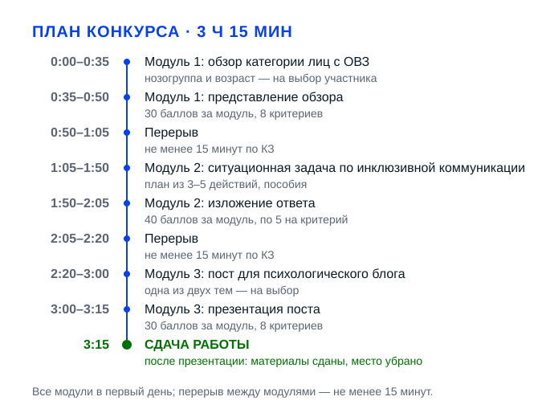
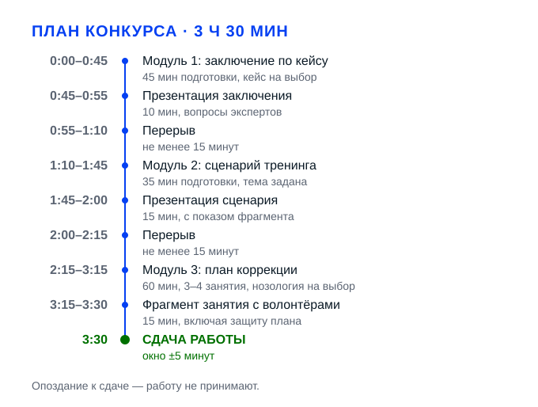
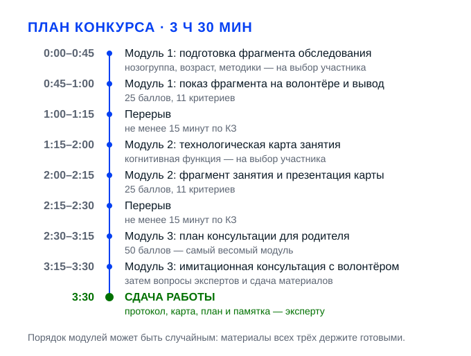

Коррекционная психология (Р)
Задания ниже — официальные файлы «Абилимпикс» (источник: abilympics-russia.ru), разложенные по категориям. Решения написаны по тексту задания, регламенту и критериям оценки; в них указано, что именно проверяет эксперт.
Школьник
14–16 лет, базовый уровень заданияВ официальном файле категории не разделены отдельными разделами — приводим задание целиком; различия по категориям смотрите в таблице модулей.
Пошаговое решение
Конкурсное задание категории «Школьники» по коррекционной психологии состоит из трёх модулей, и все они идут в первый день. Модуль 1 «Сопровождение» — краткая презентация или эссе об одной из категорий лиц с ОВЗ с учётом их особых образовательных потребностей: 35 минут на подготовку, 15 на представление, 30 баллов. Модуль 2 «Проектная деятельность» — ситуационная задача по инклюзивной коммуникации и план из 3–5 действий: 45 минут на решение, 15 на изложение, 40 баллов. Модуль 3 «Культурно-просветительская деятельность» — пост для психологического блога: 40 минут на подготовку, 15 на презентацию, 30 баллов. Между модулями обязателен перерыв не менее 15 минут, а нозологическую группу, возраст и тему поста вы выбираете сами. Обратите внимание: здесь нет ни одного балла за красоту речи — все 100 баллов набираются на точности содержания, соблюдении регламента и умении объяснять свои решения.

Задача 1. Подготовить и представить краткий обзор одной из категорий лиц с ОВЗМодуль 1 · 30 баллов · 35 минут подготовки + 15 минут презентации
Модуль 1 называется «Сопровождение», и по конкурсному заданию вы делаете краткую презентацию или эссе об одной из категорий лиц с ОВЗ с учётом их особых образовательных потребностей. Нозологическую группу и возраст вы выбираете сами — этим правом нужно воспользоваться осознанно, потому что 30 баллов модуля делятся на восемь критериев, и половина из них проверяет не красоту речи, а точность содержания: полнота учёта возрастных особенностей — 4 балла, полнота учёта нозологических особенностей — 4 балла, системность информации — 4 балла, корректность изложения — 4 балла. На подготовку даётся 35 минут, на представление — 15. За это время нужно успеть выбрать группу, собрать ядро содержания, выстроить структуру и один раз проговорить текст вслух.
Действие 1.1. Выбрать нозологическую группу, возраст и формат работы
Шаг 1.1.1
Берём чистый лист и в левой колонке выписываем нозологические группы, которые действительно понимаем: нарушение слуха, нарушение зрения, нарушение опорно-двигательного аппарата, задержка психического развития, расстройства аутистического спектра, нарушение речи, умственная отсталость. Напротив каждой ставим число от одного до пяти — сколько особых образовательных потребностей этой группы вы можете назвать без подсказки, не заглядывая в конспект. Выбираем ту, у которой стоит четыре или пять, и обводим её. На выбор отводим не больше пяти минут: дальше начинается работа с содержанием.
Конкурсное задание разрешает участнику выбрать нозологическую группу и возраст самостоятельно, и это единственный модуль, где выбор такой широкий. Критерий 3 «Полнота учёта нозологических особенностей» стоит 4 балла и оценивается объективно — эксперт сверяет сказанное с картой критериев, а не с общим впечатлением. Если группа выбрана наугад, речь распадается на общие слова, и теряются сразу два критерия: нозология и системность.
Проверьте себя так: закройте лист и назовите вслух пять потребностей выбранной группы, не подглядывая. Если на четвёртой вы сбились и начали говорить «ну, им нужна поддержка» — группа не ваша, берите соседнюю строку. Решение должно быть принято до того, как вы начнёте писать структуру.
Самая частая ошибка — выбрать редкую группу из уважения к сложности: слепоглухоту, тяжёлые множественные нарушения, и говорить о них по названию. Эксперт слышит общие фразы, ставит низкий балл по нозологии, и вместе с ним проседает системность. Вторая ошибка — менять группу на середине подготовки, когда половина текста уже написана.
Эксперт слушает первые полторы-две минуты особенно внимательно: названа ли группа прямо, совпадает ли с тем, что заявлено в начале, и держится ли выбранная линия до конца выступления. Если одну и ту же группу вы называете тремя разными словами, он уточняет вопросом, о ком именно идёт речь.
Шаг 1.1.2
К выбранной группе сразу пристёгиваем возраст: пишем на листе «младший школьный, 7–10 лет» или «подростковый, 12–15 лет» — одну конкретную цифру, а не диапазон «от семи до восемнадцати». Дальше делим лист пополам: слева выписываем, что ребёнок этого возраста уже умеет в норме, справа — что у него не формируется или формируется с опорой на специальные условия. Например, для семилетки с нарушением слуха слева будет «понимает обращённую речь на слух», справа — «понимает речь только в тишине, с опорой на чтение с губ и остаточный слух».
Критерий 2 «Полнота учёта возрастных особенностей» тоже стоит 4 балла, и он проверяется по тому, звучит ли возраст в содержании, а не только в заголовке. Возраст задаёт и словарь, и примеры: то, что убедительно для первоклассника (игровой сюжет, короткая инструкция из трёх слов), для подростка звучит как снисходительность. Без привязки к возрасту обзор превращается в описание диагноза, а диагноз — это не особая образовательная потребность.
Проверка простая: в каждом крупном блоке вашего текста должно быть слово или пример, привязанный к возрасту — «на уроке в первом классе», «на перемене в пятом», «при подготовке к ОГЭ». Если примеры можно без потерь переставить в любой возраст, значит возраста в работе нет.
Типичный провал — оставить возраст только в названии темы, а всё содержание строить на общих рассуждениях о нозологии. Тогда минус 4 балла за возраст и минус по системности: обзор не отвечает на вопрос «что делать учителю вот с этим семилеткой в понедельник».
Эксперт проверяет возраст по конкретике примеров и по вопросам, которые задаёт после выступления: чаще всего спрашивают, чем отличается работа с этим ребёнком в первом и в пятом классе.
Шаг 1.1.3
Выбираем форму — презентацию или эссе — и считаем время под неё. Если делаете презентацию, планируйте 7–9 слайдов: титул, портрет группы, потребности, условия среды, приёмы, вывод. Если эссе, планируйте 1,5–2 страницы, то есть примерно 2500–3000 знаков при шрифте 12–14 пунктов и полуторном интервале. Время распределяем так: 10 минут на выбор и сбор потребностей, 10 минут на структуру и правку, 10 минут на репетицию вслух, оставшиеся 5 минут держим как резерв на непредвиденное — сбой техники, поиск кабинета, уточнение у эксперта.
35 минут на подготовку и 15 на презентацию — жёсткие цифры из конкурсного задания, и они входят в критерий 1 «Соблюдение правил конкурса» (4 балла). Участник, который к моменту вызова не готов начинать, показывает эксперту, что не умеет планировать работу, даже если содержание сильное. Резерв в 5 минут нужен не для красоты: без него любая заминка съедает репетицию, а без репетиции выступление выходит на 12 минут вместо 15.
Смотрите на часы дважды: когда закончили каркас и когда закончили первый прогон. Если каркас готов только к 25-й минуте, режьте содержание, а не репетицию — лучше семь слайдов, проговорённых вслух, чем двенадцать, которые вы видите впервые.
Частая ошибка — оставить репетицию «на потом» и первый раз проговорить текст перед экспертом. Вторая — увлечься оформлением: подбор шрифтов и картинок легко съедает 20 минут, а баллов за красоту слайда в карте критериев этого модуля нет вовсе.
Эксперт отмечает, во сколько вы начали и как держите регламент, и засчитывает это в первый критерий вместе с корректным обращением к аудитории. Если подготовка идёт дольше тридцати пяти минут, он подходит и предупреждает один раз.
Действие 1.2. Собрать содержательное ядро: особые образовательные потребности
Шаг 1.2.1
Выписываем 5–7 особых образовательных потребностей выбранной группы, и каждую формулируем от глагола: «нуждается в укороченной и повторённой инструкции», «нуждается в письменном дублировании устного задания», «нуждается в опоре на сохранные каналы восприятия». Рядом с каждой ставим цифру или факт: для нарушения слуха — расстояние до говорящего не больше полутора метров, лицо должно быть освещено; для нарушения зрения — текст не мельче 16–18 пунктов, освещённость рабочего места не ниже 300 люкс; для нарушения опорно-двигательного аппарата — проход между столами не уже 1,5 метра.
Предмет модуля — особые образовательные потребности, а не диагноз. Критерий 4 «Популяризация психологических знаний» (4 балла) оценивает, сумели ли вы перевести специальную лексику на язык неподготовленного слушателя, а критерий 5 «Системность» (4 балла) — связаны ли потребности между собой. Формулировки от глагола сразу делают текст пригодным для учителя: он видит не «нарушение слуха», а конкретное действие.
Проверьте получившийся список на переводимость: возьмите каждую потребность и спросите себя, сможет ли учитель, никогда не читавший дефектологию, выполнить это в четверг на уроке. Если формулировка требует ещё одного объяснения, она слишком специальная — переписывайте.
Ошибка номер один — пересказывать медицинскую характеристику: «нейросенсорная тугоухость третьей степени». Эксперт не найдёт в этом педагогического смысла и снимет баллы по популяризации. Вторая ошибка — общие потребности вроде «нужна поддержка и понимание», которые подходят к любой группе и потому не показывают знания нозологии.
Эксперт слушает, звучат ли в вашем тексте глаголы действия и цифры, и мысленно примеряет каждую потребность к работе учителя-предметника. Особенно заметна разница между «ребёнку трудно» и «ребёнку нужно письменное дублирование задания».
Шаг 1.2.2
Каждую потребность превращаем в пару «условие — приём»: слева пишем, какое условие среды нужно создать, справа — что конкретно делает взрослый. Например: «условие: ребёнок сидит за первым столом у окна, лицом к говорящему — приём: учитель не поворачивается к доске, пока объясняет задание, и дублирует ключевую фразу на карточке». Для подростка с расстройством аутистического спектра: «условие: визуальное расписание на день на видном месте — приём: перед сменой деятельности взрослый подводит ребёнка к расписанию и показывает следующий пункт».
Такая пара закрывает сразу два критерия: системность (4 балла) и корректность изложения (4 балла). Эксперт проверяет системность именно так — смотрит, вытекает ли приём из потребности, а не приклеен ли он рядом. Кроме того, пара «условие — приём» не даёт уйти в жалость и в рассуждения о трудной судьбе: разговор остаётся в профессиональной рамке.
Проверка: переставьте приёмы между потребностями. Если после перестановки смысл не потерялся, значит связи нет и вы написали два независимых списка. Норма — когда приём без своей потребности выглядит нелепо: карточка с инструкцией бессмысленна без потребности в письменном дублировании.
Типичная ошибка — писать условия среды без действий взрослого: «ребёнку нужен специальный стул». Эксперт спрашивает, кто и когда этот стул поставит, и выясняется, что ответа в работе нет. Вторая ошибка — приёмы, которые нарушают права других детей: например, освободить ребёнка от опроса вместо адаптации формы опроса.
Эксперт задаёт один-два уточняющих вопроса по паре «условие — приём», обычно самую слабую, и по ответу видит, понимаете ли вы, зачем это делается. Вопрос чаще всего звучит так: «а что вы сделаете, если приём не сработает».
Шаг 1.2.3
Добавляем в текст измеримые ориентиры, взятые из самого конкурсного задания и санитарных требований: рабочее место участника с нарушением слуха, зрения или опорно-двигательного аппарата — 3000 на 1900 миллиметров, ширина прохода между рабочими местами — 1,5 метра, освещённость — не менее 300 люкс, шум — не выше 81 дБА, температура воздуха в холодный период при лёгкой работе — 21–24 градуса. Для нарушения зрения — текст задания в плоскопечатном виде шрифтом не мельче 16–18 пунктов, при необходимости дублирование шрифтом Брайля и лупа с подсветкой.
Цифры — самый короткий путь к критерию 4: неподготовленный слушатель запоминает не термин, а «полтора метра» и «16-й кегль». Одновременно они показывают, что вы знакомы с нормативной базой, а это уже относится к критерию 3 (нозологические особенности, 4 балла) и к критерию 6 (корректность изложения, 4 балла): цифру трудно переврать в эмоциональном порыве.
Проверьте, что каждая цифра у вас привязана к источнику и произносится целиком: не «примерно полтора метра», а «полтора метра — это дистанция, с которой ребёнок с нарушением слуха читает по губам». Если цифру не можете объяснить, лучше убрать: одна неверная цифра стоит дороже трёх пропущенных.
Ошибка — сыпать цифрами без привязки к смыслу: «300 люкс, 81 дБА, 21–24 градуса» подряд, как список. Эксперт не успевает связать их с потребностями, и системность падает. Вторая ошибка — называть нормы, которых нет в задании, «по памяти»: расхождение с документом читается как небрежность.
Эксперт сверяет цифры с инфраструктурным листом и санитарными требованиями, которые есть у него в карте критериев. Расхождение в один-два пункта кегля он пропускает, но придуманную цифру отмечает отдельно, как и цифру, названную без объяснения.
Шаг 1.2.4
Придумываем один «мостик» — короткий образ или историю, которая объясняет потребность человеку без подготовки. Работает так: «Представьте, что вы разговариваете по телефону с плохой связью: вы слышите не слова, а их обрывки, и достраиваете смысл по контексту. Именно так слышит ребёнок с тугоухостью в шумном классе — и поэтому ему нужно видеть ваше лицо». Ставим мостик в начало и второй, короткий, в конец — как возврат к главной мысли.
Критерий 4 оценивает способность донести психологические знания до «неподготовленного слушателя» и стоит 4 балла; критерий 7 «Умение удерживать внимание аудитории» — ещё 3. Аналогия закрывает оба: она даёт слушателю точку опоры в собственном опыте и держит внимание первые полминуты, когда эксперт только начинает слушать. Без мостика первая минута уходит на определения, и аудитория отключается.
Проверьте аналогию на постороннем человеке: если после одной фразы он может пересказать, в чём трудность, — мостик работает. Если приходится объяснять аналогию, она слишком сложная, и её место занимает пример из школьной жизни: перемена, столовая, ответ у доски.
Ошибка — брать аналогию, которая унижает: «как будто ты иностранец», «как глухой» в качестве шутки. Эксперт фиксирует это как нарушение корректности (4 балла) и как несоблюдение правил конкурса. Вторая ошибка — растянуть аналогию на три минуты: тогда на содержание остаётся меньше времени, и обзор теряет полноту.
Эксперт слушает первую минуту и отмечает, появился ли у него самого образ, которым можно поделиться с коллегой. Если после аналогии он может пересказать трудность своими словами, критерий популяризации закрыт.
Действие 1.3. Выстроить структуру и уложиться в регламент
Шаг 1.3.1
Собираем каркас из семи блоков и подписываем к каждому время: название группы и возраст — 1 минута; мостик-аналогия — 1 минута; что происходит с ребёнком в школе — 3 минуты; пять особых образовательных потребностей — 4 минуты; условия среды и приёмы — 3 минуты; что это даёт — 1,5 минуты; вывод и приглашение к вопросам — 1,5 минуты. Итого 15 минут. Каждый блок записываем одной строкой тезиса и одной строкой примера — так текст остаётся связным, а не превращается в список.
Структура напрямую связана с критерием 5 «Системность, интегрированность представленной информации» (4 балла) и с критерием 6 «Корректность изложения» (4 балла). Распределённое время защищает от типичного перекоса: участник увлечённо рассказывает о нозологии 10 минут, а до приёмов и выводов не доходит, и последние блоки, за которые дают баллы, просто не звучат.
Проверьте каркас арифметикой: сумма минут должна равняться 15, а не «примерно». Затем прочитайте только тезисы подряд — они должны складываться в связный рассказ без ваших пояснений. Если между тезисами провал, добавьте связку одной фразой.
Частая ошибка — строить каркас из восьми-девяти блоков: дробится внимание, и каждый блок звучит по 40 секунд, не успевая раскрыться. Вторая — не оставить времени на вывод: без вывода работа выглядит обрывком, и эксперт теряет возможность зафиксировать целостность.
Эксперт следит, есть ли в выступлении начало, середина и конец: структура оценивается отдельно от содержания, и её отсутствие видно уже на третьей минуте.
Шаг 1.3.2
Проверяем темп речи расчётом, а не на слух: спокойная публичная речь — примерно 100–120 слов в минуту, значит, на 15 минут нужно 1500–1700 слов, а на 13 минут работы без вопросов — около 1400. Считаем слова в заготовке. Если их 2500, вы будете читать скороговоркой и не успеете досказать; если 700 — будете останавливаться и заполнять паузы словами-связками. Правку делаем в сторону сокращения: убираем прилагательные и повторы, оставляем глаголы и цифры.
Регламент 15 минут на презентацию входит в критерий 1 (4 балла), а перегруженный текст бьёт ещё и по критерию 7 (удержание внимания, 3 балла): слушатель перестаёт успевать за мыслью и отключается. Расчёт по словам — единственный способ узнать объём заранее, потому что на репетиции с часами вы будете подсознательно ускорять речь.
Сверьте после первого прогона: если фактическое время больше 15 минут на полторы минуты и более — режьте блок «что происходит с ребёнком в школе» до двух минут, он самый растяжимый. Если меньше 12 минут — добавьте один пример из практики, а не воды.
Ошибка — рассчитывать на «я быстро говорю». Быстрая речь стоит баллов по критерию 6 (корректность): эксперт не успевает зафиксировать формулировки и слышит слитный поток. Вторая — читать с листа дословно, что ломает контакт с аудиторией.
Эксперт отмечает по часам фактическую длительность и отдельно — уложились ли вы в неё без сигнала «время». Превышение на минуту он обычно прощает, а на три минуты — снижает первый критерий и ждёт, чем именно вы пожертвовали.
Шаг 1.3.3
Первый слайд или первый абзац делаем титульным и обязательно включаем в устное вступление три вещи: как вас зовут, какую группу и какой возраст вы разбираете, в каком формате работаете — обзор, эссе или презентация. Формулировки держим нейтральными: «дети с нарушением слуха», «ребёнок с расстройством аутистического спектра», без диагнозов-ярлыков и без личных историй конкретных учеников. Если приводите пример из практики, меняйте имя и убирайте детали, по которым ребёнка можно узнать.
Критерий 1 «Соблюдение правил конкурса» стоит 4 балла, и первое, что в него входит, — корректное представление себя и темы. Критерий 6 «Корректность изложения информации» (4 балла) проверяет терминологию: с точки зрения профессиональной этики правильно говорить «ребёнок с ОВЗ» или «ребёнок с нарушением слуха», а не «глухой ребёнок» в качестве характеристики человека. Обезличивание примеров — не формальность, а требование к работе психолога.
Проверьте текст на две вещи: нет ли в нём узнаваемых деталей (школа номер, фамилия, класс) и нет ли слов, которые описывают человека через нарушение. Прогоните поиском по своему черновику слова «больной», «дефект», «неполноценный» — их не должно быть ни в одном блоке.
Ошибка — начать сразу с содержания, забыв назвать группу и возраст: эксперт теряет ориентацию и снижает первый критерий. Вторая, более дорогая, — рассказать узнаваемую историю из своей школы: это нарушение этики и правил конкурса, а не просто неловкость.
Эксперт фиксирует вступление целиком и в карте отмечает отдельно корректность терминологии — это единственный критерий модуля, который оценивается субъективно вместе с умением держать внимание.
Шаг 1.3.4
Оформляем то, что будет видно на экране или на бумаге. Для слайда — не больше шести строк на слайде, кегль от 24 пунктов, контраст тёмного текста на светлом фоне, одна мысль на слайд, никаких анимаций. Для эссе — шрифт 12–14 пунктов, полуторный интервал, абзацы по 4–6 строк, подзаголовки жирным. Ключевые цифры выделяем крупно: «1,5 метра», «16–18 пунктов», «300 люкс» — их эксперт ищет глазами, если выступление слушает с опорой на материалы.
Кегль и контраст — не вкусовщина: конкурсное задание требует, чтобы текст задания был доступен участникам с нарушением зрения шрифтом не мельче 16–18 пунктов, и та же логика работает в вашу сторону — если ваш материал читается издалека, его успевают воспринять. Кроме того, аккуратные материалы поддерживают критерий 6 (корректность) и помогают критерию 7: аудитория смотрит на слайд, а не в телефон.
Проверьте приёмом «три шага»: отойдите от экрана на три шага и посмотрите, читается ли заголовок и видно ли цифры. Для эссе — прочитайте первый абзац с расстояния вытянутой руки: если приходится щуриться, кегль мал.
Ошибка — вставить на слайд полный текст выступления: эксперт начинает читать слайд и перестаёт слушать, а вы теряете контакт. Вторая — мелкий кегль и светло-серый текст на белом: материал формально есть, но не работает.
Эксперт смотрит материалы в момент выступления и может попросить показать их после — оценивается то, что реально видно, а не то, что задумано. В распечатке он первым делом ищет заголовок и цифры, а на слайде — не больше шести строк.
Действие 1.4. Отрепетировать, выступить и ответить на вопросы
Шаг 1.4.1
Прогоняем текст вслух дважды и оба раза с часами. Первый прогон — с листом в руках, чтобы поймать места, где вы запинаетесь и где не хватает связки; такие места помечаем на полях одной чертой. Второй прогон — без листа, глядя в точку на стене на уровне глаз, как будто перед вами сидит эксперт. После второго прогона выписываем на карточку размером с ладонь пять опорных слов — по одному на блок, — и дальше держим в руках только эту карточку.
Два прогона — минимум, при котором речь перестаёт быть чтением вслух. Критерий 7 «Умение удерживать внимание аудитории» (3 балла) оценивает контакт: человек, смотрящий в лист, контакта не создаёт. Карточка с пятью словами решает главную проблему репетиции — она позволяет говорить связно, не заучивая текст наизусть, и при этом не терять структуру.
Признак готовности: во втором прогоне вы ни разу не сказали «сейчас посмотрю» и уложились в 14–15 минут. Если уложились в 17 — режьте блок, а не темп. Если сбились на третьем блоке, значит опорных слов слишком много или они сформулированы целыми фразами.
Ошибка — репетировать «в голове», проговаривая про себя: вслух речь звучит иначе, находятся повторы и проглатывания окончаний. Вторая — учить текст наизусть дословно: при первой же заминке участник теряет нить и начинает заново, а время уходит.
Эксперт отличает отрепетированное выступление по паузам: они стоят в смысловых точках, а не там, где кончилось дыхание. По карточке с пятью словами он сразу видит, что участник готов говорить, а не читать с листа.
Шаг 1.4.2
Вставляем в текст три приёма удержания внимания и отмечаем их на карточке звёздочкой. Первый — вопрос к аудитории в конце третьей минуты: «Как вы думаете, что ребёнок слышит, если сидит на последнем ряду?» Второй — короткая пауза на две-три секунды после цифры, чтобы она успела осесть. Третий — смена опоры: перейти от слайда к жесту или к предмету, например показать карточку с укороченной инструкцией, если она у вас есть.
Критерий 7 оценивает именно это и стоит 3 балла, но он же подтягивает и критерий 4 (популяризация, 4 балла): неподготовленный слушатель удерживает внимание не дольше 4–5 минут на одном типе речи, и смена опоры возвращает его к теме. Вопрос к аудитории, кроме того, показывает, что вы работаете с ней, а не читаете доклад.
Проверьте по часам: между приёмами не должно быть больше четырёх минут. Если получается разрыв в шесть, добавьте ещё один вопрос в середину — но не больше трёх приёмов на 15 минут, иначе выступление превратится в викторину.
Ошибка — задать вопрос и не дать времени на ответ, сразу продолжая: аудитория чувствует формальность. Вторая — использовать приём, которого нет в вашем тексте, и на нём сбиться; приём должен быть отрепетирован так же, как содержание.
Эксперт отмечает, смотрит ли участник в аудиторию во время пауз и как реагирует на отсутствие ответа на вопрос — это видно сразу. Спокойное «тогда отвечу сам» после паузы он считает плюсом, а не провалом.
Шаг 1.4.3
Готовим ответы на вопросы: после выступления эксперты задают их по критерию 8 «Аргументированность ответов на вопросы экспертов» (3 балла). Заранее проговариваем три вероятных вопроса: почему выбрали эту группу и возраст, как бы вы поступили, если ребёнку нужен приём, а условий в школе нет, и что делать, если коллега считает, что «это не его проблема». На каждый держим заготовку из четырёх шагов: краткий ответ «да» или «нет», одно обоснование, один пример, одна оговорка про границы своей компетенции.
Три балла за аргументированность даются не за уверенный тон, а за структуру ответа и за то, что вы не выходите за пределы роли: школьник-участник не назначает лечение и не ставит диагноз, он описывает условия и приёмы. Оговорка про границы компетенции — сильный ход: она показывает профессиональную зрелость и защищает от вопроса-ловушки.
Проверьте заготовки на длину: ответ не дольше 40–60 секунд, то есть 3–4 предложения. Если ваш ответ разворачивается на две минуты, эксперты прервут вопросом, и структура рассыплется. Отрепетируйте один ответ вслух с секундомером.
Ошибка — отвечать «я не знаю» без попытки: три балла почти наверняка уходят. Вторая, более частая, — уходить в спор с экспертом или в оправдания; в карте критериев за это баллов нет, а впечатление теряется.
Эксперт задаёт вопросы после выступления и в карте фиксирует, отвечает ли участник на заданный вопрос или на удобный ему. Второй признак зрелости — умение сказать «этого я не знаю, но знаю, у кого спросить».
Шаг 1.4.4
Заканчиваем выступление тремя фразами: что главное вы хотели сказать про эту группу, какое одно действие может сделать любой учитель уже завтра, и благодарность за внимание с приглашением к вопросам. После вопросов — короткое «спасибо, я готов продолжить, если нужно» и возврат материалов на место: слайды закрыть, листы собрать, за собой убрать. Если работа была на бумаге, сдаём её так, как просил эксперт: с фамилией и категорией на первой странице.
Финальные три фразы работают на критерий 5 (системность, 4 балла) и критерий 6 (корректность, 4 балла): вывод показывает, что информация была собрана ради действия, а не ради пересказа. Аккуратная сдача материалов и убранное место входят в критерий 1 «Соблюдение правил конкурса» — 4 балла, и это те баллы, которые теряют чаще всего, потому что их никто не планирует.
Проверьте, что вывод звучит без новых фактов: всё, что вы назвали в выводе, должно уже встречаться в середине. И убедитесь, что материалы сданы в том формате, который объявили эксперты, — уточните это заранее, до выступления.
Ошибка — закончить на полуслове «ну, вот, в общем, всё»: эксперту нечего зафиксировать как итог. Вторая — уйти, оставив разбросанные листы и открытые файлы: правила конкурса нарушены, и балл снижается уже после содержательной части.
Эксперт слушает вывод целиком и отдельно смотрит, приведено ли рабочее место и материалы в порядок к моменту, когда вы покидаете зону. Порядок проверяют не всегда, но если проверят — баллы уже не вернуть.
Задача 2. Решить ситуационную задачу по инклюзивной коммуникацииМодуль 2 · 40 баллов · 45 минут на решение + 15 минут на изложение
Модуль 2 — проектная деятельность, и по конкурсному заданию вы знакомитесь с текстом ситуационной задачи и пишете план из 3–5 действий, которые помогут выйти из сложившейся ситуации, с возможным использованием наглядных пособий и дидактических материалов. На решение даётся 45 минут, на изложение ответа — 15. Это самый дорогой модуль конкурса: 40 баллов из 100, по 5 баллов на каждый из восьми критериев. Оценивается не «красивая идея», а попадание в кейс: решение должно соответствовать предложенной ситуации, учитывать возраст и нозологию её участников, быть логичным и аргументированным. Кейсы бывают разными — новый ученик в кресле-коляске, девочка с нарушением слуха в спортивной секции, мальчик с расстройством аутистического спектра на проектной смене, — но каркас работы над любым из них один и тот же.
Действие 2.1. Прочитать кейс и вытащить из него факты
Шаг 2.1.1
Читаем текст кейса дважды и во второй раз держим в руке карандаш. Отчёркиваем четыре вещи: кто участники и сколько им лет, где происходит действие, что именно происходит — какие поступки и слова, и кто испытывает трудность. Например, в кейсе с секцией: участники — девочка с нарушением слуха, которая читает по губам и иногда пользуется слуховым аппаратом, тренер и команда; место — тренировка и раздевалка; трудность — переспрашивания при объяснении упражнений и выпадение из неформального общения; конфликт — раздражение части команды.
Такая разметка закрывает критерий 4 «Решение задачи соответствует предложенному кейсу» — 5 баллов, самый обидный для потери. Эксперт сверяет ваш план с текстом кейса построчно, и если вы решаете не ту задачу (например, адаптируете ребёнка к школе вместо интеграции в секцию), пять баллов уходят целиком, каким бы хорошим ни был план. На разметку уходит не больше пяти минут из сорока пяти.
Проверьте себя: назовите ситуацию одним предложением, где есть все четыре элемента. Если предложение рассыпается на «ну, там девочка, и все раздражаются», вы не выделили трудность и будете писать план наугад.
Частая ошибка — читать кейс один раз и сразу начинать писать, опираясь на первое впечатление: тогда половина плана посвящена тому, что в тексте не упомянуто. Вторая — выписывать весь текст конспектом; на это уходит 15 минут, а нужны четыре строки.
Эксперт сверяет ваш ответ с кейсом по деталям: упомянуты ли именно те участники и именно та трудность, которая описана. Если вы поменяли место действия или возраст, он попросит перечитать кейс и начать сначала.
Шаг 2.1.2
Отделяем факты от оценок. Факт — «переспрашивает во время объяснения упражнений», «почти не участвует в разговорах в шумной раздевалке». Оценка — «не командный игрок», «портит атмосферу», «все раздражаются». В черновике выписываем две колонки: слева факты, справа оценки в кавычках. Работаем дальше только с фактами, а оценки превращаем в вопросы: почему команда так считает и что за этим стоит — неловкость, страх сказать что-то не то, усталость от повторов.
Это ключевой профессиональный ход: оценка в кейсе всегда дана чужим голосом, и если вы примете её за факт, план начнётся с исправления ребёнка, а не среды. Критерий 3 «Полнота учёта нозологических особенностей» (5 баллов) и критерий 6 «Творческий подход» (5 баллов) даются именно за то, что вы увидели барьер в окружении. Эксперт быстро отличает план «научить ребёнка быть как все» от плана «изменить условия».
Проверьте колонку оценок: в ней должны стоять слова в кавычках — цитаты из кейса. Если в правой колонке появились ваши собственные суждения о персонажах, вы начали домысливать; уберите это, пока не поздно.
Ошибка — принять оценку группы за правду и построить план вокруг «дисциплинировать» ребёнка: эксперты видят в этом непонимание нозологии. Вторая — игнорировать оценки совсем: тогда вы не работаете с аттитюдами, а конфликт остаётся.
Эксперт слушает, звучит ли в вашем ответе различение «что происходит» и «как это называют», и по нему оценивает зрелость анализа. Самая частая зацепка — цитата из кейса, принятая за факт и превращённая в приговор ребёнку.
Шаг 2.1.3
Определяем нозологию и возраст и записываем их отдельной строкой: «нарушение слуха, двусторонняя тугоухость, девочка 11–13 лет, читает по губам, иногда использует слуховой аппарат». Дальше выписываем три-четыре следствия из нозологии, которые важны именно в этой ситуации: в шуме разборчивость речи падает, поэтому раздевалка — худшее место для разговора; чтение с губ требует видеть лицо, поэтому объяснение стоя спиной или во время показа упражнения недоступно; слуховой аппарат усиливает и шум, поэтому в спортзале он может мешать.
Критерий 2 «Полнота учёта возрастных особенностей» и критерий 3 «Полнота учёта нозологических особенностей» стоят по 5 баллов — это четверть модуля. Следствия из нозологии нужны не для демонстрации знаний, а как основание плана: каждое действие потом должно опираться на одно из них. Если план не опирается на следствия, он может быть хорошим вообще, но не для этого ребёнка.
Проверьте связку: рядом с каждым пунктом плана должно вставать одно из следствий. Если пункт ни на что не опирается, он либо лишний, либо вы недописали обоснование. Делается это уже на готовом плане: поставьте рядом с каждым действием номер следствия.
Ошибка — написать только название нарушения без следствий: эксперт не видит, как вы переходите от диагноза к действию, и снижает балл по обоим критериям. Вторая — приписать возрасту несуществующие особенности, например требовать от подростка «просто потерпеть».
Эксперт проверяет, совпадает ли заявленный возраст с тем, как вы говорите о мотивации и способности ребёнка обсуждать проблему. Подростку можно предложить договорённость, младшему школьнику — только действие взрослого.
Шаг 2.1.4
Раскладываем трудность по трём видам барьеров и подписываем, где какой. Физический: шум в раздевалке, объяснение на фоне свистка и гомона, отсутствие визуальной опоры — схемы упражнения, разметки на полу. Коммуникативный: разговор идёт спиной к человеку, темп речи и одновременная речь нескольких людей, шутки, которые не видны, если не смотреть. Установочный: убеждение «она не командный игрок», неловкость при необходимости повторять, страх обидеть.
Три вида барьеров — это язык, на котором эксперты проверяют критерий 5 «Логичность и доступность изложения» (5 баллов): разложенная структура сразу видна в ответе. Кроме того, такая разбивка не даёт свести всё к одному типу действий: участники часто пишут только про установки («провести беседу о толерантности») и забывают про среду, которая в кейсе и создаёт половину трудности.
Проверьте, что на каждый вид барьера у вас есть хотя бы одна строка. Если физический барьер описан одной фразой «шумно», добавьте конкретику: свисток, музыка, эхо спортзала, одновременные голоса — это уже материал для действий.
Ошибка — писать всё в одну кучу: тогда в плане появляются действия «на всякий случай» и логика рассыпается. Вторая — считать установочный барьер главным и начинать с воспитательной беседы: в кейсе с раздевалкой сначала нужна организационная мера.
Эксперт слушает, есть ли в вашем анализе разделение уровней, и по нему строит вопросы: обычно спрашивают, какой барьер вы считаете главным и почему. Ответ «главный — установочный» без объяснения его не убедит.
Действие 2.2. Написать план из 3–5 действий
Шаг 2.2.1
Формулируем цель одной фразой и сразу добавляем признак, по которому видно, что цель достигнута. Не «помочь адаптироваться», а «девочка понимает объяснение упражнения с первого раза в большинстве подходов и участвует хотя бы в одном неформальном разговоре после тренировки». Признак достижения должен быть наблюдаемым: его можно увидеть на тренировке, не спрашивая самого ребёнка. Записываем цель в верхней части листа — она станет первой фразой устного ответа.
Конкурсное задание требует плана, который поможет выйти из сложившейся ситуации, — значит, план должен вести к результату, а не перечислять активности. Критерий 4 (соответствие кейсу, 5 баллов) и критерий 7 (логичность, 5 баллов) проверяются именно через цель: эксперт смотрит, есть ли у ваших действий общее направление. Цель с наблюдаемым признаком — самый быстрый способ показать это за одну фразу.
Проверьте цель двумя вопросами: можно ли её достичь за две-три недели и можно ли увидеть результат, не спрашивая ребёнка «тебе стало лучше?». Если на оба вопроса ответ «нет», цель слишком общая. Хорошая цель помещается в строку и не содержит слова «формировать».
Ошибка — ставить целью «сформировать инклюзивную культуру в команде»: это не решается пятью действиями и в кейсе не требуется. Вторая — цель без признака достижения, из-за которой потом невозможно сказать, помог ли план.
Эксперт слушает цель в первые полминуты изложения и по ней строит ожидания от всего ответа. Если цель названа уже после плана, он спрашивает, зачем тогда план и что именно вы проверяли.
Шаг 2.2.2
Пишем каркас плана: 3–5 действий, и у каждого — четыре элемента в одной строке: что делаем, кто делает, с кем, за какое время. Например: «1) до тренировки согласовать с тренером показ упражнения лицом к группе и короткую схему на планшете — тренер вместе с участником, один день; 2) ввести правило «говорим по одному» на построении — тренер, две недели; 3) договориться о тихом месте для разговоров после тренировки — участник с капитаном команды, неделя». Пять действий — верхняя граница по заданию, и её лучше не превышать.
Требование «3–5 действий» стоит в самом тексте задания, и его нарушение читается как невыполнение задания, даже при хорошем содержании. Четыре элемента в строке закрывают критерий 6 «Творческий подход» (5 баллов) в его профессиональном смысле — не оригинальность ради оригинальности, а работоспособность решения, — и критерий 5 «Логичность и доступность» (5 баллов): эксперт слышит, кто и когда это сделает.
Проверьте план на выполнимость: каждое действие должно быть по силам тому, кто его выполняет. Спросите по каждому пункту «кто именно и в какой день» — если ответа нет, пункт написан для отчёта, а не для дела.
Ошибка — написать десять мелких действий, чтобы «показать объём»: задание просят 3–5, и лишние пункты размывают логику. Вторая — действия без адресата, вроде «организовать поддержку», где непонятно, кто её организует.
Эксперт считает действия и отмечает, укладывается ли участник в заданный диапазон, — это первое, что фиксируется в карте по этому модулю. Дальше он проверяет, есть ли у каждого действия адресат и срок.
Шаг 2.2.3
Проверяем план на попадание в кейс: возвращаемся к четырём отчёркнутым фактам и по очереди закрываем их действиями. Если факт остался незакрытым — добавляем действие или расширяем существующее. Затем делаем обратную проверку: перечитываем план и спрашиваем по каждому пункту, в каком месте кейса он укоренён. Пункт без корня удаляем, даже если он нравится.
Это самая частая точка потери пяти баллов по критерию 4. Участники пишут хороший универсальный план про инклюзию, а эксперт не находит в нём деталей кейса: ни раздевалки, ни переспрашиваний, ни раздражения команды. Обратная проверка занимает пять минут и надёжно удерживает соответствие заданию.
Признак готовности: рядом с каждым действием можно назвать фразу из кейса, которая его вызвала. Если хотя бы для одного действия такой фразы нет — переписывайте или убирайте. Удобно делать карандашом: номер отчёркнутого факта рядом с пунктом плана.
Ошибка — убрать детали кейса ради «общего вида»: получается реферат на тему инклюзии. Вторая — пересказать кейс в плане, не добавив ни одного действия; это тоже не решение. Третий провал — разобрать конфликт, но не тронуть саму трудность, из-за которой он возник.
Эксперт держит текст кейса перед собой и сверяет: упомянуты ли конкретные обстоятельства — место, участники, характер затруднения. Совпадение по трём деталям из четырёх он считает попаданием в задание.
Шаг 2.2.4
Распределяем роли так, чтобы ребёнок был участником, а не объектом помощи: в каждом действии у него есть своя часть. Например: девочка сама выбирает, где ей удобно стоять на построении, и сама показывает капитану, как ей удобнее видеть лицо говорящего; команда получает простое правило «скажи один раз, покажи один раз», а не «помогай слабой». Отдельной строкой проговариваем, чего мы НЕ делаем: не обсуждаем ребёнка в его отсутствие, не сравниваем с другими, не превращаем в помощника тренера без его желания.
Критерий 6 «Творческий подход» (5 баллов) и критерий 3 (нозологические особенности, 5 баллов) сходятся именно здесь: профессиональное решение сохраняет субъектность ребёнка. Плюс на этом строится ответ на вопросы экспертов по критерию 8 (5 баллов): самый частый вопрос — «а не станет ли ребёнок зависимым от постоянной помощи». Заготовленная строка «чего мы не делаем» отвечает на него до того, как его задали.
Проверьте по тексту плана: если убрать все слова про команду и тренера, останется ли у ребёнка хотя бы одно собственное действие. Если нет, план превращает его в объект. Проверяйте по списку: у ребёнка должно быть действие в каждом пункте.
Ошибка — строить план вокруг «назначить помощника из числа сильных учеников»: это создаёт зависимость и часто унижает. Вторая — писать за ребёнка, не спросив, что ему удобно: половина решений в таких планах оказывается неудобной именно тому, для кого придумана.
Эксперт слушает, звучит ли голос самого ребёнка в вашем решении, и задаёт вопрос «а что если она откажется от вашего варианта». Ответ «тогда мы обсудим другой» закрывает вопрос полностью.
Действие 2.3. Подготовить наглядные пособия и дидактические материалы
Шаг 2.3.1
Выбираем одно-два пособия, не больше: задание разрешает использовать наглядные пособия и дидактические материалы, и перегруз здесь только вредит. Под кейс с нарушением слуха работают: карточка-схема упражнения из трёх квадратов «начало — движение — конец» и табличка-правило «один говорит — остальные смотрят». Под кейс с креслом-коляской — схема класса с отмеченным маршрутом и местом, где парта не мешает проезду. Под кейс с расстройством аутистического спектра — визуальное расписание из пяти карточек с липучками.
Критерий 6 «Творческий подход к решению задачи» (5 баллов) оценивает в том числе умение подобрать инструмент под ситуацию, а не количество материалов. Одно пособие, которое вы умеете объяснить и применить, приносит больше баллов, чем три красивых, про которые вы говорите «это для наглядности». Кроме того, пособие даёт опору в изложении: вы показываете, а не рассказываете.
Проверьте выбор вопросом: какое действие из плана это пособие обслуживает? Если пособие ни к какому действию не привязано, оно лишнее. Норма — одно пособие на два-три действия, и проверку лучше делать до того, как вы начнёте рисовать.
Ошибка — нарисовать красивый плакат про толерантность: он не решает ни одной задачи кейса и баллов не добавляет. Вторая — принести пособие, но не суметь объяснить, как им пользуется тренер или учитель.
Эксперт смотрит, показывает ли участник пособие в момент изложения и умеет ли объяснить, как оно применяется на практике. Пособие, о котором сказано «это для наглядности», баллов не добавляет.
Шаг 2.3.2
Делаем пособие из того, что есть на столе, за 8–10 минут: лист А4, маркер, ножницы, три-четыре карточки. Схема упражнения — три прямоугольника, стрелка между ними, подпись в одно слово под каждым. Визуальное расписание — полоска картона и пять квадратов с пиктограммами: «построение», «разминка», «упражнение», «игра», «разговор». Правило пишем крупно, одной строкой, без запятых и вводных слов: «говорит один — остальные смотрят на него».
Время на подготовку ограничено 45 минутами, и в них входит всё: чтение кейса, план, пособие и репетиция изложения. Десять минут на пособие — это верхняя граница; если рисовать двадцать, останется меньше времени на прогон ответа, и пострадает критерий 5 (логичность, 5 баллов). Простая схема читается быстрее красивой и лучше работает в разговоре с экспертом.
Проверьте пособие «тестом на расстояние»: положите лист на стол и отойдите на два шага — надписи должны читаться. Затем проговорите вслух одну фразу о том, как этим пользуются на тренировке; если не получается за двадцать секунд, упрощайте.
Ошибка — потратить половину времени на оформление, оставив репетицию на последние пять минут. Вторая — сделать пособие с длинными подписями: читать их вслух на изложении некогда, а без чтения они не работают.
Эксперт видит пособие в руках участника и оценивает, можно ли им пользоваться сразу, без инструкции на две страницы. Проверяет он это просто: смотрит на карточку и спрашивает, что делать дальше.
Шаг 2.3.3
Проверяем доступность пособия по трём признакам: шрифт не мельче 16–18 пунктов, контраст тёмного на светлом, одна мысль на карточку. Дополнительно проверяем язык: глаголы в повелительном наклонении единственного числа, не больше шести слов в строке, никаких сложноподчинённых конструкций. Если пособие предполагает чтение с губ, на карточке не должно быть мелкого текста, который заставляет опускать глаза: смысл передаём рисунком и стрелкой.
Требования доступности взяты не из головы: конкурсное задание задаёт для участников с нарушением зрения текст шрифтом 16–18 пунктов, а для рабочих мест — освещённость не менее 300 люкс; та же логика применима к любому материалу, который вы делаете для ребёнка. Продуманная доступность напрямую поддерживает критерий 3 (нозологические особенности, 5 баллов) и критерий 6 (творческий подход, 5 баллов).
Проверьте чтением вслух: прочитайте надпись так, как её прочитает ребёнок — если вы сами сбиваетесь, надпись перегружена. И посмотрите на карточку при слабом свете: контраст должен держаться не только у окна.
Ошибка — писать на карточке полные предложения с пояснениями: читать их некогда и незачем. Вторая — цветовая кодировка без подписи: ребёнку с нарушением цветовосприятия или без знания вашей системы она ничего не сообщает.
Эксперт берёт пособие в руки после изложения и проверяет, понятно ли оно без ваших устных пояснений. Мелкий шрифт и длинные подписи он отмечает как неучтённую нозологию, даже если пособие красивое.
Действие 2.4. Изложить ответ за 15 минут
Шаг 2.4.1
Строим устный ответ из четырёх частей с точным временем: 2 минуты — ситуация и её участники своими словами, 3 минуты — анализ (нозология, возраст, три вида барьеров), 7 минут — план из 3–5 действий с пособием в руках, 3 минуты — ожидаемый результат и границы своей работы. Внутри части про план держим порядок: сначала действие, потом на какой барьер оно отвечает, потом кто выполняет. На листе пишем четыре заголовка и под каждым два-три слова.
Такая разбивка закрывает критерий 7 «Логичность и доступность изложения материала» (5 баллов) — по сути, он и оценивает наличие структуры. Семь минут на план соответствуют его весу: три четверти баллов модуля относятся к решению, а не к пересказу кейса. Участники же обычно тратят на пересказ половину времени, и на действия остаётся три минуты.
Проверьте хронометраж прогоном: если пересказ ситуации занимает больше трёх минут, вы пересказываете текст, а не анализируете. Сокращайте до двух фраз: кто, где, в чём трудность. Расхождение больше минуты — признак того, что структура не та.
Ошибка — начинать с длинного вступления о важности инклюзии: время уходит, а баллов за это нет. Вторая — рассказывать анализ и план вперемешку, из-за чего эксперт не может зафиксировать ни структуру, ни полноту.
Эксперт слушает первые две минуты и делает отметку, понял ли участник, о какой ситуации говорит. Если пересказ затягивается, он останавливает и просит перейти к решению.
Шаг 2.4.2
Следим за речью: критерий 5 «Грамотность речи участника» стоит 5 баллов — столько же, сколько весь анализ барьеров. Правила простые: термины называем и сразу расшифровываем один раз — «аттитюдный барьер, то есть барьер отношения», «визуальное расписание — это карточки, которые показывают порядок дел»; предложения держим в пределах 12–15 слов; не используем слова-заполнители «как бы», «типа», «в общем»; не начинаем ответ с «ну».
Пять баллов за грамотность — самый дешёвый и самый часто теряемый ресурс модуля. Расшифровка термина нужна не эксперту, а тому «неподготовленному слушателю», про которого прямо говорит критерий 4 в других модулях: привычка объяснять простыми словами переносится сюда. Кроме того, грамотная речь удерживает внимание и поддерживает критерий 7.
Проверьте записью: включите диктофон на телефоне и проговорите две минуты анализа, потом прослушайте. Считайте слова-заполнители — если их больше пяти на две минуты, с ними надо работать, и лучше узнать об этом на репетиции, а не на конкурсе.
Ошибка — сыпать терминами без расшифровки, чтобы показать знания: эксперт снижает балл за доступность. Вторая — наоборот, избегать терминов совсем: тогда пропадает профессиональная часть и проседает критерий 2 или 3.
Эксперт отмечает грамотность отдельной строкой в карте и реагирует на слова-заполнители, которые слышны в первые же полминуты. Термин без расшифровки он считает ошибкой речи, а не признаком знания.
Шаг 2.4.3
Добавляем к плану один элемент, который делает решение не шаблонным, но не рискует: необычная, но простая организационная мера. Например, «правило одного говорящего», закреплённое жестом тренера — поднятая рука означает «сейчас говорит один»; или «минута в тишине» после тренировки, когда команда переодевается без музыки и можно поговорить; или карточка-смайлик, которой девочка показывает тренеру «поняла» или «повтори, пожалуйста», не перебивая объяснение.
Критерий 6 «Творческий подход к решению задачи» стоит 5 баллов, но эксперты снижают его и за шаблон («провести классный час о толерантности»), и за фантазию, которую невозможно выполнить. Работает середина: мера, для которой нужны только люди и договорённость, без оборудования и денег. Такие меры легко защитить в ответах на вопросы по критерию 8.
Проверьте элемент тремя вопросами: это можно сделать в понедельник, это не требует ресурсов, это не выделяет ребёнка из группы. Если хотя бы один ответ отрицательный, ищите другой элемент. Проверяйте на черновике — три вопроса задаются за минуту.
Ошибка — придумать меру, которая делает ребёнка заметнее: отдельный стул в углу, особое разрешение, значок. Вторая — предложить то, чего в школе нет и не будет к следующей неделе: план останется на бумаге.
Эксперт обычно просит назвать самое нестандартное действие и спрашивает, почему оно сработает. Ответ без примера он считает фантазией, ответ с примером — решением.
Шаг 2.4.4
Заканчиваем ответ результатом и границами: что изменится через две недели, как это проверить и где заканчивается ваша роль. Формулировка для финала: «Через две недели проверяем по двум признакам: девочка перестаёт переспрашивать в объяснении и остаётся в раздевалке, когда команда обсуждает игру. Если изменений нет, я обсуждаю с тренером и школьным психологом, что мы упустили, — сам я не принимаю решений за семью и не работаю с медицинской стороной». После этого — пауза и готовность к вопросам.
Критерий 8 «Аргументированность ответов на вопросы экспертов» стоит 5 баллов и проверяется в том числе через то, насколько спокойно участник очерчивает свою роль: размытые границы приводят к вопросам-ловушкам, чёткие — к разговору по существу. Признаки результата нужны и для критерия 7 (логичность): ответ замыкается на цель, заявленную в начале.
Проверьте финал на связность с началом: признаки из финала должны совпадать с тем, что вы назвали целью в первой минуте. Расхождение эксперт слышит сразу и трактует как отсутствие логики. Сверьте две строки на листе дословно.
Ошибка — закончить словами «вот такой у меня план» без результата: ответ обрывается, и последние баллы по логичности не начисляются. Вторая — обещать больше, чем возможно, например «ребёнок полностью адаптируется за месяц».
Эксперт задаёт вопросы после финала и проверяет, держится ли участник своей линии или начинает менять план под каждым вопросом. Умение сказать «здесь я бы уточнил» ценится выше готовности спорить.
Задача 3. Сделать пост для психологического блога и презентовать егоМодуль 3 · 30 баллов · 40 минут на подготовку + 15 минут на презентацию
Модуль 3 — культурно-просветительская деятельность: вы разрабатываете пост для психологического блога в социальных сетях и презентуете его. Тем две, и выбирать нужно одну: психологическая поддержка сверстников с ОВЗ, столкнувшихся с трудностями в учёбе, или поддержка сверстников с ОВЗ, столкнувшихся с проблемами в коммуникации. На подготовку даётся 40 минут, на презентацию — 15. Конкурсное задание прямо разрешает использовать нейросеть для генерации изображения, например freeimg.io, — это не жульничество, а инструмент, но он не заменяет текст. Тридцать баллов делятся на восемь критериев: соблюдение правил конкурса — 4, содержание соответствует теме — 4, популяризация психологических знаний — 4, соблюдение структуры и логики построения поста — 4, системность информации — 4, творческий подход — 3, индивидуальный стиль — 3, аргументированность ответов на вопросы — 4.
Действие 3.1. Выбрать тему, читателя и формат публикации
Шаг 3.1.1
Перечитываем две предложенные темы и выбираем ту, по которой можем назвать три конкретные ситуации из жизни сверстников: «не успеваю записывать за учителем», «стесняюсь переспросить», «не понимаю, что задано на дом» — для темы про учёбу; «не знаю, как подойти познакомиться», «не слышу, о чём шутят в компании», «не могу объяснить, что мне нужно» — для темы про коммуникацию. Выбранную формулировку выписываем дословно, как в задании, и дальше уже не меняем: по правилам 30-процентного изменения в этом модуле может меняться только тема, и она фиксируется до начала работы.
Критерий 2 «Содержание поста соответствует теме задания» стоит 4 балла, и он проверяется буквально: эксперт держит перед собой формулировку темы и смотрит, о том ли пост. Пост про мотивацию к учёбе, написанный на тему коммуникации, теряет эти баллы сразу, как бы хорош он ни был. Дословная выписка темы защищает от незаметного сползания: за 40 минут работы тема часто «уплывает» на два-три шага в сторону.
Проверьте совпадение: прочитайте свой будущий заголовок и тему рядом. В заголовке должны быть слова из темы или их прямые синонимы — «учёба», «учиться», «школа» или «общение», «разговор», «друзья». Если пересечений нет, тема не раскрыта.
Ошибка — выбрать тему, которая кажется проще, но не иметь по ней ни одного живого примера: пост получается из общих слов и теряет и популяризацию, и системность. Вторая — соединить обе темы в одном посте «чтобы наверняка»: получается обзор, который не отвечает ни на одну.
Эксперт сверяет тему поста с формулировкой задания и фиксирует соответствие уже в первой строке презентации. Если тема названа неточно, он спрашивает, какую из двух предложенных вы выбрали и почему.
Шаг 3.1.2
Описываем читателя одной строкой: сверстник 12–17 лет с ОВЗ, читает с телефона, в метро или на перемене, у него 20–40 секунд внимания и нет сил на длинные абзацы. Дальше отвечаем на три вопроса от его лица: что он чувствует, когда сталкивается с этой трудностью; что он уже пробовал; чего он не хочет слышать. Последний вопрос особенно важен: обычно он не хочет слышать «возьми себя в руки», «все через это проходят» и «просто попроси помощь» — и именно эти фразы надо из поста убрать.
Критерий 3 «Популяризация психологических знаний (способность донести психологические знания до неподготовленного слушателя)» стоит 4 балла и оценивается по тому, попал ли текст в реального читателя. Описанный читатель задаёт и объём, и тон: психологические знания для сверстника — это не термины, а объяснение «почему со мной так» и «что можно сделать сегодня». Без этого шага пост звучит как методичка для взрослых.
Проверьте тремя вопросами к готовому тексту: понял бы это пятнадцатилетний; захотел бы он дочитать; не звучит ли текст как поучение. Если в тексте есть обращение на «вы» с большой буквы или слово «обучающийся», читатель не тот.
Ошибка — писать для родителей и педагогов: тема задания — поддержка сверстников, и подмена адресата снижает баллы по популяризации. Вторая — писать для малышей, упрощая до «молодец, у тебя получится»: подросток такой текст не примет.
Эксперт в презентации обычно спрашивает, для кого пост, и по ответу видит, проработан ли адресат. Ответ «для всех» означает, что читатель не описан, и балл по популяризации снижается.
Шаг 3.1.3
Определяем формат: пост для одной площадки, а не универсальный текст. Для «ВКонтакте» — 900–1200 знаков, до пяти коротких абзацев, один вопрос в конце, картинка 1:1 или 4:5; для «Telegram» — 700–1000 знаков, абзацы по две-три строки, картинка 16:9, важное в первом абзаце, потому что дальше сворачивается. Выбираем одну площадку и подписываем её в углу листа, а рядом — целевой объём знаков, чтобы потом проверить арифметикой, а не на глаз.
Критерий 4 «Соблюдение структуры и логики построения поста» (4 балла) проверяется по признакам формата: заголовок, подзаголовок, короткие абзацы, финал с действием. Разные площадки требуют разной длины, и текст на 2500 знаков для «Telegram» читается как ошибка формата. Фиксация объёма заранее спасает от типичной крайности — написать эссе вместо поста.
Проверьте объём счётчиком знаков на телефоне или в редакторе: получившееся число должно попадать в выбранный диапазон с точностью до 100 знаков. Считайте вместе с пробелами — так же считает и редактор площадки. Если больше, режьте прилагательные.
Ошибка — писать «пост в соцсетях» без привязки к площадке: тогда непонятно, почему текст такой длины, и структура выглядит произвольной. Вторая — делать текст под карусель из десяти слайдов, когда задание просит пост.
Эксперт смотрит, узнаётся ли формат с первого взгляда: заголовок, воздух между абзацами, финальный призыв. Универсальный текст без привязки к площадке он оценивает ниже, даже если содержание сильное.
Действие 3.2. Написать текст поста
Шаг 3.2.1
Пишем заголовок и первые две строки — то, что видно до кнопки «показать полностью». Заголовок делаем на 5–9 слов, с узнаваемой ситуацией и без жалости: «Если на уроке не успеваешь записывать — дело не в лени», «Как попросить повторить и не чувствовать себя неудобно». Первые две строки продолжают заголовок конкретикой: «Ты не медленный. Просто учитель говорит в темпе, который не совпадает с твоим, и это решается тремя договорённостями».
Заголовок решает, прочитают ли пост вообще, а критерий 3 (популяризация, 4 балла) и критерий 7 (индивидуальный стиль, 3 балла) оцениваются именно по первому впечатлению. Формула «узнаваемая ситуация плюс снятие обвинения» работает потому, что сверстник с ОВЗ часто слышал в свой адрес оценку своих способностей и ждёт очередного поучения. Снятие обвинения в первых строках даёт ему причину читать дальше.
Проверьте заголовок тестом на пересказ: прочитайте его вслух человеку рядом — если он может сказать, о чём будет пост, заголовок работает. И проверьте, нет ли в нём слов «проблема», «особенный», «несмотря на» — они сразу ставят читателя в позицию слабого.
Ошибка — заголовок-кликбейт «Ты даже не представляешь, что произойдёт»: эксперт видит манипуляцию, а по критерию 1 (правила конкурса, 4 балла) это спорная подача. Вторая — заголовок, который начинается со слова «Психологическая поддержка»: это название темы, а не заголовок поста.
Эксперт читает заголовок первым делом и по нему строит ожидание от всего поста. Заголовок, который начинается с названия темы, он считает отсутствующим и проверяет, есть ли тогда первые две строки и цепляют ли они.
Шаг 3.2.2
Делим тело поста на три смысловых блока и подписываем их себе на черновике. Первый — «что со мной происходит»: короткое объяснение механизма, одно-два предложения, например «когда класс шумит, я слышу не слова, а фон, и мозгу нужно больше времени, чтобы собрать смысл». Второй — «что можно сделать»: два-три конкретных действия, которые человек может выполнить сам, начиная с самого маленького. Третий — «куда пойти»: одна фраза про взрослого, к которому можно обратиться, — школьный психолог, классный руководитель, педагог-психолог центра.
Три блока — это и есть критерий 4 «Соблюдение структуры и логики построения поста» (4 балла) и критерий 5 «Системность, интегрированность представленной информации» (4 балла): объяснение, действие и маршрут связаны между собой. Без третьего блока пост остаётся утешением, без первого — списком советов, который читатель не примеряет к себе.
Проверьте наличие всех трёх блоков в готовом тексте: подчеркните объяснение одной чертой, действия — двумя, маршрут — волнистой. Если какого-то блока нет или он занимает одно слово, пост неполный. Делайте это на распечатке, а не на экране.
Ошибка — дать десять советов и ни одного объяснения: читатель не понимает, почему это должно помочь. Вторая — закончить словами «обратитесь к специалисту» без указания, к какому именно и как это сделать.
Эксперт проверяет, есть ли в посте переход от объяснения к действию, и отмечает, назван ли адрес помощи. Пост без третьего блока он называет утешением, а не поддержкой.
Шаг 3.2.3
Правим язык по четырём правилам. Первое: человек в центре — «сверстник с ОВЗ», «человек, который плохо слышит», а не «глухой», не «инвалид» в качестве существительного. Второе: никаких диагнозов и медицинских терминов без необходимости, а если термин нужен, он расшифровывается в скобках. Третье: обращение на «ты» в единственном числе, без «Вы» с большой буквы. Четвёртое: абзацы по 2–4 строки, между ними пустая строка, ни одного абзаца длиннее пяти строк.
Критерий 1 «Соблюдение правил конкурса» (4 балла) включает корректность и этичность, а критерий 3 (популяризация, 4 балла) прямо просит говорить с неподготовленным слушателем. Терминология — первое, за что снимают баллы в просветительских работах: «дети с ОВЗ» вместо «дети-инвалиды», «нарушение слуха» вместо «глухота» там, где точность не нужна. Короткие абзацы — не эстетика, а условие читаемости с телефона.
Проверьте поиском по тексту: слова «больной», «дефект», «неполноценный», «страдает», «жертва» не должны встречаться ни разу. Затем посмотрите на пост на экране телефона: если абзац занимает весь экран, его надо резать.
Ошибка — писать «дети с ограниченными возможностями здоровья» в каждом абзаце: повтор превращает текст в канцелярию, и стиль (3 балла) теряется. Вторая — сокращать «ребёнок с ОВЗ» до «ОВЗ» и говорить «ОВЗ-дети», что неверно и неуважительно.
Эксперт отмечает терминологию отдельно в карте и реагирует на первое же неточное слово. Исправленное «ребёнок с ОВЗ» вместо «ребёнок-инвалид» он засчитывает в пользу работы, даже если хорошая формулировка встречается один раз.
Шаг 3.2.4
Пишем финал: один вопрос к читателю и один адрес, куда идти. Вопрос должен приглашать к ответу в комментариях, а не проверять знания: «А что помогает тебе на уроках, когда нужно больше времени? Напиши в комментариях — соберём список работающих приёмов». Адрес — конкретный и безопасный: «В школе можно подойти к педагогу-психологу, кабинет обычно рядом с библиотекой; если не хочется идти одному, возьми друга». После финала ставим три-четыре хештега по теме и подпись автора — без личных контактов и без обещаний «отвечу каждому».
Финал замыкает критерий 4 (структура и логика, 4 балла) и работает на критерий 3 (популяризация, 4 балла): читатель уходит не с чувством, а с действием. Конкретный адрес помощи — обязательная часть просветительского поста о психологической поддержке: без него текст остаётся красивым, но бесполезным, и эксперт отмечает это в критерии 5 (системность, 4 балла).
Проверьте финал двумя вопросами: может ли читатель выполнить предложенное сегодня и понятно ли, куда именно идти. Если в финале два призыва и три ссылки, оставьте один — иначе читатель не сделает ничего.
Ошибка — финал «берегите себя, вы не одни»: это приятно, но не действие. Вторая — обещание конфиденциальности и личных консультаций от школьника-участника: это выход за границы роли и нарушение правил конкурса.
Эксперт слушает финал в презентации и смотрит, есть ли в нём адрес, по которому реально можно обратиться. Вопрос «а если не хочет идти к психологу» он задаёт почти всегда, и заготовка ответа здесь очень помогает.
Действие 3.3. Сделать изображение и оформить публикацию
Шаг 3.3.1
Решаем, откуда берём картинку, и выбираем один из трёх путей. Первый — сгенерировать в нейросети, что прямо разрешено заданием (например, freeimg.io): быстро и без проблем с авторскими правами. Второй — нарисовать схему самому: три блока с подписями, стрелка, крупный шрифт — для темы про учёбу это часто лучше любой фотографии. Третий — использовать свою фотографию без лиц детей. Что бы вы ни выбрали, картинка должна иллюстрировать главную мысль, а не создавать настроение.
Критерий 6 «Творческий подход к организации работы» (3 балла) и критерий 4 (структура, 4 балла) оценивают целостность публикации: картинка — часть структуры поста, а не украшение. Нейросеть экономит время, но требует постановки задачи, и это тоже оценивается: умение сформулировать запрос — профессиональный навык. Схема, нарисованная вручную, часто выигрывает у сгенерированной картинки именно по попаданию в тему.
Проверьте выбор одним вопросом: если убрать картинку, пост станет хуже понятнее? Если да — картинка декоративная, и её надо заменить на смысловую. Генерация занимает 2–5 минут, схема — 7–8 минут, выбирайте по остатку времени.
Ошибка — ставить первую попавшуюся картинку из интернета: авторские права, чужие лица, несоответствие теме. Вторая — потратить 15 минут на подбор изображения и оставить репетицию презентации на последние три минуты.
Эксперт смотрит, связана ли картинка со смыслом поста, и может спросить, как вы её получили. Ответ «сгенерировал по такому запросу» его устраивает, ответ «нашёл в интернете» — нет.
Шаг 3.3.2
Если генерируем, формулируем запрос по схеме «что, где, как выглядит, чего нет». Например: «подросток за школьной партой крупным планом, спокойная светлая фотография, мягкий дневной свет, видно только руки и тетрадь, без текста на изображении, без логотипов». Обязательно добавляем запреты: no text, без надписей и без водяных знаков, потому что сгенерированные буквы почти всегда нечитаемы и портят публикацию. Делаем два-три варианта и выбираем тот, где нет искажённых рук и лиц.
Запреты в запросе — самая практичная часть работы с нейросетью: без них на картинке появляются псевдобуквы, лишние пальцы и странные предметы, и эксперту это видно с первого взгляда. Аккуратная картинка поддерживает критерий 6 (творческий подход, 3 балла), неаккуратная — разрушает впечатление от всего поста, включая сильный текст.
Проверьте изображение на четырёх увеличениях: лицо или руки, текст на фоне, лишние предметы, границы кадра. Если что-то искажено — генерируйте заново, это быстрее, чем исправлять. Сразу делайте по два варианта: вероятность брака падает вдвое.
Ошибка — оставить на картинке сгенерированные надписи: они выглядят как опечатки и обесценивают текст. Вторая — изобразить «страдающего ребёнка в инвалидной коляске на фоне окна»: такой визуальный штамп нарушает этику и снижает балл за корректность.
Эксперт смотрит на картинку как на часть работы и в вопросах может уточнить, почему выбрано именно это изображение. Искажённые руки и псевдобуквы он замечает сразу — это первое, что бросается в глаза.
Шаг 3.3.3
Проверяем изображение на доступность и привязываем его к тексту. Первое: контраст — тёмное на светлом или светлое на тёмном, без пастельных надписей на светлом фоне. Второе: если на картинке есть надпись, она не мельче 16–18 пунктов в пересчёте на ширину экрана телефона и не длиннее четырёх слов. Третье: пишем альтернативный текст — одну фразу, которая передаёт смысл изображения для того, кто его не увидит: «схема из трёх шагов: попросить повторить, записать, проверить».
Требование к кеглю и контрасту не выдумано: конкурсное задание задаёт для участников с нарушением зрения текст не мельче 16–18 пунктов и освещённость не ниже 300 люкс, и просветительский материал обязан быть доступным по тем же правилам. Альтернативный текст — прямая реализация критерия 3 (популяризация, 4 балла): вы делаете знание доступным и тем, кто картинку не видит.
Проверьте на телефоне: уменьшите картинку до ширины экрана и посмотрите с расстояния вытянутой руки. Если надпись не читается — увеличьте или уберите текст с изображения и перенесите его в подпись. Проверку делайте на реальном телефоне, а не в редакторе.
Ошибка — мелкий текст на картинке: на телефоне он превращается в полосы. Вторая — изображение без альтернативного текста: для незрячего читателя публикация пустая, и это заметный этический промах. Третий частый промах — слишком тёмная картинка.
Эксперт может попросить открыть изображение на большом экране и посмотреть, читается ли надпись. Отсутствие альтернативного текста он отмечает в критерии популяризации, а не в оформлении.
Действие 3.4. Проверить пост по критериям и презентовать его
Шаг 3.4.1
Прогоняем готовый пост по чек-листу из восьми критериев, по одной строке на каждый: правила конкурса соблюдены (4 балла) — нет личных данных и некорректных слов; содержание соответствует теме (4) — есть слова темы и ответ на неё; популяризация (4) — понятно пятнадцатилетнему; структура и логика (4) — заголовок, три блока, финал; системность (4) — объяснение связано с действиями; творческий подход (3) — есть нестандартная деталь; индивидуальный стиль (3) — слышен ваш голос; аргументированность (4) — вы можете объяснить каждое решение. Напротив каждой строки ставим плюс или минус.
Такой прогон — единственный способ увидеть работу глазами эксперта до того, как её увидит эксперт. Восемь критериев модуля дают 30 баллов, и минусы обычно скапливаются в двух местах: структура и аргументированность. Пять минут чек-листа возвращают больше баллов, чем ещё двадцать минут шлифовки текста.
Признак готовности: минусов не больше двух, и по каждому вы знаете, что именно исправить за оставшееся время. Если минусов пять, выбирайте три самых дорогих по баллам и правьте только их. Минусы выписывайте словами, а не галочками.
Ошибка — проверять пост «на глаз» и на общее впечатление, без критериев: пропускается именно то, что оценивают. Вторая — исправлять всё подряд и не успеть к презентации: работа сдаётся в том виде, в котором есть.
Эксперт заполняет карту по тем же восьми строкам, и совпадение с вашим чек-листом — хороший признак. Расхождение он обычно проговаривает в вопросах, чтобы участник мог ответить и защитить решение.
Шаг 3.4.2
Отдельно проверяем структуру и системность, потому что они дают по 4 балла и проверяются механически. Структура: заголовок выделен, между абзацами пустая строка, каждый абзац — одна мысль, финал отделён. Системность: между блоками есть связки, а не прыжки — «поэтому», «из этого следует», «первый шаг такой». Если связок нет, вставляем три-четыре слова, и текст сразу читается как целое.
Критерий 4 и критерий 5 в сумме дают 8 баллов из 30 — больше четверти модуля, и оба оцениваются по формальным признакам, которые видно без чтения содержания. Связки — самая дешёвая правка в тексте: четыре слова вместо десяти минут переписывания. Эксперт, читая пост, отмечает именно переходы между смысловыми частями.
Проверьте чтением вслух с паузами: если на месте перехода хочется вдохнуть и начать заново, связка нужна. И посмотрите на пост целиком, уменьшив масштаб: структура должна читаться как три блока, а не как сплошное полотно.
Ошибка — оставить текст одним абзацем на 1200 знаков: на телефоне это стена, читатель уходит. Вторая — расставить подзаголовки, но не связать блоки по смыслу: формально структура есть, а логика рвётся.
Эксперт смотрит на пост как на публикацию: сначала общий вид, потом чтение. Отсутствие пустых строк между абзацами он отмечает до того, как прочитает первое слово.
Шаг 3.4.3
Добавляем две-три детали, которые делают пост вашим, а не усреднённым. Это может быть личный пример без узнаваемых подробностей («мне помогало заранее договариваться с соседом по парте, что он покажет пальцем место в учебнике»), необычное сравнение, короткая фраза-рефрен, повторяющаяся в начале и в конце. Одна деталь на пост — достаточно; три детали, работающие в одну сторону, дают индивидуальный стиль, который оценивают отдельно.
Критерий 7 «Индивидуальный стиль деятельности» стоит 3 балла и отличает работу от похожих текстов из интернета. Личный пример при этом работает и на популяризацию (4 балла): читатель видит, что это писал человек, а не методичка. Важно держать границу: стиль не должен строиться на истории конкретного ребёнка, которого можно узнать, — это нарушение правил конкурса.
Проверьте деталь вопросом: сможет ли её повторить другой участник, прочитав ваш пост? Если да, деталь универсальная, а не ваша. И проверьте, нет ли в ней узнаваемых сведений: фамилий, номеров школ, названий команд.
Ошибка — украшать текст сленгом, который вам не свойственен: он выбивается и читается как маска. Вторая — делать стиль за счёт чужих историй без разрешения. Третья — вставить личный пример с узнаваемыми деталями и потерять баллы за правила конкурса.
Эксперт после презентации часто спрашивает, что в посте придумано вами — это и есть проверка стиля. Ответ «всё придумал сам, кроме картинки» он принимает: картинка может быть сгенерирована.
Шаг 3.4.4
Готовим презентацию поста на 15 минут и делим её так: 1 минута — тема и читатель, 2 минуты — зачем этот пост нужен и что в нём главное, 6 минут — показ самого поста с комментарием по блокам (читаем заголовок, объясняем первый блок, показываем картинку, зачитываем финал), 3 минуты — как вы проверяли работу и что бы доработали при возможности, 3 минуты — вопросы. Показываем пост целиком на экране или на распечатке, а не пересказываем его по памяти: эксперту нужно видеть продукт.
Критерий 1 (правила конкурса, 4 балла) включает соблюдение регламента, а критерий 8 (аргументированность, 4 балла) требует, чтобы вы объясняли решения, а не читали текст. Три минуты на «как проверял и что бы доработал» — сильный ход: он показывает профессиональную рефлексию, за которую в этом модуле дают баллы по двум критериям сразу. Показ продукта — условие модуля: результат называется «пост для психологического блога», его нужно предъявить.
Проверьте хронометраж прогоном: если показ поста занимает меньше трёх минут, вы недоиспользуете главный материал; если больше восьми — читаете пост вместо анализа. Держите паузу после показа финала: она даёт эксперту время записать.
Ошибка — рассказывать о посте, не показывая его: эксперт не может оценить структуру и оформление. Вторая — увлечься объяснением замысла и не успеть показать финал и картинку. Третья — читать пост целиком вслух: на это уходит половина регламента.
Эксперт смотрит на экран или распечатку в момент презентации и сверяет свои впечатления с вашим комментарием. Если комментарий расходится с текстом поста, он верит тексту.
Шаг 3.4.5
Готовим ответы на вопросы по критерию 8 (4 балла). Вероятные вопросы: почему выбрана эта тема и эта площадка; почему такой заголовок; что бы вы изменили, если бы пост прочитали сто человек и никто не написал комментарий; какие источники вы использовали. На каждый держим ответ из трёх частей: решение, причина, альтернатива. Про источники отвечаем честно: конкурсное задание не требует ссылок, но понимание, откуда взято объяснение, отличает работу от пересказа популярной статьи.
Четыре балла за аргументированность даются за связку «решение — причина», а не за уверенность. Вопрос про отсутствие реакции — проверка зрелости: профессиональный ответ звучит как «посмотрел бы, на каком месте читатели перестают читать, и переписал первые две строки», а не как «значит, тема никому не нужна». Такая готовность отвечать защищает и критерий 6 (творческий подход), потому что показывает гибкость.
Проверьте ответы на длину — 40–60 секунд, то есть 3–4 предложения, вслух и с секундомером. И проверьте, что в каждом ответе есть альтернатива: она показывает, что решение не единственное и выбрано осознанно.
Ошибка — отвечать «так получилось» или «мне так больше нравится»: баллы за аргументацию уходят. Вторая — спорить с экспертом и защищать решение любой ценой, вместо того чтобы показать, что видите и другие варианты.
Эксперт задаёт три-четыре вопроса и в карте отмечает, есть ли в ответах обоснование, а не только описание. Вопрос «а почему не наоборот» — самый частый и самый показательный.
Шаг 3.4.6
Завершаем: короткое резюме из двух фраз — какую трудность сверстника закрывает пост и что читатель сделает после него, — благодарность и возврат материалов. Если пост был на бумаге, сдаём его с фамилией, категорией и названием темы в правом верхнем углу. Экран или распечатку приводим в исходное состояние, листы собираем, мусор убираем: за рабочее место и порядок отвечает участник, а не эксперт.
Финальные две фразы замыкают критерий 4 (структура и логика, 4 балла): работа должна заканчиваться так же ясно, как начиналась. Аккуратность и порядок входят в критерий 1 «Соблюдение правил конкурса» (4 балла) — это те баллы, которые теряют чаще всего, потому что никто не считает их частью задания. Кроме того, спокойное завершение оставляет у эксперта впечатление завершённой работы.
Проверьте перед выходом три вещи: пост сдан или открыт в нужном виде, рабочее место чистое, материалы подписаны. Это тридцать секунд, которые сохраняют до четырёх баллов, и проверять их лучше до того, как эксперт объявит об окончании.
Ошибка — уйти сразу после ответов на вопросы, оставив открытые файлы и листы на столе. Вторая — закончить без резюме, так что эксперт не понимает, считаете ли вы работу законченной. Третья — собирать вещи во время вопросов: это читается как неуважение.
Эксперт фиксирует завершение и отдельно смотрит, в каком состоянии оставлено рабочее место. Порядок на столе он относит к первому критерию, а не к отдельной формальности.
Студент
учащиеся колледжей и техникумовВ официальном файле категории не разделены отдельными разделами — приводим задание целиком; различия по категориям смотрите в таблице модулей.
Пошаговое решение
Задание для студентов построено как один рабочий день коррекционного психолога, разложенный на три модуля: психологическая диагностика, просвещение и профилактика, сопровождение. Сначала вы пишете структурированное заключение по одному из трёх кейсов, затем сценарий тренинга для педагогов инклюзивного класса на тему «Технологии эффективного взаимодействия с детьми с ОВЗ», затем краткосрочный план коррекции на три-четыре занятия и проводите фрагмент занятия с волонтёрами. Время жёсткое: сорок пять минут и десять минут защиты в первом модуле, тридцать пять и пятнадцать во втором, шестьдесят и пятнадцать в третьем, с перерывами не менее пятнадцати минут между модулями. Сто баллов идут как двадцать пять, двадцать пять и пятьдесят: третий модуль решает исход. Нозологическую группу и возраст в первом и третьем модулях участник выбирает сам, значит обоснование выбора входит в оценку.

Задача 1. Написать структурированное психологическое заключение по кейсуМодуль 1 · 25 баллов · 45 минут подготовки и 10 минут презентации
На столе лежат три кейса — Андрей девяти лет, третьеклассник на повторном обучении, Максим восьми лет, второклассник, которого мама готовит к переосвидетельствованию, и Алексей пятнадцати лет, девятиклассник, которому нужны особые условия на экзаменах. Вы выбираете один и за сорок пять минут превращаете сырой текст обследования в заключение, где отделены факты от догадок, названы сильные стороны и дефициты, сформулирована зона ближайшего развития и даны рекомендации. Затем десять минут защиты: эксперт слушает не пересказ кейса, а вашу квалификацию увиденного.
Действие 1.1. Прочитать кейс и разложить факты по полочкам
Шаг 1.1.1
Открываем бланк кейса и читаем его дважды. Первый проход — целиком, не останавливаясь и ничего не выписывая: нужно поймать общую картину, то есть кто перед нами, сколько ребёнку лет, какой это класс и с какой целью проводилось обследование. Второй проход — с карандашом, и подчёркиваем только наблюдаемые факты, а не оценки. Факт звучит как «темп психических процессов замедлен»; оценка — как «ребёнок педагогически запущен».
Весь модуль оценивают по критерию «Полнота учёта возрастных особенностей», и в первом модуле он стоит два балла из двадцати пяти, но без него не складывается ни структура, ни системность, а это ещё по два балла. Смысл двойного чтения простой: при первом проходе мозг сам достраивает картину по первым абзацам, и дальше участник ищет подтверждение своей догадке, а не признаки в тексте.
На полях должно остаться от пятнадцати до двадцати пяти подчёркнутых фрагментов, и ни один из них не должен содержать слов «плохо», «слабо», «не хочет». Проверьте себя вопросом: могу ли я этот фрагмент показать эксперту как цитату из кейса. Если можете — это факт, если нет — это ваша интерпретация, и её место в выводах, а не в описательной части.
Типичная ошибка — прочитать кейс один раз и сразу начать писать, потому что сорок пять минут кажутся большим сроком. В итоге в заключении появляются фразы вроде «у ребёнка трудности в обучении» без опоры на конкретный признак, и проседают возрастные особенности, системность и корректность. На защите вопрос «откуда вы это взяли» остаётся без ответа.
Эксперт смотрит на заключение и слушает защиту с одной мыслью: видит ли участник разницу между тем, что написано в кейсе, и тем, что он об этом думает. Первый вопрос обычно идёт именно туда — просят показать место в кейсе, из которого вырос вывод.
Шаг 1.1.2
Чертим на листе таблицу из двух столбцов: слева — сфера, справа — что именно в ней отмечено. Сферы берём стандартные и не пропускаем ни одну: социально-бытовая ориентировка и представления об окружающем мире, восприятие, внимание, память, мышление, речь и словарь, эмоционально-волевая сфера, работоспособность и темп. Каждую подчёркнутую фразу переносим в свою строку, сохраняя формулировку кейса почти дословно.
Критерий «Системность, интегрированность представленной информации» стоит в первом модуле два балла, а критерий «Соблюдение структуры и логики» — ещё два, и оба они про то, видит ли участник ребёнка как систему сфер, а не как список жалоб. Таблица нужна и практически: готовый расклад не даст забыть про работоспособность и эмоционально-волевую сферу, а объяснение учебных трудностей чаще всего лежит именно там.
В таблице заполнено не меньше семи строк, и в каждой есть хотя бы одна дословная формулировка из кейса. Проверьте на кейсе Андрея: если у вас пустует строка «речь», вы пропустили абзац про односложные фразы и проговаривание сложных слов по слогам, а это прямой мостик к рекомендациям для логопеда.
Ошибка — строить заключение вокруг одной яркой особенности, чаще всего вокруг интеллекта, и подтягивать остальное как фон. Тогда в выводах появляется «снижение интеллекта» там, где кейс описывает замедленный темп и истощаемость, а рекомендации выходят одинаковыми для всех трёх кейсов. Эксперт видит шаблон и снимает баллы за системность.
Эксперт пробегает таблицу глазами и смотрит на пустые строки: пустая строка при описанной в кейсе сфере читается как невнимательность, а честный прочерк с пометкой «в кейсе не описано» — как профессиональная аккуратность.
Шаг 1.1.3
Определяем возрастной и нозологический контур, внутри которого будем квалифицировать признаки. Для Андрея это младший школьный возраст, девять лет, третий класс с повторным обучением и цель «трудности освоения АООП», то есть ребёнок с ОВЗ, и разбирать его нужно через призму интеллектуальных нарушений. Для Максима — восемь лет, второй класс, запрос на ПМПК для подтверждения инвалидности, и там кейс описывает скорее сохранную познавательную сферу.
Критерий «Полнота учёта нозологических особенностей» в модуле стоит два балла, но именно он определяет, попадёт ли заключение в свою категорию. Один и тот же признак — бедная речь — при нарушении слуха объясняется иначе, чем при задержке развития, и тянет за собой разные рекомендации. Кроме того, в КЗ прямо сказано, что участник выбирает кейс сам, а значит обязан показать, что выбор осознанный, а не случайный.
Сформулируйте одной фразой, что за категория перед вами и на каком основании из кейса вы так решили. Для Алексея опора — фразы про затруднённое восприятие информации на слух и неточность воспроизведения; для Андрея — замедленное вхождение в деятельность при сохранном контакте. Если вывод держится только на возрасте, вернитесь к таблице.
Самая дорогая ошибка модуля — подменить категорию: описать Алексея как ребёнка с умственной отсталостью, потому что у него бедный словарь и обобщение по несущественным признакам. Кейс при этом говорит о сохранной образной памяти и понимании смысла пословиц. Эксперт фиксирует неверную квалификацию и снимает баллы за нозологию и корректность.
Эксперт ждёт от участника фразы, где категория названа прямо и связана с признаками. На защите чаще всего просят объяснить, почему выбран именно этот кейс — ответ «он показался понятнее» баллов не приносит.
Шаг 1.1.4
Раскладываем сорок пять минут по этапам и записываем этот план на видном месте: десять минут на чтение и таблицу, десять на анализ и формулировку выводов, пятнадцать на письменное оформление заключения, семь на рекомендации и пять на вычитку и подготовку к защите. Рядом с планом ставим два контрольных времени — через двадцать пять минут у вас должны быть готовы выводы, через сорок полностью написан текст. Телефон или настольные часы держим на столе, а не в кармане, чтобы видеть время без лишних движений.
Сорок пять минут на подготовку и десять на презентацию заданы в КЗ жёстко и входят в критерий «Соблюдение правил конкурса», который в первом модуле стоит пять баллов из двадцати пяти, то есть пятую часть модуля. Практика конкурсов простая: участники, которые не разложили время, тратят тридцать минут на чтение и анализ и дописывают рекомендации на защите, а это видно и по тексту, и по речи.
К двадцати пяти минутам у вас на руках черновик выводов, к сорока — готовый текст, к сорока пяти — текст перечитан и вслух проговорены первые тридцать секунд выступления. Если к середине срока выводов нет, план ломается: сокращайте описательную часть и переходите к выводам, потому что они весят больше.
Классический провал — писать заключение сразу набело, красивым почерком, останавливаясь на каждой формулировке. К сороковой минуте готово две трети текста, рекомендации дописываются в спешке, а на защите участник путается в собственных выводах. Это минус пять баллов за правила конкурса и потеря баллов за логику изложения.
Эксперт видит тайм-план на столе и отмечает, соблюдается ли он: смотрит, когда участник перешёл от чтения к письму и успел ли он проговорить выступление до сигнала.
Действие 1.2. Сделать выводы: дефициты, сильные стороны, зона ближайшего развития
Шаг 1.2.1
Идём по таблице сверху вниз и в каждой сфере формулируем вывод в одном предложении, начиная его с названия сферы. Получается примерно так: «Восприятие: представления о цвете и величине сформированы, узнавание формы и целостное восприятие сюжетного изображения затруднены». Никаких списков через тире внутри абзаца — пишем связными фразами, потому что заключение читает человек, а не программа. На семь-восемь сфер уходит десять минут, и каждая формулировка должна опираться на конкретную фразу из кейса.
Это ядро критерия «Соблюдение структуры и логики построения», два балла, и одновременно основа для критерия «Популяризация психологических знаний», который в модуле тоже два балла: заключение должно быть понятно педагогу, который не обязан знать термины. Связная фраза с указанием, что сохранно, а что нарушено, читается специалистом и неспециалистом одинаково, а перечисление терминов через запятую не читается никем.
Прочитайте вслух любой абзац и представьте учителя Андрея: он поймёт, что делать на уроке? Если из фразы нельзя вывести ни одного действия — переписывайте. Второй признак качества: в каждом абзаце есть и сохранная функция, и дефицит, а не только дефицит.
Ошибка — описывать только минусы, потому что обследование искало проблемы. Тогда в заключении не остаётся опор для коррекции, а критерий про популяризацию проваливается: читателю не за что зацепиться. Вторая ошибка — писать «внимание нарушено» без уточнения, какое именно свойство страдает.
Эксперт проверяет, различает ли участник объём, устойчивость и переключаемость внимания, механическое и смысловое запоминание, наглядно-образное и словесно-логическое мышление. Именно на этих парах видно, читал ли он кейс или пересказывал учебник.
Шаг 1.2.2
Делим найденные дефициты на первичные и вторичные. Первичный дефицит — то, что задаёт всю картину: у Андрея это замедленный темп и низкая работоспособность с истощаемостью, у Алексея — нарушение слухового восприятия. Вторичные — то, что выросло из первичного: у Андрея это недостаточность обобщения и бедная фраза, у Алексея — ограниченная осведомлённость об окружающем мире и бедный словарь.
Разделение на первичное и вторичное — профессиональная норма коррекционного психолога и то, за что дают баллы по критерию «Полнота учёта нозологических особенностей», два балла. Практический смысл в том, что вторичный дефицит поддаётся коррекции, а первичный требует обходных путей и условий.
В тексте есть два явно названных уровня, и для каждого вторичного дефицита написано, из чего он вырос. Проверьте на Андрее: бедная фраза объясняется не «нежеланием говорить», а замедленным темпом и трудностями переключения — это и есть механизм. Если объяснение сводится к «потому что у ребёнка ОВЗ», механизма нет.
Частая ошибка — свалить все признаки в одну кучу и назвать это комплексом нарушений. Тогда рекомендации получаются универсальными, а на вопрос эксперта о главном дефиците ответа нет. Вторая ошибка — объявить вторичный дефицит первичным, например назвать бедный словарь Алексея интеллектуальным нарушением.
Эксперт слушает защиту и ждёт фразы «первично здесь то-то, остальное — следствие». Если она звучит, модуль читается как профессиональный; если нет, дальше обсуждать почти нечего.
Шаг 1.2.3
Формулируем зону ближайшего развития отдельным абзацем и обязательно конкретно: что ребёнок сделает сам, что сделает с дозированной помощью и какая именно помощь нужна. Для Андрея это выглядит так: сам устанавливает смысловые связи между словом и картинкой, с организующей подсказкой воспроизводит главную мысль короткого текста, а при упрощённой инструкции и наглядной опоре выполняет классификацию по одному признаку.
В КЗ прямо сказано, что заключение готовится с выделением зоны ближайшего развития, значит это обязательный элемент, а не украшение. Балл за него идёт по критерию «Использованы приёмы активизации самостоятельности ребёнка», четыре балла в модуле сопровождения, и по критерию «Популяризация»: учителю нужен ответ на вопрос, что он может сделать завтра, а не перечень того, чего ребёнок не умеет.
Проверка простая: в абзаце про зону ближайшего развития есть хотя бы одно действие ребёнка и хотя бы один вид помощи с указанием дозы. Плохо, если написано «при помощи взрослого» без уточнения, какая это помощь: стимулирующая подсказка и обучающий показ — разные вещи и дают разный результат.
Ошибка — написать «зона ближайшего развития: при помощи взрослого» и посчитать задачу закрытой. Это не зона, а общая фраза: эксперт не видит, как участник планирует работу, и снимает баллы за творческий подход. Вторая ошибка — завысить зону и написать, что ребёнок «при поддержке справится с программой третьего класса».
Эксперт ищет в заключении указание на дозу помощи и на то, как она будет уменьшаться. Умение отнять помощь вовремя — признак зрелого специалиста, и на него смотрят в первую очередь.
Шаг 1.2.4
Отдельным блоком выписываем сильные стороны и опоры — минимум три, каждая с указанием, как её использовать. У Андрея это контактность и исполнительность, интерес к отдельным заданиям, умение подчиняться правилам игры, визуальный канал восприятия и способность устанавливать смысловые связи между словами и картинками. У Алексея — сохранная образная память в пределах нормы, понимание смысла пословиц и метафор, устойчивое концентрированное внимание, адекватная самооценка.
Сильные стороны — это не вежливость, а рабочий инструмент: на них строится вся коррекционная программа, и именно они дают баллы по критериям «Творческий подход» и «Индивидуальный стиль деятельности», по два балла в первом модуле и по четыре в модуле сопровождения. Кроме того, заключение читают родители, и блок опор определяет, примут ли они рекомендации: заключение из одних дефицитов вызывает защиту и отторжение.
Опор не меньше трёх, и каждая подтверждена цитатой из кейса, а не выведена из общих соображений. Проверьте: если из опоры нельзя вывести ни одного упражнения, это не опора. Для Андрея визуальный канал — рабочая опора, потому что из него сразу растёт картинка-план и опорные схемы; «хороший мальчик» опорой не является.
Ошибка — придумать опоры, которых в кейсе нет, например написать про высокую учебную мотивацию Андрея, тогда как кейс говорит о слабо выраженных интересах. Эксперт сверяет опоры с текстом и видит расхождение, а это удар по доверию ко всему заключению. Вторая ошибка — перепутать опоры двух похожих кейсов.
Эксперт сопоставляет блок опор с текстом кейса дословно и отдельно смотрит, показаны ли опоры как средство, то есть с указанием, куда их прикладывать.
Действие 1.3. Оформить заключение по структуре
Шаг 1.3.1
Начинаем с шапки, и заполняем её полностью: фамилия и имя ребёнка, возраст, школа и класс, дата проведения обследования, цель обследования дословно из кейса. Для Андрея цель звучит как трудности освоения АООП у ребёнка с ОВЗ, для Максима — оформление пакета документов на ПМПК для переосвидетельствования и подтверждения инвалидности, для Алексея — решение вопроса об особых условиях государственных экзаменов за курс девятого класса. Дату ставим фактическую, ту, что идёт на конкурсе, а не выдуманную.
Шапка — это то, с чего эксперт начинает читать, и отсутствие цели обследования сразу разрушает структуру: без цели невозможно оценить, достигнута ли она. В критериях это работает через «Соблюдение структуры и логики построения», два балла, и через «Системность», ещё два.
В шапке пять обязательных элементов, и все заполнены без прочерков. Прочитайте цель вслух: она должна быть сформулирована как задача обследования, то есть отвечать на вопрос «зачем», а не «что обнаружено». Если в цели уже стоит вывод, шапка и выводы дублируют друг друга.
Типичная ошибка — оставить в шапке прочерки вместо даты и цели, потому что кажется, что главное в выводах. Эксперт читает документ сверху и фиксирует незаполненные поля как небрежность; это минус два балла за структуру и общее впечатление о работе. Вторая ошибка — переписать цель так, что она превращается в диагноз.
Эксперт просматривает шапку за несколько секунд и по ней решает, читать ли дальше внимательно. Заполненная цель, совпадающая с кейсом дословно, — сигнал, что участник работал с материалом, а не с шаблоном.
Шаг 1.3.2
Пишем описательную часть в двух абзацах. Первый — особенности поведения в ходе обследования: контакт, фон настроения, отношение к процедуре, темп включения, реакция на помощь и на замечания. Второй — результаты по сферам, строго в том порядке, в котором вы заполняли таблицу. Объём описательной части держим в пределах полутора страниц: этого достаточно, чтобы эксперт увидел полноту, и мало, чтобы утонуть в пересказе. Пишем в прошедшем времени и без оценок личности.
Описательная часть — доказательная база выводов, и без неё любое заключение превращается в мнение. Баллы здесь идут по критериям «Системность, интегрированность» и «Корректность изложения», а корректность напрямую связана с профессиональной этикой: формулировки вроде «ребёнок необучаемый» недопустимы и снимают баллы сразу.
В первом абзаце есть контакт, настроение, отношение к обследованию и реакция на помощь. Во втором — все сферы из таблицы, в том же порядке, без пропусков. Проверьте на себе: если читать только эту часть, выводы становятся очевидны? Если да — база достаточная, если нет — не хватает признаков.
Ошибка — начать описательную часть с выводов: «у ребёнка задержка психического развития, что проявляется в...». Тогда всё дальнейшее читается как подгонка фактов. Вторая ошибка — перенести в заключение весь текст кейса целиком, на это уходит время, а баллов не добавляет: эксперт знает кейс и ждёт отбора, а не копирования.
Эксперт сравнивает описательную часть с кейсом и смотрит, что участник отобрал. Отбор признаков — главный признак квалификации: слабый участник копирует всё, сильный оставляет восемь-десять решающих фактов.
Шаг 1.3.3
Формулируем выводы так, чтобы каждый начинался с квалификации, а не с перечисления: «Выявленные особенности соответствуют картине...», и дальше указываем психологический уровень — парциальная недостаточность регуляторного компонента деятельности с замедленным темпом и истощаемостью при сохранном контакте и достаточной обучаемости. Затем отдельным предложением пишем, чего в картине нет, — например, грубых нарушений восприятия или полного отсутствия учебной мотивации.
Выводы — тот блок, который эксперт читает дважды, и именно он держит критерий «Соблюдение структуры и логики построения» и «Корректность изложения». Указание на то, чего нет, — не формальность: оно защищает от расширения диагноза и показывает границы вашей компетенции.
В выводах есть три элемента: квалификация, отрицание лишнего, условия компенсации. И ни в одном предложении нет диагноза, поставленного своими словами, — только описание психологического уровня и указание на необходимость уточнения у врача или на ПМПК, если вопрос выходит за вашу компетенцию.
Грубая ошибка — написать в выводах медицинский диагноз, например «умственная отсталость», хотя психолог не ставит нозологический диагноз, а описывает особенности. Эксперт снимает баллы за корректность и может задать вопрос о границах компетенции, на котором участник теряется. Вторая ошибка — вывод, повторяющий описательную часть без обобщения.
Эксперт проверяет границу между психологическим заключением и медицинским диагнозом очень внимательно: это профессиональная позиция, и её видно по одной фразе.
Шаг 1.3.4
Пишем рекомендации тремя адресами. Первый — условия обучения: для Андрея это адаптированная программа, дозирование заданий по объёму, дополнительное время на ответ, наглядные опоры и упрощённые инструкции; для Алексея — особые условия на экзамене, включая письменную дублировку устных инструкций и увеличение времени. Второй адрес — специалисты: логопед, дефектолог, при необходимости консультация врача, сформулированная как уточнение, а не как направление.
Рекомендации — практический выход модуля и то, ради чего заключение вообще пишут; в критериях это «Популяризация психологических знаний» и «Использованы приёмы активизации самостоятельности ребёнка», а в модуле сопровождения они прямо переходят в цель коррекции. Кроме того, рекомендации показывают, что участник понимает: заключение адресовано не эксперту, а конкретным людям, которые завтра будут работать с ребёнком.
Каждая рекомендация начинается с глагола и содержит условие выполнения: не «развивать внимание», а «перед заданием давать карточку-план из трёх шагов». Проверьте по кейсу: для Максима с сохранной познавательной сферой дозирование и упрощение инструкций будут ошибкой, там нужен акцент на эмоциональной устойчивости.
Ошибка — выдать набор общих советов, одинаковых для любой нозологии: «заниматься с логопедом», «развивать память», «консультироваться у психолога». Эксперт видит, что рекомендации не связаны с кейсом, и снимает баллы за индивидуальный подход. Вторая ошибка — советовать увеличить объём заданий, описав перед этим замедленный темп.
Эксперт проверяет связку «дефицит — рекомендация» по всей цепочке и отдельно отмечает, есть ли хотя бы одна рекомендация для учителя, выполнимая на обычном уроке без дополнительных ресурсов.
Шаг 1.3.5
Вычитываем текст целиком с карандашом и делаем три прохода. Первый — по терминам: убираем бытовые формулировки и заменяем их профессиональными, но понятными, а слова-ярлыки вроде «неусидчивый» убираем совсем. Второй — по связкам: проверяем, что каждый вывод опирается на факт из описательной части и что между абзацами есть логические переходы. Третий — по объёму: убираем повторы, оставляя один самый точный вариант формулировки. На всё уходит пять-семь минут, и это время в плане уже заложено.
Вычитка — это критерий «Корректность изложения информации», два балла, и одновременно защита от самого обидного проигрыша: содержательно сильное заключение с ярлыками и внутренними противоречиями теряет больше, чем слабое, но аккуратное. На защите текст читают вслух, и любая небрежная фраза звучит громче, чем в письменном виде.
В тексте нет слов «плохой», «ленивый», «не хочет», «необучаемый», нет сокращений, непонятных учителю, и нет двух абзацев, где сказано одно и то же. Прочитайте вслух первый и последний абзац: они должны звучать как одна мысль, развёрнутая от факта к рекомендации.
Ошибка — оставить в тексте оценочные ярлыки, потому что они кажутся понятнее терминов. На конкурсе это читается как нарушение этики и снимает баллы за корректность, а иногда вызывает отдельный вопрос эксперта. Вторая ошибка — не заметить противоречия: в описании «инструкцию понимает не сразу», в выводах «инструкции доступны».
Эксперт читает вычитку как показатель профессиональной гигиены: чисто написанный текст без ярлыков он воспринимает как работу специалиста, а не студента.
Действие 1.4. Защитить заключение за 10 минут
Шаг 1.4.1
Собираем выступление из четырёх блоков и распределяем десять минут так: полторы минуты на вход и цель обследования, три минуты на ключевые признаки по сферам с опорой на один-два конкретных примера, три минуты на выводы с разделением первичного и вторичного, две с половиной минуты на сильные стороны, зону ближайшего развития и рекомендации. Первые тридцать секунд проговариваем наизусть, потому что начало всегда самое трудное. Записок держим не больше одной страницы: тезис плюс цифра плюс пример.
Десять минут на презентацию заданы в КЗ, и выход за них работает против критерия «Соблюдение правил конкурса», пять баллов. Структура выступления важнее красоты речи: эксперт оценивает, умеет ли участник выделять главное, а это критерий «Логичность и доступность изложения». Заготовленное начало снимает волнение в первые секунды, когда голос обычно и срывается.
Проговорите выступление с таймером хотя бы один раз, пусть и мысленно по часам: должно выйти девять с половиной минут, потому что в реальности речь всегда медленнее. Проверьте, что в нём нет пересказа кейса: эксперт кейс знает, ему нужна ваша квалификация.
Частая ошибка — потратить пять минут на пересказ истории ребёнка и оставить две минуты на выводы и рекомендации. Слушатель не успевает услышать главное, а хронометраж рушится. Вторая ошибка — читать с листа весь текст: это снимает баллы за умение удерживать внимание аудитории.
Эксперт смотрит на часы и на то, куда уходит время: если участник докладывает выводы в последние три минуты, это отмечается как слабая структура выступления.
Шаг 1.4.2
Готовим ответы на три вопроса, которые задают почти всегда: на каком основании вы отнесли ребёнка к этой категории, что именно вы считаете первичным дефицитом, и какие условия вы предложили бы в первую очередь. Отвечаем коротко, в три-четыре предложения, с опорой на конкретный признак из кейса. Если вопрос выходит за границы компетенции психолога, отвечаем прямо: это вопрос для врача или ПМПК, а моя задача — описать психологический уровень и предложить условия.
«Аргументированность ответов на вопросы экспертов» — отдельный критерий, и на нём теряют баллы чаще, чем на самом заключении: содержательно верная работа рассыпается, когда участник начинает спорить или уходить в терминологию. Умение назвать границу своей компетенции оценивается как профессиональная зрелость, а не как слабость.
На каждый из трёх вопросов у вас есть ответ длиной не больше минуты, и в каждом есть ссылка на факт из кейса. Проверьте ответ на вопрос о границах компетенции: он должен звучать спокойно, без извинений и без ухода в рассуждения о медицине.
Ошибка — начать оправдываться или пересказывать весь кейс заново, потратив на один вопрос три минуты. Вторая ошибка — ответить на медицинский вопрос по существу, назвав диагноз: это выход за профессиональные границы и снижение баллов за корректность. Третья — спорить с экспертом, доказывая, что кейс составлен неверно.
Эксперт задаёт вопрос и смотрит на первые десять секунд ответа: есть ли тезис, есть ли опора на кейс, есть ли спокойствие. Дальше он чаще всего не слушает деталей.
Шаг 1.4.3
Перед сигналом об окончании проверяем комплектность работы: заключение подписано, листы пронумерованы и сложены по порядку, черновики убраны со стола, ручка лежит рядом с готовой стопкой. Называем номер выбранного кейса и фамилию ребёнка, чтобы эксперт не искал соответствие. Сдаём работу в руки эксперту, а не оставляем на краю стола, и уточняем, нужен ли отдельно лист с выводами.
Порядок на столе и комплектность входят в критерий «Соблюдение правил конкурса», пять баллов, и проверяются они именно в момент сдачи, когда участник считает, что всё уже закончено. Кроме того, чёткая сдача экономит время презентации: эксперт не тратит первые минуты на выяснение, какой кейс вы брали.
На столе остались только сданные листы и ручка, черновики убраны в сумку. Проверьте, что подпись стоит на каждом листе, где она предусмотрена, что нумерация страниц совпадает с порядком в стопке и что на полях не осталось вопросительных знаков, которые вы писали себе по ходу работы.
Ошибка — оставить на столе черновики с зачёркнутыми формулировками: эксперт может принять их за часть работы, и в глаза бросится именно небрежный вариант. Вторая ошибка — не назвать номер кейса, из-за чего первые две минуты защиты уходят на уточнения.
Эксперт принимает работу и оценивает аккуратность сдачи: ровная стопка, подписанные листы, отсутствие лишнего на столе — мелочи, из которых складывается впечатление о дисциплине участника.
Задача 2. Написать сценарий тренинга для педагогов инклюзивного классаМодуль 2 · 25 баллов · 35 минут подготовки и 15 минут презентации
Тема задана в КЗ дословно: «Технологии эффективного взаимодействия с детьми с ОВЗ», адресат — педагоги инклюзивного класса. Тридцать пять минут на подготовку и пятнадцать на презентацию означают, что писать диссертацию некогда: нужен работающий сценарий на один методический час, где у каждого блока есть время, задача и результат. Эксперт смотрит на два качества — реалистичность и адресность: сценарий должен быть выполним с реальными учителями в реальном кабинете, а не с идеальными слушателями.
Действие 2.1. Понять аудиторию и заказ
Шаг 2.1.1
Первым делом выписываем портрет аудитории в трёх строках: кто эти люди, сколько их и что у них уже есть. Педагоги инклюзивного класса — это учителя-предметники и учитель начальных классов, которые ведут урок в классе, где один-два ребёнка с ОВЗ, и которые не выбирали эту нагрузку специально. У них есть опыт, есть программа и есть дефицит времени, а методической подготовки по работе с ОВЗ может не быть вовсе.
Критерий «Полнота учёта возрастных особенностей» в этом модуле стоит пять баллов из двадцати пяти, и для аудитории взрослых он читается как учёт профессионального возраста слушателей. Сценарий, написанный для студентов, у педагогов с двадцатилетним стажем вызывает сопротивление с первой минуты: им не нужны азы, им нужны ответы на конкретные ситуации.
В портрете есть число участников, их роли, имеющийся опыт и названный дефицит. Проверьте себя вопросом: смогу ли я по этому описанию сказать, какие слова вызовут у них интерес, а какие раздражение. Если ответа нет, портрет написан формально и его нужно переделать на конкретных людей.
Ошибка — написать «аудитория: педагоги» и перейти к содержанию. Тогда сценарий получается универсальным, а критерий адресности проваливается: эксперт видит текст, который с одинаковым успехом можно провести со студентами и с родителями. Теряются пять баллов за возрастные особенности и часть баллов за творческий подход.
Эксперт слушает первые минуты защиты и смотрит, назван ли реальный адресат с его ограничениями. Абстрактная аудитория читается как отсутствие проектного мышления, и дальше он слушает защиту уже с поправкой на это.
Шаг 2.1.2
Называем три барьера, из-за которых педагоги не применяют то, что знают, и записываем их своими словами. Первый — страх навредить: «я не дефектолог, вдруг сделаю хуже». Второй — жалость вместо требовательности, когда ребёнка с ОВЗ перестают спрашивать, чтобы не травмировать. Третий — методическая растерянность: учитель не знает, как объяснить иначе, и повторяет громче то же самое. Каждый барьер формулируем как фразу, которую педагоги действительно произносят, а не как термин из учебника.
Профилактика начинается с барьеров, а не с теории: пока барьер не назван, никакая информация не усваивается. В критериях это работает через «Популяризацию психологических знаний» и «Полноту учёта нозологических особенностей», пять баллов: при нарушении слуха страх «сделать хуже» выглядит иначе, чем при аутизме. Живые барьеры дают тренингу тему и опору для практикума.
Каждый барьер сформулирован от первого лица и звучит как реплика, а не как категория. Проверьте: могу ли я подобрать к каждому барьеру упражнение из своего сценария. Если хотя бы к одному упражнения нет, барьер назван зря и его место в другом тренинге.
Ошибка — заменить барьеры списком трудностей детей, то есть рассказать про ОВЗ вместо разговора о взрослых. Педагоги в этом случае остаются зрителями, а сценарий теряет профилактическую часть: он информирует, но не меняет поведение. Эксперт отмечает, что профилактика подменена просвещением, и снимает баллы за соответствие теме.
Эксперт ищет в сценарии место, где названы страхи взрослых. Если их нет, тренинг читается как лекция, а не как работа с сопротивлением, и вопрос про сопротивление на защите почти гарантирован.
Шаг 2.1.3
Формулируем цель через изменение действия, а не через знание. Плохая формулировка звучит как «познакомить педагогов с особенностями детей с ОВЗ», хорошая — «к концу занятия каждый участник сможет переформулировать свою инструкцию так, чтобы ребёнок с ОВЗ выполнил её с первого предъявления, и назовёт два приёма, которые попробует на этой неделе». К цели дописываем три-четыре задачи и один измеримый результат: например, семь из десяти участников на выходе называют приём, который применят.
Цель в действиях — это критерий «Содержание соответствует теме задания», три балла, и «Популяризация психологических знаний», пять баллов: донести знание до неподготовленного слушателя можно только через его собственное действие. Кроме того, измеримый результат защищает от расплывчатого сценария, где непонятно, когда заканчивать блок.
В цели есть глагол действия, адресат и срок. Проверьте: можно ли по этой формулировке придумать задание, которое участник выполняет прямо на тренинге. Если да — цель рабочая; если из неё следует только «узнают», нужно переписывать.
Ошибка — написать цель как «повысить компетентность педагогов в вопросах инклюзии». Это неизмеримо, и сценарий расползается: блоки не связаны между собой, практикум висит отдельно. Эксперт фиксирует отсутствие результативности, и вместе с ним уходят баллы за структуру и логику построения.
Эксперт спрашивает: что участники будут делать иначе после вашего тренинга. Ответ, который начинается с «они поймут», его не устраивает: ему нужен глагол действия и срок.
Шаг 2.1.4
Задаём формат и хронометраж и записываем его цифрами: сорок минут тренинга, из них пять на вход и разминку, десять на информационный блок, пятнадцать на практикум в парах и десять на рефлексию и выход. Группу планируем на двенадцать-шестнадцать человек, потому что при таком числе работают пары и каждый успевает высказаться. Помещение описываем реалистично: столы, которые можно сдвинуть, доска или флипчарт, проектор — и всё, без интерактивной песочницы.
Хронометраж — это критерий «Соблюдение правил конкурса», четыре балла, и одновременно проверка реалистичности: сценарий на два часа невозможно провести на методическом объединении, которое длится час. Пятнадцать минут на практикум при двенадцати участниках дают шесть пар по две с половиной минуты — цифра, которую эксперт может проверить в уме, и она сходится.
Сумма времени по блокам равна сорока минутам, и ни один блок не короче пяти. Проверьте арифметику практикума: число пар умножить на время раунда, плюс время на общий разбор — должно уложиться в пятнадцать минут. Если не укладывается, сокращайте не практикум, а информационный блок.
Типичная ошибка — запланировать сорок пять минут содержания в тридцати минутном слоте и не заметить этого. На защите такой сценарий выглядит небрежным, а критерий правил конкурса и логичности изложения проседает. Вторая ошибка — планировать практикум на тридцать человек без указания, как они будут работать.
Эксперт складывает цифры в сценарии на слух и смотрит, сходится ли сумма. Если не сходится, дальше он слушает с недоверием и проверяет каждый блок отдельно.
Действие 2.2. Написать содержательные блоки сценария
Шаг 2.2.1
Пишем вход: приветствие на одну минуту, затем разминка «трудное — лёгкое» на три-четыре минуты. Каждый участник вспоминает учебное действие, которое ему самому давалось тяжело, и называет, что помогло. Ведущий фиксирует ответы на флипчарте и подводит итог: помогало не «стараться сильнее», а другая форма подачи, время и поддержка. Дальше объявляем правила: говорим по существу, не оцениваем коллег, всё сказанное в группе остаётся в группе.
Разминка переводит взрослых из позиции слушателей в позицию участников: без неё педагоги не станут работать в парах после десяти минут молчания. По критериям это «Использованы приёмы обеспечения эмоциональности, интереса ребёнка», четыре балла в модуле сопровождения, и в просвещении работает та же логика — интерес обеспечивается личным опытом, а не анекдотом.
В сценарии прописаны инструкция разминки дословно, время и действие ведущего после круга. Проверьте: инструкция укладывается в три предложения. Если она длиннее, участники начнут переспрашивать, и блок выйдет из хронометража.
Ошибка — начать тренинг с теории и оставить знакомство на потом. Взрослая аудитория в этом случае закрывается, ответы на вопросы становятся формальными, и практикум идёт вяло. Эксперт видит сценарий без этапа включения и снимает баллы за приёмы обеспечения интереса.
Эксперт следит, как быстро участники включаются в работу, и смотрит, есть ли в сценарии инструкция разминки, а не только её название. Готовая инструкция для него признак того, что сценарий проводили, а не сочиняли.
Шаг 2.2.2
Информационный блок на десять минут строим вокруг одной мысли: ОВЗ — это не про «хуже», а про другие условия. Даём три тезиса с примерами. Первый: дефицит всегда парциальный, у ребёнка с нарушением слуха страдает слуховое восприятие, а зрительная память может быть сохранной. Второй: компенсация идёт через сильные каналы, и задача учителя — найти их. Третий: утомление у таких детей наступает раньше, и дозирование объёма работает лучше, чем уговоры. Каждый тезис подкрепляем примером из класса, а не из учебника.
Критерий «Популяризация психологических знаний» — пять баллов, и его суть именно в способности донести знание до неподготовленного слушателя. Три тезиса лучше десяти: десять не запоминаются, а три укладываются в рабочую память учителя и потом воспроизводятся на уроке. Примеры из класса превращают теорию в инструмент, и это же даёт баллы за системность, потому что все тезисы связаны одной идеей условий.
В блоке три тезиса, к каждому один пример, и ни один тезис не требует знания терминов. Проверьте на человеке, далёком от психологии: если он может пересказать вашу мысль своими словами, блок написан верно.
Ошибка — вывалить классификацию нарушений развития с терминами и перечнем категорий. Педагоги кивают и ничего не применяют, критерий популяризации проваливается, а время из практикума уже ушло. Вторая ошибка — сосредоточиться на жалости и историях, тогда блок не даёт ни одного рабочего действия.
Эксперт проверяет, есть ли в блоке мысль, которую можно повторить одной фразой. Если после защиты он не может её сформулировать, популяризация не состоялась.
Шаг 2.2.3
Практикум на пятнадцать минут строим на карточках с кейсами: по две на пару, каждая описывает эпизод урока в три-четыре предложения. Например, мальчик с нарушением слуха на фронтальном объяснении переспрашивает третий раз, класс начинает смеяться; или девочка с РАС уходит под парту при звуке звонка. Задача пары — за три минуты предложить два действия учителя, которые не требуют дополнительных ресурсов. Дальше пары меняются карточками и за две минуты дополняют чужое решение одним приёмом.
Практикум — это критерий «Использованы приёмы активизации самостоятельности ребёнка», переложенный на взрослых: без собственного решения знание не присваивается. Обмен карточками даёт второе решение той же ситуации и показывает, что приёмов больше одного.
В сценарии прописан текст двух карточек, время на каждый раунд и вопрос для общего разбора. Проверьте арифметику: шесть пар по три минуты — это восемнадцать минут, значит раунды идут параллельно, а не по очереди, и на общий разбор остаётся три минуты.
Ошибка — дать практикум без карточек, предложив «обсудить трудности в парах». Обсуждение уходит в жалобы на администрацию и заканчивается ничем, а время сгорает. Вторая ошибка — брать кейсы с недостаточной информацией, когда пара не понимает, что за ребёнок, и начинает спорить о диагнозе.
Эксперт смотрит на карточки в раздатке и на то, сформулирована ли задача пары так, что её можно выполнить за три минуты. Карточки без номера и без чёткой задачи он считает заготовкой, а не материалом.
Шаг 2.2.4
Отрабатываем четыре приёма, и каждый показываем, а не называем. Приём первый — одна инструкция в одном предложении, сказанная с паузой десять секунд на осмысление. Приём второй — визуальная опора: план из трёх картинок или слов на доске, к которому ребёнок возвращается сам. Приём третий — таймер на задание, чтобы объём был виден. Приём четвёртый — правило «спросить после паузы», а не отвечать за ребёнка. Даём участникам по минуте, чтобы каждый переформулировал собственную длинную инструкцию в одну короткую.
Приёмы — то, что педагоги унесут с тренинга, поэтому их должно быть четыре-пять, и каждый проверяется действием на месте. По критериям это «Логичность и результативность использования игрового дидактического оборудования», четыре балла, и «Творческий подход к организации работы», четыре: приёмы работают с разными нозологиями, а значит сценарий не привязан к одному ребёнку.
Каждый приём описан так, что его можно применить завтра: есть действие учителя, момент применения и признак, по которому видно, что приём сработал. Проверьте, что инструкции в ваших примерах действительно однопредложные: если в демонстрации три предложения, приём разваливается на глазах.
Ошибка — перечислить приёмы списком и не показать ни одного. Тогда участники хором соглашаются и не меняют поведение, а критерий результативности оборудования остаётся недоказанным. Вторая ошибка — дать десять приёмов: запоминается ноль, и на рефлексии никто не называет, что будет применять.
Эксперт считает, сколько приёмов отработано действием, а не упомянуто. Один показанный приём весит больше пяти названных, и он обязательно спросит, какой приём вы считаете главным.
Шаг 2.2.5
Пишем выход на десять минут: круг по одному предложению «что забираю с собой», затем письменное обязательство на карточке — один приём и один срок, например «односложную инструкцию попробую на уроке в среду». Ведущий собирает карточки и договаривается, что через неделю напишет в общий чат один вопрос: получилось ли. Заканчиваем коротким резюме трёх главных мыслей, сказанных словами участников, а не ведущего.
Рефлексия переводит тренинг в последействие, а именно оно входит в критерий «Использованы приёмы активизации самостоятельности», четыре балла: человек сам называет шаг и срок, значит решение его. Формулировка «через неделю вопрос в чат» — дешёвый механизм поддержки, который не требует ресурсов и показывает, что вы думаете о переносе навыка, а не только о занятии.
В сценарии есть точная формулировка вопроса для круга, образец карточки обязательства и фраза для договорённости о чате. Проверьте, что круг укладывается в десять минут: шестнадцать участников по тридцать секунд — это восемь минут, остальное на резюме.
Ошибка — закончить словами «спасибо, вы молодцы, вопросы». Тренинг заканчивается, приём не переносится в практику, а критерий активизации самостоятельности остаётся без доказательств. Вторая ошибка — провести рефлексию в форме анкеты с оценкой ведущего: это не рефлексия, а обратная связь, и она ничего не меняет.
Эксперт слушает, чем заканчивается демонстрируемый фрагмент, и смотрит, уходит ли участник с конкретным шагом. Финал «вопросы есть?» он считает пустым.
Действие 2.3. Оформить методическую рамку и раздатку
Шаг 2.3.1
На первой странице сценария ставим шапку: тема дословно из КЗ, адресат, формат, длительность, цель, задачи и ожидаемые результаты. Ниже — таблица-хронометраж, где в трёх столбцах время, название блока и что делает ведущий. Дальше идёт постраничное описание блоков с дословными инструкциями и репликами ведущего, чтобы сценарий можно было провести, не восстанавливая замысел по памяти. В конце — список материалов и раздатки.
Шапка и хронометраж — это критерий «Соблюдение структуры и логики построения», пять баллов: эксперт должен увидеть сценарий как документ, а не как эссе. Дословные реплики нужны, потому что сценарий читает другой человек: если инструкции записаны смыслом, второй ведущий проведёт занятие иначе, и методическая ценность теряется. Список материалов закрывает вопрос реалистичности.
В документе есть шапка, хронометраж, описание блоков и список материалов, и все четыре части согласованы по времени. Проверьте: может ли коллега провести тренинг по вашему тексту без ваших объяснений. Если хотя бы один блок описан словами «обсуждаем тему», он не готов.
Ошибка — оформить сценарий как конспект для себя: тезисы, стрелки, сокращения, без реплик и времени. Эксперт видит рабочие заметки, а не методический продукт, и баллы за структуру уходят. Вторая ошибка — несогласованность: в шапке сорок минут, в блоках суммарно пятьдесят.
Эксперт листает сценарий и ищет шапку и хронометраж. Их отсутствие считывается как неготовность документа за первые десять секунд, ещё до того, как он прочитает хоть одну инструкцию.
Шаг 2.3.2
Готовим раздатку из двух листов. Первый — памятка «пять приёмов на уроке»: по одному абзацу на приём, крупным шрифтом, с примером реплики учителя. Второй — карточки кейсов для практикума, разрезанные или сложенные пополам, по две на пару. Оформляем чисто: один шрифт, поля не меньше полутора сантиметров, на карточках номера, чтобы ведущий мог сослаться на кейс номер три, не пересказывая его.
Эстетическое оформление в критериях модуля стоит два балла, и это тот случай, когда два балла берутся за полчаса работы. Памятка работает после тренинга как напоминание: учитель вешает её у стола и возвращается к приёмам без вашего участия. Номерные карточки экономят время практикума и показывают, что сценарий продуман до мелочей, а это влияет на оценку творческого подхода к организации работы.
В раздатке два листа, на памятке пять приёмов ровно, на карточках проставлены номера и есть место для записи решения пары. Проверьте, читается ли памятка с расстояния вытянутой руки: если да, шрифт достаточный для учительского стола.
Ошибка — сделать раздатку из мелкого текста в две колонки, чтобы влезло больше. Читать её никто не станет, эстетическое оформление получит минимум баллов, а практическая ценность обнулится. Вторая ошибка — раздатка, которая дублирует слайды слово в слово: тогда она не нужна.
Эксперт берёт раздатку в руки и смотрит на читаемость и на то, можно ли ею пользоваться без ведущего. Мелкий шрифт в две колонки он отмечает как экономию, которая обошлась дороже, чем время на переверстку.
Шаг 2.3.3
Прописываем правила атмосферы отдельным блоком в начале сценария: не оцениваем коллег, говорим о своём опыте, не называем диагнозов вслух при обсуждении, всё сказанное остаётся в группе. Отдельно фиксируем, что делает ведущий, если кто-то начинает рассказывать про конкретного ребёнка с именем: мягко переводим в общий принцип. И третье правило — право не участвовать в упражнении, а наблюдать.
Безопасность группы — условие честных ответов: педагоги не станут признавать, что не знают, как работать с ребёнком, если боятся выглядеть непрофессионально. По критериям это «Соблюдение правил конкурса», четыре балла, и «Грамотность речи участника», три балла: правила задают корректный язык обсуждения, а не разговор о детях в третьем лице. Право наблюдать снимает сопротивление у тех, кому тревожно.
В сценарии три правила и одна готовая фраза ведущего для сложного момента. Проверьте, что фраза звучит нейтрально и не ставит человека в неловкое положение: «давайте посмотрим на это как на общую ситуацию» работает, «не будем обсуждать детей» — нет.
Ошибка — проговорить правила скороговоркой и не предусмотреть реакцию на нарушение. Тогда на практикуме кто-то называет диагноз ребёнка, группа напрягается, и дальше работа идёт формально. Эксперт фиксирует потерю управления группой и снижает баллы за грамотность и правила конкурса.
Эксперт смотрит, как ведущий удерживает рамку: одна точная фраза в нужный момент ценится выше длинного вступления про этику, и он просит показать её на защите.
Действие 2.4. Презентовать сценарий за 15 минут
Шаг 2.4.1
Собираем выступление по той же схеме, что и сам тренинг: две минуты на заказ и портрет аудитории, две на цель и результат, четыре на показ одного фрагмента, три на структуру сценария и хронометраж, две на раздатку и последействие, две на запас для вопросов. Фрагмент выбираем самый доказательный — отработку односложной инструкции, потому что её видно за минуту. Речь строим короткими фразами и не читаем с листа: презентация сценария сама является демонстрацией того, как вы работаете с аудиторией.
Пятнадцать минут — время, заданное в КЗ, и оно входит в критерий «Соблюдение правил конкурса», четыре балла. Показ фрагмента весит больше пересказа: эксперт оценивает «Логичность и результативность использования игрового дидактического оборудования», четыре балла, и по показу это видно сразу.
Проговорите выступление с таймером: должно выйти четырнадцать минут с небольшим запасом. Проверьте, что фрагмент показа занимает не больше четырёх минут и что в нём есть действие участников, а не только ваш рассказ о нём.
Ошибка — пересказывать сценарий блок за блоком, потому что он весь кажется важным. Девяносто секунд на блок — и к моменту вопросов хронометраж уже сорван, а слушатель не помнит ни одного приёма. Вторая ошибка — читать текст с листа: это снимает баллы за грамотность речи и за умение удерживать внимание.
Эксперт отмечает, есть ли в презентации момент, когда аудитория что-то делает. Пассивное слушание на защите он считает слабой презентацией, потому что она противоречит самому сценарию.
Шаг 2.4.2
Проводим фрагмент с экспертами в роли педагогов: просим их на десять секунд стать учителями и даём задание переформулировать длинную инструкцию. Например, показываем на слайде фразу «Сейчас мы с вами откроем тетради, запишем число, потом вспомним, что мы делали на прошлом уроке, и выполним упражнение номер пять, а если не успеем, доделаем дома», и просим оставить одну инструкцию. Затем показываем свой вариант и спрашиваем, что изменилось. На всё уходит три минуты.
Вовлечение эксперта в роль — это и доказательство, и проверка: если приём работает на взрослых за три минуты, он сработает на ребёнке. По критериям здесь работают «Использованы приёмы активизации самостоятельности», четыре балла, и «Творческий подход к организации работы», четыре балла. Демонстрация на живом материале снимает главное возражение педагогической аудитории — «в вашей теории всё просто».
После фрагмента участники могут своими словами назвать, что изменилось в инструкции. Проверьте заранее, что ваш образец действительно короче исходного в три раза и что в нём есть пауза: без паузы демонстрация проваливается.
Ошибка — провести фрагмент как мини-лекцию о том, как надо сокращать инструкции. Тогда включения не происходит, и время уходит без доказательства. Вторая ошибка — взять слишком сложный пример, где переформулировка занимает пять минут и ломает хронометраж презентации.
Эксперт оценивает, насколько естественно вы работаете с сопротивлением аудитории: шутка в нужный момент и точная пауза читаются как опыт, а суетливые объяснения — как неуверенность.
Шаг 2.4.3
Оставляем две минуты на вопросы и готовим три ответа заранее: чем ваш тренинг отличается от школьного семинара по инклюзии, что делать, если педагог отказывается применять приёмы, и как вы измеряете результат. Отвечаем коротко и с опорой на сценарий: называем блок, время и приём. Параллельно следим за речью — без слов-заполнителей, без длинных придаточных, темп ровный, чтобы эксперт успевал записывать.
Грамотность речи — отдельный критерий, три балла, и он снимается быстрее всего: достаточно двух «как бы» и одного оборванного предложения. Аргументированность ответов на вопросы в этом модуле не выделена отдельным критерием, но она держит общее впечатление и напрямую влияет на оценку содержания. Заготовленные ответы нужны потому, что на вопрос об эффективности отвечают все, а убедительно — единицы.
На каждый из трёх вопросов есть ответ длиной двадцать-тридцать секунд с отсылкой к конкретному блоку сценария. Проверьте запись своего выступления, если есть возможность: слова-заполнители слышны сразу, и их легко убрать при повторном прогоне.
Ошибка — отвечать на вопрос об эффективности словами «педагоги стали лучше понимать детей». Это неизмеримо и звучит как отписка. Вторая ошибка — уйти в спор с экспертом о том, что школа не создаёт условий, и потратить остаток времени на жалобы.
Эксперт слушает ответ на первый вопрос и по нему делает вывод о готовности работать с аудиторией. Ответ с цифрой и примером закрывает вопрос полностью.
Задача 3. Составить план коррекции на 3–4 занятия и провести фрагментМодуль 3 · 50 баллов · 60 минут подготовки и 15 минут презентации
Самый весомый модуль конкурса: половина всех баллов. Здесь участник сам выбирает нозологическую группу и возраст и пишет краткосрочный план психолого-педагогической коррекции на три-четыре занятия, а затем проводит фрагмент занятия с волонтёрами. Шестьдесят минут на подготовку дают возможность сделать план подробным, но не дают времени на черновики: структуру занятия нужно держать в голове с первой минуты, иначе текст получится описанием замысла, а не планом работы.
Действие 3.1. Выбрать категорию, возраст и мишень коррекции
Шаг 3.1.1
Выбираем категорию и возраст так, чтобы они были вам действительно знакомы, и сразу записываем выбор в шапку плана: ребёнок семи лет, первый класс, задержка психического развития, обучение по адаптированной программе. Обоснование пишем одной фразой с опорой на характеристики возраста: в семь лет ведущая деятельность ещё учебная с игровыми вкраплениями, произвольная регуляция только складывается, и коррекция идёт через короткие задания с наглядной опорой и сменой деятельности.
Критерий «Полнота учёта возрастных особенностей» в этом модуле стоит пять баллов из пятидесяти, и он держится именно на обосновании возраста. Практический смысл тоже очевиден: за шестьдесят минут вы успеете написать качественный план только по той категории, где у вас есть живой опыт, а фрагмент занятия придётся проводить вслух.
В шапке плана названы возраст, класс, категория и вариант программы. Проверьте себя: могу ли я за тридцать секунд объяснить эксперту, почему взял именно этот возраст. Если ответ начинается с «мне так удобнее», обоснование не готово.
Ошибка — выбрать экзотическую категорию, чтобы удивить эксперта, и запутаться в терминах при защите. Вторая ошибка — не указать класс и вариант программы, тогда план повисает в воздухе и критерий возрастных особенностей снимается вместе с частью баллов за структуру.
Эксперт первым делом проверяет связку возраста и содержания занятий: если в плане для семилетки стоит двадцатиминутное письменное задание, он считает, что возраст учтён формально.
Шаг 3.1.2
Выбираем одну мишень коррекции и обосновываем её данными диагностики. Формулируем так: у ребёнка страдает произвольная регуляция деятельности, что проявляется в трудностях удержания правила и в импульсивных ответах, а сохранной опорой остаётся зрительное восприятие и интерес к наглядному материалу. Из этого следует, что мы работаем не с памятью и не со счётом, а с удержанием правила и самоконтролем, и делаем это через зрительную опору.
Критерий «Полнота учёта нозологических особенностей» — пять баллов, и он проверяется именно здесь: план должен соответствовать структуре дефекта, а не списку всего полезного. Одна мишень делает план измеримым: в конце четвёртого занятия видно, сдвинулось ли удержание правила.
Мишень названа одной фразой, и к ней есть опора — сохранная функция. Проверьте, можно ли по этой формулировке придумать упражнение: «произвольная регуляция» без уточнения, что именно не удерживается, упражнение не порождает.
Ошибка — взять три-четыре мишени «на всякий случай» и распылить занятия. Тогда ни одна не сдвигается, а эксперт на защите спрашивает, что именно изменилось к четвёртому занятию, и ответа нет. Вторая ошибка — мишень, противоречащая сохранным функциям: тренировать слуховую память, когда опора ребёнка зрительная.
Эксперт ищет фразу «мишень — то-то, опора — то-то» и проверяет, все ли задания плана работают на эту мишень. Задания «для общего развития» он считает балластом.
Шаг 3.1.3
Формулируем цель и задачи. Цель пишем в проверяемом виде: ребёнок удерживает правило из двух-трёх шагов и выполняет задание по зрительному плану с одной организующей подсказкой вместо трёх к четвёртому занятию. Задачи раскладываем по три на занятие и формулируем через действие ребёнка: выполнить серию по образцу, назвать шаги плана вслух, проверить свою работу по чек-листу. Каждую задачу привязываем к конкретному занятию, чтобы план читался как маршрут, а не как перечень.
Цель и задачи — обязательный элемент плана по КЗ, а их формулировка держит критерии «Соблюдение структуры и логики построения», пять баллов, и «Системность, интегрированность информации», пять баллов. Проверяемая цель нужна ещё и для защиты: эксперт спрашивает, как вы поймёте, что занятие удалось, и отвечать нужно признаком, а не ощущением.
В цели есть измеримый признак, в задачах — глаголы действия ребёнка, и у каждой задачи стоит номер занятия. Проверьте: если убрать из плана названия упражнений, задачи всё равно описывают работу. Если да — структура держится.
Ошибка — писать цель словами «развивать познавательные процессы». Это неизмеримо, и дальше невозможно понять, чего добиваться за четыре занятия. Вторая ошибка — задачи, сформулированные от лица взрослого: «формировать у детей...» вместо «ребёнок выполняет...», из-за чего план теряет адресность.
Эксперт читает цель и задачи подряд и смотрит, совпадают ли они между собой. Цель про самоконтроль при задачах про расширение словаря он отмечает как рассогласование.
Шаг 3.1.4
Расписываем ожидаемую динамику по занятиям: на первом ребёнок выполняет задание по плану с двумя подсказками, на втором — с одной, на третьем удерживает правило из трёх шагов и проверяет себя по чек-листу, на четвёртом переносит навык на новый материал. Каждую ступень подкрепляем признаком: сколько подсказок, сколько шагов удержал, сколько ошибок нашёл сам. Пишем это в плане отдельной строкой, потому что именно по ней на защите видно, что программа краткосрочная, а не бесконечная.
Динамика по занятиям — то, что отличает план сопровождения от конспекта: она даёт критерий «Логичность и результативность использования игрового дидактического оборудования», четыре балла, и «Индивидуальный стиль деятельности», четыре балла. За три-четыре занятия измеримая динамика возможна только через дозу помощи, и это профессионально честно: мы не обещаем изменить ребёнка, мы сокращаем поддержку.
В плане есть четыре ступени и в каждой — число подсказок или шагов. Проверьте, что ступени не повторяют друг друга: если на втором и третьем занятии написано одно и то же, динамики в плане нет, есть только перечень занятий.
Ошибка — расписать четыре занятия одинаковой сложности и назвать это программой. Эксперт видит, что усложнения нет, и снимает баллы за результативность. Вторая ошибка — заявить слишком резкую динамику, например «к четвёртому занятию ребёнок работает самостоятельно», что неправдоподобно за четыре встречи.
Эксперт смотрит на графу ожидаемых результатов и проверяет, убывает ли помощь от занятия к занятию. Именно убывание он считает признаком коррекционной работы.
Действие 3.2. Спроектировать четыре занятия
Шаг 3.2.1
Задаём структуру каждого занятия на тридцать минут и пишем её один раз, а дальше только наполняем: три минуты на ритуал входа и приветствие, четыре на разминку-активатор, пятнадцать на основную часть из двух упражнений по семь минут, четыре на рефлексию с обсуждением, что получилось, и две на ритуал выхода. Минуты ставим в плане прямым текстом, потому что занятие с семилеткой без тайминга превращается в двадцать минут одного упражнения. Между упражнениями закладываем паузу в тридцать секунд на смену материала.
Структура занятия — это критерий «Соблюдение структуры и логики построения», пять баллов, и «Системность, интегрированность информации», ещё пять: без единого каркаса четыре занятия выглядят как четыре разных мероприятия. Ритуалы входа и выхода дают ребёнку предсказуемость, а она сама по себе снижает импульсивность — то есть работает на нашу мишень.
Сумма времени по блокам равна тридцати минутам, и в каждом занятии блоки идут в одном порядке. Проверьте на первом занятии: если основная часть занимает больше пятнадцати минут, ребёнок выдохнется до рефлексии, и занятие закончится срывом.
Ошибка — поставить в основную часть три упражнения «чтобы успеть больше». Внимание семилетки держится семь-восемь минут на одном виде работы, третье упражнение идёт в пустоту, а рефлексия скомкана. Эксперт отмечает перегрузку и снимает баллы за возрастные особенности.
Эксперт смотрит на тайминг и на порядок блоков: одинаковый каркас во всех четырёх занятиях он считает признаком продуманного плана. Он также проверяет, есть ли в каркасе место для рефлексии.
Шаг 3.2.2
Расписываем первое занятие диагностико-установочное: на разминке — упражнение «делай как я» с двумя движениями, в основной части — сборка картинки по зрительному плану из четырёх шагов и игра «найди ошибку» на готовом образце. Для каждого упражнения пишем инструкцию дословно, например: «Смотри на план. Первый шаг — круг. Возьми круг и положи в рамку». В графе помощи указываем: полный показ, затем совместное выполнение, затем одна подсказка.
Первое занятие задаёт базу, на которую опираются остальные, и в нём важна не сложность, а точность инструкций: дословные реплики дают критерий «Популяризация психологических знаний», пять баллов, потому что план должен быть понятен любому педагогу, который возьмёт его в руки. Последовательность помощи «показ — совместно — подсказка» нужна, чтобы ребёнок с самого начала имел опыт успеха, а не опыт неудачи.
К каждому упражнению есть инструкция, время и вид помощи. Проверьте, что инструкция состоит из одного-двух коротких предложений: если в ней три действия сразу, ребёнок удержит только последнее, и упражнение придётся переделывать на ходу.
Ошибка — начать с трудного задания, чтобы «сразу увидеть уровень». Ребёнок получает опыт провала в первые пять минут, дальше включается сопротивление, и занятие не спасает ни один приём. Вторая ошибка — инструкция «собери картинку по плану» без показа, что такое план.
Эксперт смотрит, с чего начинается работа: успех в первой пятиминутке он считает обязательным условием коррекционного занятия. Он же смотрит, чем именно занят ребёнок в первые три минуты.
Шаг 3.2.3
Второе занятие строим на том же каркасе, но с уменьшением помощи: план из четырёх шагов остаётся, показ убираем, оставляем совместное выполнение первого шага и дальше самостоятельную работу. Добавляем упражнение с правилом: «рисуем только круглые предметы, квадратные пропускаем» — и вводим чек-лист из двух пунктов, по которому ребёнок сам проверяет результат. В плане отдельной строкой отмечаем, что изменилось по сравнению с первым занятием.
Сокращение помощи — главный механизм краткосрочной коррекции, и он даёт баллы по критериям «Использованы приёмы активизации самостоятельности ребёнка», четыре балла, и «Использованы приёмы обеспечения эмоциональности, интереса», четыре. Правило с пропуском тренирует именно удержание инструкции, то есть нашу мишень, а чек-лист переносит контроль с взрослого на самого ребёнка.
В плане второго занятия меньше подсказок, чем в первом, и есть чек-лист с двумя пунктами. Проверьте: сможет ли ребёнок прочитать или узнать пункты чек-листа, если он ещё плохо читает. Для семи лет пункты делаются значками, а не словами.
Ошибка — повторить первое занятие с другим материалом и назвать это вторым. Тогда динамики нет, и весь план рассыпается при первом же вопросе эксперта. Вторая ошибка — убрать помощь слишком резко: ребёнок теряет успех, и мотивация падает именно к третьему занятию.
Эксперт сравнивает планы занятий между собой и смотрит на убывание подсказок. Если планы отличаются только картинками, он считает это имитацией программы.
Шаг 3.2.4
Третье и четвёртое занятия делаем с переносом: на третьем правило из трёх шагов удерживается уже без плана, опора переносится на словесную инструкцию с одним ключевым словом, а ребёнок проверяет работу по чек-листу из трёх пунктов. Четвёртое занятие строим на новом материале — другая тема, другие карточки, то же правило — и добавляем короткое взаимодействие: ребёнок объясняет шаг взрослому. Завершаем сравнением: ребёнок показывает, что делал в начале и что делает теперь.
Перенос на новый материал — единственное доказательство, что навык сформирован, а не привязан к конкретным карточкам. По критериям это «Творческий подход к организации работы», четыре балла, и «Логичность и результативность использования дидактического оборудования», четыре: оборудование меняется, правило остаётся.
В плане третьего занятия нет зрительного плана, а в четвёртом есть новый материал и задание «объясни шаг». Проверьте, что оба занятия укладываются в тот же тридцатиминутный каркас: усложнение не должно идти за счёт времени.
Ошибка — оставить на четвёртом занятии те же карточки, что и на первом: ребёнок выполняет знакомое, и делается вывод, что навык сформирован. Вторая ошибка — ввести перенос и новую тему одновременно, из-за чего непонятно, что именно не получилось.
Эксперт ищет в плане перенос и смену материала. Четыре занятия на одном наборе карточек он считает тренировкой, а не коррекцией. Отдельно он спрашивает, что именно переносится: правило, приём или материал.
Шаг 3.2.5
Описываем дидактические материалы так, чтобы их можно было собрать за десять минут: набор геометрических фигур из картона, четыре карточки-плана с шагами-значками, чек-лист из трёх пунктов, две серии сюжетных картинок, песочные часы на три минуты, простой карандаш и бумага. К каждому материалу дописываем, на каком занятии он используется и что заменяет его аналогом, если чего-то не окажется. Отдельно фиксируем, что материалы раскладываются до прихода ребёнка, а не в процессе.
Критерий «Логичность и результативность использования игрового дидактического оборудования» — четыре балла из пятидесяти, и он проверяется на фрагменте вживую: эксперт смотрит, работает ли материал на мишень. Реалистичный список нужен и вам: на конкурсе площадка оснащена стандартно, и план, требующий интерактивной панели, выглядит нежизнеспособным. Аналоги спасают фрагмент, если чего-то не хватило.
Каждый материал привязан к занятию и к упражнению, и у каждого есть аналог. Проверьте список на избыточность: если материал используется один раз и не связан с мишенью, он лишний и только отвлекает ребёнка.
Ошибка — перечислить десять пособий, половина из которых не нужна, и потратить на раскладку половину занятия. Вторая ошибка — планировать оборудование, которого на площадке нет, и обнаружить это в момент фрагмента: тогда фрагмент идёт без опоры, а мишень не тренируется.
Эксперт смотрит на стол во время фрагмента: лежит ли материал в зоне доступа ребёнка и берётся ли он по одному предмету, а не вываливается кучей. Он также смотрит, не лежит ли на столе лишнее: каждый предмет должен работать.
Действие 3.3. Подготовить фрагмент занятия
Шаг 3.3.1
Выбираем фрагмент на семь-восемь минут из пятнадцатиминутной презентации: разминка на полторы минуты, одно основное упражнение на пять минут и тридцать секунд рефлексии. Берём упражнение с правилом и чек-листом — то, где видно удержание инструкции и самопроверку. В плане помечаем фрагмент маркером, чтобы на защите не искать его в тексте, и выписываем на отдельный листок три реплики: вход, инструкция, вопрос на рефлексию.
Фрагмент — обязательная часть модуля по КЗ, и на нём проверяются сразу четыре критерия: приёмы активизации самостоятельности, приёмы обеспечения интереса, индивидуальный стиль и логичность использования оборудования. Семь минут выбраны не случайно: за это время видно и установление контакта, и инструкцию, и реакцию на ошибку, а за пятнадцать минут фрагмент превращается в целое занятие и теряет управляемость.
Фрагмент укладывается в семь минут при прогоне с таймером, и в нём есть три обязательных элемента: контакт, упражнение, рефлексия. Проверьте, что выбранное упражнение не требует длинной подготовки материала на глазах у эксперта.
Ошибка — выбрать для показа самое эффектное упражнение, которое требует пяти минут объяснения. Эксперт не увидит работы, а увидит подготовку. Вторая ошибка — показывать фрагмент без рефлексии: тогда непонятно, умеете ли вы завершать работу.
Эксперт следит за минутами и за тем, есть ли в фрагменте завершение. Оборванный на полуслове фрагмент он оценивает как потерю управления временем. Он же отмечает, назван ли фрагмент вслух, чтобы эксперт понимал границу показа.
Шаг 3.3.2
Инструктируем волонтёров заранее, коротко и по ролям: один играет ребёнка семи лет с задержкой развития, второй, если есть, наблюдает и фиксирует время. Волонтёру-ребёнку объясняем только то, что он должен знать: он смотрит на карточку-план, выполняет шаги, иногда ошибается, чтобы проверить, как взрослый реагирует на ошибку. Просим не изображать карикатуру и не подыгрывать слишком охотно, потому что фальшь видна и снимает баллы за реалистичность.
Работа с волонтёром — часть задания, и качество инструктажа прямо влияет на то, что увидит эксперт. Критерий «Индивидуальный стиль деятельности», четыре балла, держится на том, как участник выстраивает контакт с конкретным человеком, а не с абстрактным ребёнком. Если волонтёр не знает, что делать, фрагмент идёт вразнобой, и все четыре критерия презентационной части проседают.
Волонтёр может своими словами повторить, что ему делать, и знает, где ему стоять или сидеть. Проверьте, что инструктаж занял не больше двух минут и не превратился в объяснение методики: волонтёру нужна роль, а не теория.
Ошибка — инструктировать волонтёра в момент показа, при эксперте. Это съедает время фрагмента и выглядит как неготовность. Вторая ошибка — просить волонтёра «изобразить тяжёлого ребёнка»: он начинает сопротивляться демонстративно, и работа превращается в спектакль.
Эксперт замечает, был ли контакт с волонтёром установлен до начала фрагмента. Приветствие и обращение по имени он считает частью профессионального стиля.
Шаг 3.3.3
Прогоняем фрагмент вслух один раз, стоя, с таймером на столе, и записываем время трёх контрольных точек: когда сказана инструкция, когда ребёнок начал выполнять, когда задан вопрос рефлексии. Если инструкция выходит длиннее двадцати секунд, сокращаем её до одного предложения и прогоняем снова. Второй прогон делаем без листка, чтобы проверить, помните ли вы порядок.
Прогон вслух — единственная возможность узнать, что инструкция на бумаге звучит иначе, чем в речи: на письме фраза из четырёх шагов читается нормально, а вслух рассыпается. По критериям это «Соблюдение правил конкурса», пять баллов, поскольку хронометраж проверяется по факту, и «Грамотность речи», которая в этом модуле не выделена отдельно, но оценивается на слух.
Три контрольных точки уложились в семь минут, инструкция звучит одним предложением, и вы помните порядок без листка. Проверьте на слух: если в речи появились «сейчас мы с вами», вы читаете текст, а не говорите.
Ошибка — пройти фрагмент мысленно и решить, что этого достаточно. В реальности речь идёт медленнее, ребёнок реагирует не сразу, и семь минут превращаются в двенадцать. Вторая ошибка — оставить в инструкции объяснение цели упражнения: ребёнку семи лет она не нужна и только занимает время.
Эксперт оценивает речь на слух и по первым фразам понимает, репетировал участник или импровизирует. Он также слушает, есть ли в речи паузы для ответа ребёнка.
Шаг 3.3.4
Готовим план на случай сбоя, и записываем его тремя пунктами в конце плана: если волонтёр не включается — переходим на совместное действие рука в руке и сокращаем упражнение до двух шагов; если материал не подошёл — используем запасную серию карточек, которая лежит отдельной стопкой; если время подходит к концу — завершаем упражнение на текущем шаге и сразу задаём вопрос рефлексии, не дожидаясь результата.
Управление сбоем — то, чего больше всего боятся участники, и одновременно то, за что дают баллы по критериям «Творческий подход к организации работы», четыре балла, и «Использованы приёмы обеспечения эмоциональности, интереса», четыре. Заранее прописанный план Б превращает сбой в штатную ситуацию, и голос не садится.
Три сценария сбоя описаны, и к каждому есть действие, выполнимое за десять секунд. Проверьте, что запасные материалы лежат в зоне доступа и не перемешаны с основными: искать их в момент сбоя бессмысленно.
Ошибка — не предусмотреть сбой и начать уговаривать волонтёра, когда тот не включается. Уговоры съедают время и выглядят как потеря контакта. Вторая ошибка — при сбое бросать упражнение без рефлексии: тогда фрагмент не имеет завершения, и баллы за логику уходят.
Эксперт специально создаёт небольшую помеху или задаёт неожиданный вопрос, чтобы посмотреть на реакцию. Спокойный переход к плану Б он оценивает выше, чем безупречный показ без сбоев.
Действие 3.4. Провести фрагмент и защитить план
Шаг 3.4.1
Начинаем фрагмент с установления контакта: садимся на уровень глаз ребёнка, называем себя, спрашиваем имя и предлагаем выбор из двух вариантов — «с чего начнём: с фигур или с картинок». Голос ровный, темп чуть медленнее обычного, пауза после вопроса не меньше трёх секунд. Первое действие отдаём ребёнку: пусть сам возьмёт карточку со стола, это сразу переводит его из позиции слушателя в позицию участника.
Первые тридцать секунд задают тон всему фрагменту, и на них смотрят по критерию «Использованы приёмы обеспечения эмоциональности, интереса ребёнка», четыре балла. Выбор из двух вариантов даёт ощущение контроля без потери управления: оба варианта ведут туда, куда нужно вам.
Ребёнок назвал своё имя и взял материал сам, инструкция прозвучала один раз. Проверьте себя: если вы повторили инструкцию трижды в первую минуту, значит темп взят слишком высокий и дальше будет только хуже.
Ошибка — начать с инструкции, не поздоровавшись и не установив контакт: ребёнок в этот момент ещё не включился, и первое задание он провалит. Вторая ошибка — задать вопрос и заполнить паузу собственной подсказкой через секунду: так формируется выученная беспомощность.
Эксперт смотрит на уровень глаз и на паузу после вопроса. Заполненную самим взрослым паузу он считает главной методической ошибкой фрагмента. Он же фиксирует, кому принадлежит первая фраза фрагмента.
Шаг 3.4.2
Даём инструкцию одним предложением, показываем первый шаг на карточке-плане и замолкаем. Дальше работаем по правилу дозированной помощи: первая ошибка — организующая пауза и вопрос «посмотри на план, какой шаг сейчас», вторая — совместное действие, третья — показ шага целиком. После выполнения просим проверить по чек-листу: «сверь со значками, всё на месте?» — и ждём, пока ребёнок сам найдёт расхождение.
Дозированная помощь и самопроверка — ядро плана и то, за что дают четыре балла по критерию «Использованы приёмы активизации самостоятельности ребёнка». Правило трёх ступеней нужно, чтобы не подсказывать раньше времени: каждая лишняя подсказка забирает у ребёнка возможность сделать самому.
Инструкция прозвучала один раз, подсказки шли по ступеням, и ребёнок сам нашёл хотя бы одно расхождение по чек-листу. Проверьте: если вы подсказывали до того, как ребёнок попробовал, ступени не работали, даже если результат правильный.
Ошибка — сразу показать, как надо, из желания помочь: ребёнок получает готовый результат, но не получает опыта преодоления, и на защите нечего показать. Вторая ошибка — проверять работу за ребёнка, забирая у него чек-лист: тогда самопроверка остаётся декларацией.
Эксперт считает подсказки и смотрит на их характер. Разница между организующей подсказкой и прямым показом для него принципиальна: первая развивает, вторая только ускоряет.
Шаг 3.4.3
Завершаем фрагмент рефлексией в три вопроса: что было трудно, что получилось, что сделаем в следующий раз. Вопросы задаём по одному, ждём ответа и повторяем его словами ребёнка, а не оцениваем. Заканчиваем ритуалом выхода: короткое действие, которое повторяется каждое занятие, например хлопок и фраза «занятие закончено», и просьба убрать материал на место.
Рефлексия в конце — то, что отличает занятие от набора упражнений, и на ней держатся критерии «Соблюдение структуры и логики построения», пять баллов, и «Индивидуальный стиль деятельности», четыре. Вопрос «что было трудно» учит ребёнка называть затруднение, а это первый шаг к самоконтролю. Ритуал выхода даёт предсказуемую границу: ребёнок знает, что работа закончилась, и не сопротивляется переходу.
Заданы все три вопроса, ответы повторены без оценки, ритуал выхода выполнен, материал убран. Проверьте, что рефлексия заняла не больше тридцати секунд на вопрос: если ребёнок молчит, помогаем выбором из двух вариантов, а не отвечаем за него.
Ошибка — закончить на выполненном упражнении без рефлексии: фрагмент выглядит оборванным, а критерий структуры теряет баллы. Вторая ошибка — превратить рефлексию в опрос «тебе понравилось?», на который ребёнок отвечает «да» и ничего не осмысляет.
Эксперт слушает вопросы рефлексии и смотрит, кому принадлежит речь. Если говорит в основном взрослый, он считает, что этап проведён формально. Он также отмечает, повторил ли взрослый слова ребёнка без оценки.
Шаг 3.4.4
После фрагмента коротко защищаем план: две минуты на выбор категории и мишень, две на структуру четырёх занятий с убыванием помощи, минута на ожидаемый результат. План сдаём в том виде, в котором он написан, с пометками, сделанными по ходу фрагмента, и отдельно называем, что бы вы изменили в третьем занятии после сегодняшней пробы. Ответы на вопросы держим в пределах двадцати секунд и всегда возвращаемся к мишени.
Пятнадцать минут презентации включают и фрагмент, и защиту, поэтому раскладка времени — часть критерия «Соблюдение правил конкурса», пять баллов. Готовность назвать, что изменить после пробы, оценивается как профессиональная рефлексия и работает на критерий «Индивидуальный стиль деятельности», четыре балла.
Защита уложилась в пять минут, план сдан с пометками, и на каждый вопрос есть ответ с возвращением к мишени. Проверьте, что вы назвали хотя бы одну конкретную правку в плане: без неё защита звучит как пересказ текста.
Ошибка — пересказывать план целиком, потому что в нём много хорошего. Время уходит, вопросы остаются без ответов, и эксперт не слышит главного — как устроена динамика. Вторая ошибка — отвечать на критический вопрос защитой текста вместо признания слабого места.
Эксперт задаёт вопрос о третьем занятии и смотрит, может ли участник перестроить план на ходу. Гибкость в этом модуле весит больше, чем гладкость изложения.
Специалист
работающие профессионалыВ официальном файле категории не разделены отдельными разделами — приводим задание целиком; различия по категориям смотрите в таблице модулей.
Пошаговое решение
Конкурсное задание категории «Специалисты» по компетенции «Коррекционная психология» состоит из трёх модулей, и все они идут в первый день. Модуль 1 «Психологическая диагностика» — фрагмент обследования на волонтёре: 45 минут на решение задачи, 15 минут на изложение ответа, 25 баллов. Модуль 2 «Проектная деятельность» — технологическая карта индивидуального занятия по развитию когнитивной сферы и фрагмент этого занятия: 45 и 15 минут, 25 баллов. Модуль 3 «Консультирование» — имитационная консультация для родителя о включении ребёнка в инклюзивную среду: 45 минут на подготовку, 15 на демонстрацию, 50 баллов. Всего 100 баллов, между модулями перерыв не менее 15 минут, а задания могут идти в режиме случайного выбора. Возраст, нозологическую группу и когнитивную функцию вы выбираете сами — и это единственное, что разрешено менять: время и критерии неизменны. Поэтому половина успеха решается на подготовке, а не в момент выступления.

Задача 1. Модуль 1 — провести фрагмент психологического обследования на волонтёреМодуль 1 · 25 баллов · 45 минут на решение + 15 минут на изложение ответа
По конкурсному заданию вы сами выбираете возраст и нозологическую группу, подбираете наглядные пособия, выбираете методики обследования и показываете фрагмент диагностики на волонтёре. Сорок пять минут даются на подготовку, пятнадцать — на изложение ответа. Двадцать пять баллов модуля собраны из одиннадцати критериев: пять баллов стоит соблюдение правил конкурса, по два — возрастные и нозологические особенности, структура и логика беседы, системность, приёмы активизации самостоятельности, эмоциональность, творческий подход, индивидуальный стиль и логичность дидактического оборудования.
Действие 1.1. Выбрать нозологическую группу, возраст и предмет обследования
Шаг 1.1.1
Берём чистый лист и выписываем в столбик нозологические группы, которые действительно держим в руках: задержка психического развития, тяжёлые нарушения речи, расстройства аутистического спектра, нарушение слуха, нарушение зрения, нарушение опорно-двигательного аппарата, умственная отсталость. Напротив каждой ставим число от одного до пяти — сколько конкретных диагностических методик для этого возраста и этой группы мы можем назвать без конспекта и провести без запинки. Выбираем строку, где стоит четыре или пять, и обводим её. На весь выбор уходит не больше пяти минут из сорока пяти.
Конкурсное задание разрешает участнику самостоятельно выбрать нозологическую группу и возраст, и это право нужно использовать осознанно: критерий «Полнота учёта нозологических особенностей» стоит два балла и оценивается объективно, эксперт сверяет ваши слова с картой критериев. Если группа выбрана наугад, речь распадается на «им нужна поддержка и особый подход», и вместе с двумя критериями проседает системность информации.
Проверьте себя просто: закройте лист и назовите вслух три методики для выбранных возраста и нозологии, а потом инструкцию к первой из них — дословно, как скажете волонтёру. Если на второй методике вы сбились, строка не ваша, берите соседнюю. Решение должно быть принято до того, как начнёте писать план.
Самая частая ошибка — выбрать самую тяжёлую группу из уважения к сложности: слепоглухие дети, тяжёлые множественные нарушения. Назвать группу вы сможете, а показать методику — нет, и эксперт услышит общие фразы вместо инструмента. Вторая ошибка — поменять группу на середине подготовки, когда половина бланка уже заполнена чужой терминологией.
Эксперт слушает первую минуту особенно внимательно: названа ли группа прямо, тем же словом, что в заявке, и совпадает ли с тем, что вы делаете на столе. Если нозология называется тремя разными терминами, он задаёт уточняющий вопрос.
Шаг 1.1.2
Формулируем предмет обследования одной строкой: не «исследовать познавательную сферу», а конкретно — «оценить объём и устойчивость слухоречевой памяти у ребёнка с задержкой психического развития семи лет при трудностях освоения программы первого класса». В той же строке пишем запрос: кто направил, с какой жалобой — например, «не удерживает инструкцию из трёх шагов, теряет место в тетради». Дальше подчёркиваем ту функцию, которую будете измерять, и обводим её в кружок.
Критерий «Соблюдение структуры и логики построения беседы» стоит два балла, и структура начинается не с первой пробы, а с предмета обследования. Когда предмет назван узко, каждая проба ложится в общую картину, и эксперт видит логику: сначала жалоба, потом функция, потом методика, потом вывод. Когда предмет размыт, вы показываете три несвязанные игры, и системность информации в протоколе не читается вообще.
Проверка такая: прочитайте свою формулировку и ответьте на вопрос «какой вывод будет считаться подтверждением, а какой — опровержением». Если ответа нет, предмет описан слишком общо. Хорошая формулировка позволяет закончить фразу «если ребёнок сделает так, значит...» без раздумий.
Типичная ошибка — написать «обследование познавательных процессов» и потом показывать всё подряд: память, внимание, мышление, речь. За пятнадцать минут демонстрации это превращается в беглый обзор, где ни одна проба не доведена до вывода, и теряются сразу два критерия: структура беседы и системность.
Эксперт смотрит, назван ли предмет до начала работы с волонтёром, и держится ли участник этой линии до последней минуты. Смена предмета по ходу демонстрации фиксируется как нарушение логики.
Шаг 1.1.3
Прикидываем хронометраж под сорок пять минут: пять минут на вход и установление контакта, тридцать на две-три методики, десять на вывод и черновик изложения. Считаем честно: одна методика с инструкцией, выполнением и фиксацией занимает семь-девять минут, значит больше трёх проб в демонстрацию не влезает. Если методик получается пять, вычёркиваем две самые тяжёлые по стимульному материалу.
Критерий «Соблюдение правил конкурса» стоит пять баллов — это самый дорогой критерий модуля, и он про регламент. Участник, который на десятой минуте демонстрации начинает третью методику, а на пятнадцатой обрывает её на середине, теряет и баллы за структуру, и баллы за результативность. Планирование времени здесь не формальность, а прямая часть оценки.
Проверьте план на бумаге: напротив каждой методики напишите минуты и сложите. Если сумма больше тридцати пяти, режьте. Отдельно оставьте две минуты «на непредвиденное» — волонтёр может переспросить, уронить карточку, попросить повторить инструкцию, и это нормально.
Классическая ошибка — планировать «по пять минут на методику», забывая, что ребёнку нужно время войти в задание: инструкция, показ, проба, повтор. Вторая — не оставить времени на вывод, и тогда последняя фраза звучит как «ну, в целом всё нормально», хотя именно вывод оценивается по критерию результативности.
Эксперт отмечает время начала и конца демонстрации и сверяет с регламентом. Выход за пятнадцать минут без предупреждения — минус по критерию соблюдения правил конкурса.
Шаг 1.1.4
Записываем выбор на отдельном бланке одной строкой: нозологическая группа, возраст, предмет обследования, три методики по порядку, ожидаемая длительность. Бланк кладём сверху, слева на столе, и обращаемся к нему перед каждой пробой — это занимает секунду, но удерживает линию. Второй экземпляр держим в руках во время изложения ответа, чтобы называть то же, что написано.
Два балла за индивидуальный стиль деятельности ставятся за то, насколько работа выглядит как ваша собственная, а не как пересказ учебника, и бланк здесь — рабочий инструмент. Кроме того, письменная фиксация выбора защищает от главной опасности устной импровизации: назвал одно, показал другое. Эксперт в этом случае трактует расхождение не в вашу пользу.
Проверьте согласованность: нозология в бланке, в первой фразе и в инструкции волонтёру должна звучать одинаково. Возраст — тоже: если заявлен семь лет, стимульный материал не может быть из набора для подростков. Пройдите по трём точкам и сравните формулировки.
Ошибка — держать бланк в стопке и не заглядывать в него, а потом на вопрос эксперта «почему выбрана именно эта методика» искать ответ в памяти. Вторая — записать методики без порядка предъявления, и на демонстрации тратить время на выбор, с чего начать.
Эксперт заглядывает в бланк, когда задаёт вопросы после демонстрации, и смотрит, совпадает ли записанное с показанным. Аккуратный бланк читается как профессиональная позиция.
Действие 1.2. Подобрать методики, стимульный материал и бланк протокола
Шаг 1.2.1
Подбираем методики строго под ту функцию, которую обвели в кружок. Для слухоречевой памяти — «Запоминание десяти слов» и «Воспроизведение рассказов»; для произвольного внимания — «Корректурная проба» в детском варианте и «Шифровка»; для зрительно-пространственных функций — «Разрезные картинки» из четырёх-шести частей и «Кубики Кооса»; для мышления — «Четвёртый лишний», «Последовательные картинки», «Простые аналогии». Берём две основные и одну дополнительную, остальные вычёркиваем.
Критерий «Логичность и результативность использования дидактического оборудования» стоит два балла и проверяется глазами: каждая проба на столе должна работать на заявленную функцию. Методика «на всякий случай», взятая для солидности, снижает впечатление, потому что размывает картину. Кроме того, три пробы — это ровно тот объём, при котором успеваешь довести каждую до вывода за тридцать минут.
Проверьте связку «функция — методика — вывод» на бумаге: напротив каждой методики должна стоять строка, что именно вы узнаете. Если написать нечего, методика лишняя. Для трёх проб у вас должно получиться три разных вывода, а не три раза «память снижена».
Частая ошибка — набрать методики «на все функции», потому что кажется, что эксперт ждёт широты. На демонстрации это выглядит как каша: инструкции разные, материал меняется каждые две минуты, ребёнок-волонтёр не успевает войти в задание, и балл за логичность оборудования теряется.
Эксперт смотрит на стол и на последовательность: лежит ли перед вами только то, что нужно для текущей пробы, или весь набор разложен сразу. Лишнее на столе снижает оценку по критерию оборудования.
Шаг 1.2.2
Каждую методику проигрываем заранее на взрослом — на себе или на коллеге: проговариваем инструкцию вслух, показываем пример, выполняем первую пробу. Засекаем, сколько секунд занимает инструкция: если больше сорока, она длинновата для ребёнка с задержкой развития, и её нужно укоротить до двух предложений. Записываем финальную формулировку дословно, чтобы не импровизировать перед волонтёром.
Критерий «Полнота учёта возрастных особенностей» стоит два балла, а проявляется он именно в инструкции: длина фразы, количество шагов, наличие показа. Ребёнку семи лет с задержкой развития инструкция из четырёх действий не предъявляется — он удерживает два. Проверка на взрослом нужна ещё и потому, что взрослый выполняет задание мгновенно, и вы видите, где инструкция двусмысленна.
Признак готовности: инструкция укладывается в два предложения, вы можете произнести её без бумаги и после неё сразу понятно, что делать. Если волонтёр переспрашивает «а куда класть?», формулировка неполная — допишите одно уточнение и снова проверьте.
Ошибка — учить инструкцию по учебнику, где она написана для взрослого дефектолога: «перед тобой таблица, в которой нужно отыскать и вычеркнуть...». Ребёнок теряет смысл на третьем обороте. Вторая ошибка — не прорепетировать показ и на демонстрации искать нужную карточку в наборе.
Эксперт слышит, дословная ли инструкция и одинаково ли она звучит при повторном предъявлении. Изменение инструкции по ходу пробы — нарушение стандартизации, за которое снижается балл за возрастной учёт.
Шаг 1.2.3
Готовим стимульный материал под нозологию. Для нарушения зрения — карточки с крупным контрастным изображением, размер шрифта не меньше шестнадцати-восемнадцати пунктов, матовое ламинирование, чтобы не было блика от лампы. Для нарушения слуха — та же инструкция написанной на карточке, текст крупно, и посадка так, чтобы ваше лицо было освещено. Для нарушения опорной-двигательной системы — материал раскладываем в зоне доступности на столе с регулируемой высотой и не просим тянуться. Карточки нумеруем с обратной стороны по порядку предъявления.
Два балла за нозологический учёт набираются на таких деталях, и эксперт видит их без вопросов: контраст, размер, доступность, отсутствие блика. Эти же требования прямо записаны в конкурсном задании в разделе оснащения рабочих мест: для слабовидящих — шрифт не менее шестнадцати-восемнадцати пунктов и лупа с подсветкой, для глухих — текстовая подача инструкции и сурдопереводчик. Ссылка на эти пункты в ответе звучит убедительно.
Проверьте материал физически: поднимите карточку на расстояние пятидесяти сантиметров и посмотрите на неё при рабочем освещении. Видно ли изображение без напряжения, нет ли отблеска, хватает ли размера деталей. Отдельно проверьте, что карточки не рассыпаются и лежат в нужном порядке.
Самая заметная ошибка — принести глянцевые карточки стандартного размера и объяснять нозологический учёт словами. Вторая — разложить весь набор перед волонтёром, и он начинает перебирать карточки вместо выполнения задания: отвлекающий материал обнуляет результат пробы.
Эксперт подходит к столу и смотрит на материал до начала демонстрации: размер, контраст, порядок. Оценивается то, что видно, а не то, что будет сказано в пояснении.
Шаг 1.2.4
Чертим бланк протокола на листе А4: шапка с фамилией и возрастом волонтёра, нозологической группой, датой и предметом обследования; дальше таблица из пяти столбцов — проба, инструкция, вид помощи, результат в баллах или описании, вывод по функции. Строк — по числу методик, под таблицей три пустые строки для сильных сторон, дефицита и зоны ближайшего развития. Бланк заполняем ручкой по ходу дела, короткими пометками в одно-два слова.
Критерий «Системность, интегрированность представленной информации» стоит два балла, и он ставится по протоколу: видно ли, как из отдельных проб складывается картина. Протокол из пяти столбцов показывает это сразу, потому что в нём есть столбец помощи — а именно количество и характер помощи отличает задержку психического развития от умственной отсталости и от возрастной незрелости.
Проверка простая: прочитайте протокол вслух и попробуйте по нему восстановить, что происходило. Если из записи «память 4 из 10» непонятно, помогали ли вы и как, столбец помощи заполнен плохо. Хороший протокол позволяет другому специалисту прийти к тому же выводу.
Ошибка — вести запись после демонстрации, по памяти: тогда в протоколе остаются только итоговые цифры без процесса, и балл за системность падает. Вторая — записывать в момент, когда ребёнок выполняет пробу, и пропускать, что он делает руками: смотреть надо на руки, писать — между пробами.
Эксперт берёт протокол в руки после демонстрации и читает именно столбец помощи и строку вывода. Если вывод не вытекает из записей, он спрашивает, на чём основан каждый пункт.
Действие 1.3. Выстроить ход фрагмента и договориться с волонтёром
Шаг 1.3.1
Расписываем фрагмент по минутам на одном листе: вход и контакт — три минуты, первая проба — пять, вторая — пять, третья дополнительная — три, вывод и формулировка заключения — четыре. Волонтёра инструктируем отдельно, до старта, двумя фразами: «вы играете роль ребёнка семи лет, отвечаете как он, я показываю диагностический фрагмент». Просим не помогать нам и не подыгрывать, а реагировать естественно.
Критерий «Соблюдение правил конкурса» — пять баллов, и часть этих баллов про договорённость с волонтёром: конкурсное задание прямо требует провести фрагмент с волонтёром, а не рассказывать о нём. Если волонтёр не понимает, что от него хотят, фрагмент рассыпается, и эксперт видит неумение организовать процедуру. Отдельно важно не превратить волонтёра в союзника: подсказки с его стороны искажают результат.
Проверьте, что волонтёр понял рамку: попросите его повторить, что он делает. Если он говорит «я буду отвечать правильно», уточните — отвечать нужно так, как ответил бы ребёнок этого возраста, включая ошибки. И проверьте свой лист: шестнадцать минут — это меньше пятнадцати? Нет, значит запас есть.
Ошибка — начать демонстрацию без предварительной договорённости и на второй минуте объяснять волонтёру, что делать: теряется время и создаётся впечатление, что процедура не отрепетирована. Вторая — попросить волонтёра «изображать послушного ребёнка», после чего вся диагностика превращается в театр без диагностической ценности.
Эксперт слушает вашу инструкцию волонтёру: короткая, уважительная, без обсуждения диагноза при «ребёнке». Нарушение этики — когда при волонтёре в роли ребёнка обсуждают его дефициты в третьем лице с пренебрежительной интонацией.
Шаг 1.3.2
Заранее определяем три уровня помощи и записываем их на бланке условными обозначениями: стимулирующая — «попробуй ещё, ты справишься», направляющая — «посмотри, эта картинка лишняя?», обучающая — показ способа действия на другом материале. Договариваемся с собой, что первую пробу даём без помощи и только после устойчивой неудачи поднимаемся на уровень выше. Каждое вмешательство фиксируем значком в столбце помощи.
Два балла за «Приёмы активизации самостоятельности ребёнка» набираются ровно здесь: эксперт смотрит, дали ли ребёнку возможность сделать самому. Участники, которые подсказывают с первой секунды, теряют этот критерий и одновременно портят результат пробы, потому что нельзя отличить, что ребёнок умеет, а что подсказали. Шкала помощи — профессиональный минимум коррекционного психолога.
Контрольная точка: в протоколе по каждой пробе стоит либо ноль помощи, либо конкретное обозначение и уровень. Если везде ноль, а ребёнок ошибался, значит помощь не фиксировалась. Если везде «обучающая», значит вы делали задание за него — и это видно по результату.
Типичная ошибка — помогать голосом непрерывно, «поддерживая» ребёнка: «давай, молодец, а теперь сюда». Такая поддержка не считается активизацией самостоятельности, а балл за приёмы активизации снижается. Вторая — не различать уровни и любую подсказку записывать как «помощь», из-за чего вывод получается неточным.
Эксперт считает количество вмешательств и смотрит на паузы: даёте ли вы ребёнку время подумать. Пауза в пять-семь секунд после инструкции — признак профессиональной работы, мгновенная подсказка — наоборот.
Шаг 1.3.3
Пишем заготовку вывода на восемь-десять строк: сильные стороны (что ребёнок делает самостоятельно и устойчиво), дефицитарные функции (что не получается даже с обучающей помощью), зона ближайшего развития (что получается с направляющей помощью), и один рекомендательный пункт — что делать дальше. Формулировки пишем в терминах наблюдаемого поведения: «удерживает два элемента из трёх», а не «память снижена».
Критерий «Популяризация психологических знаний» стоит два балла и проверяет способность донести вывод до неподготовленного слушателя. Именно поэтому вывод пишется словами, понятными родителю, но с профессиональной точностью. Заготовка экономит четыре минуты в конце, когда время уже поджимает, и позволяет не читать с листа сухие баллы.
Проверьте вывод на понятность: дайте прочитать человеку не из профессии и спросите, что он понял. Если он переспрашивает, что такое «дефицитарность», замените слово. И проверьте, что в выводе есть положительная часть — без неё заключение читается как приговор и теряет балл за популяризацию.
Частая ошибка — закончить демонстрацию цифрами: «четыре из десяти, шесть из восьми». Цифры без интерпретации эксперт не засчитывает как вывод. Вторая — писать вывод только о дефицитах: сильные стороны и зона ближайшего развития прямо названы в критериях, и их отсутствие стоит баллов.
Эксперт слушает вывод целиком и отмечает, названы ли все три части и есть ли рекомендация. Если вывод повторяет протокол, не поднимаясь до обобщения, балл за системность не ставится.
Действие 1.4. Провести фрагмент обследования и изложить результат
Шаг 1.4.1
Сажаем волонтёра не напротив, а под углом девяносто градусов — за угол стола, чтобы можно было и видеть лицо, и разложить материал перед ним. Начинаем с обращения по имени, одной фразы о том, что сейчас будет: «Сейчас мы с тобой поиграем в несколько игр, я буду записывать, а ты просто делай, как я покажу». Убираем со стола всё, что не относится к первой пробе, телефон кладём экраном вниз и выключаем звук.
Два балла за «Приёмы обеспечения эмоциональности, интереса ребёнка» ставятся за первую минуту: как вы входите в контакт, есть ли в голосе тепло, предлагается ли игровая рамка. Ребёнок с задержкой развития включается в работу через интерес, а не через инструкцию. Одновременно решается и практическая задача: без контакта результаты будут заниженными, и вывод окажется неверным.
Признак контакта: волонтёр смотрит на вас или на материал, отвечает на обращение, не отодвигается. Если он сидит, сложив руки, и молчит, контакт не установлен — вернитесь на шаг назад, спросите о чём-то нейтральном, покажите материал. Начинать инструкцию в этот момент бессмысленно.
Ошибка — начать с диагностического вопроса: «Ты знаешь, что такое лишний предмет?». Это сразу ставит ребёнка в позицию проверяемого и повышает тревогу. Вторая — оставить на столе весь набор карточек: волонтёр начинает их трогать, и первая проба идёт насмарку.
Эксперт смотрит на посадку, на дистанцию и на первую фразу. Он также отмечает, разговариваете вы с ребёнком или с экспертом: рассказ в сторону вместо обращения к волонтёру снижает балл за эмоциональность и интерес.
Шаг 1.4.2
Предъявляем первую пробу строго по записанной инструкции: два предложения, затем показ на аналогичном материале, затем задание. После инструкции держим паузу в пять-семь секунд и только потом предлагаем помощь. Время выполнения фиксируем по секундной стрелке или таймеру на телефоне, но не демонстративно: смотреть на часы напротив ребёнка — значит показывать, что он медленный.
Критерий «Соблюдение структуры и логики построения беседы» — два балла, и стандартизация пробы входит в него целиком: одна и та же инструкция, одинаковый показ, фиксированное время. Пять-семь секунд паузы нужны потому, что ребёнку с замедленным темпом психических процессов требуется время на врабатывание, и поспешная подсказка обнуляет результат.
Проверьте себя по трём пунктам: инструкция произнесена без добавок, показ был один и тот же для всех проб этого типа, время зафиксировано. Если вы поймали себя на фразе «ну давай, тут легко», значит инструкция нарушена, и это надо честно отметить в протоколе.
Ошибка — менять инструкцию, когда ребёнок не понял: «в общем, найди тут то, что не подходит». Формулировка меняется, проба теряет сопоставимость, и вывод становится невалидным. Вторая — комментировать ошибки вслух: «ой, неправильно», после чего ребёнок отказывается продолжать.
Эксперт сверяет вашу инструкцию с той, что записана в бланке, и слушает, воздерживаетесь ли вы от оценки ответов. Нейтральное «хорошо, давай дальше» — допустимо, «правильно» и «неправильно» — нет.
Шаг 1.4.3
Проводим вторую и третью пробы тем же порядком, а по ходу поднимаем уровень помощи только при устойчивой неудаче: сначала стимулирующая фраза, потом направляющий вопрос, потом показ способа на другом материале. Каждое вмешательство сразу отмечаем значком в протоколе, а не после. Между пробами делаем паузу в десять-пятнадцать секунд и короткую фразу-переход: «хорошо, теперь другая игра».
Здесь набираются баллы сразу по двум критериям: активизация самостоятельности и логичность использования дидактического оборудования. Эксперт видит, что материал меняется по смыслу, а не по настроению, и что помощь дозируется. Именно характер помощи — главный дифференциальный признак в заключении: при задержке развития ребёнок принимает направляющую помощь и переносит способ, при умственной отсталости перенос не происходит.
Контроль: в протоколе после каждой пробы есть запись, на каком уровне помощи ребёнок справился. Проверьте, что уровни не перескакивают: если вы сразу показали способ, запишите это как обучающую помощь и не называйте результат самостоятельным. Честность записи здесь важнее красоты цифр.
Ошибка — тасовать материал и переходить к следующей пробе, не закончив текущую, если ребёнок устал: незавершённая проба не даёт вывода, и время потрачено зря. Вторая — подсказывать решение в третьей пробе «чтобы успеть», из-за чего дополнительная методика не добавляет информации.
Эксперт смотрит на дозировку помощи и на переходы: слышно ли, что проба закончена, или новая инструкция накладывается на старую. Он также отмечает, возвращаетесь ли вы к ребёнку после его ошибки или теряете контакт.
Шаг 1.4.4
Заканчиваем фрагмент тремя фразами благодарности и коротким ритуалом завершения: «Спасибо, ты хорошо поработал, мы закончили». Убираем материал в контейнер, переворачиваем протокол чистой стороной и только после этого переходим к изложению результата: называем нозологию и возраст, функцию, что получилось самостоятельно, что с помощью, что не получилось, и одну рекомендацию.
Пятнадцать минут на изложение ответа даются именно для этого, и критерий «Популяризация психологических знаний» — два балла — проверяется здесь. Порядок «сильное — дефицит — зона ближайшего развития — рекомендация» соответствует структуре психологического заключения и одновременно понятен родителю. Завершение фрагмента с ребёнком тоже оценивается: ритуал окончания — часть этики.
Проверьте, что изложение укладывается в три минуты и в нём нет слов, которые надо расшифровывать. Хороший тест: если бы эту фразу услышал родитель, он понял бы, что делать в понедельник. И проверьте, что названы все три части вывода, а рекомендация сформулирована как действие, а не как пожелание.
Ошибка — излагать результат, пока волонтёр ещё сидит за столом и слышит оценку своих «способностей»: это нарушение этики, которое эксперт фиксирует отдельно. Вторая — начать с дефицитов: заключение, открывающееся списком проблем, теряет балл за популяризацию и читается как приговор.
Эксперт слушает вывод и задаёт один-два вопроса: почему такой вывод и что бы вы делали иначе с другим возрастом. Готовность отвечать без опоры на бумагу оценивается как индивидуальный стиль деятельности.
Задача 2. Модуль 2 — разработать технологическую карту занятия по развитию когнитивной сферыМодуль 2 · 25 баллов · 45 минут на решение + 15 минут на презентацию
Во втором модуле вы выбираете возраст, нозологическую группу и когнитивную функцию, разрабатываете технологическую карту индивидуального занятия с наглядными пособиями и проводите фрагмент занятия с волонтёром: сорок пять минут на разработку, пятнадцать на презентацию. Оценка идёт по одиннадцати критериям: пять баллов за соблюдение правил конкурса и по два за возрастной и нозологический учёт, структуру беседы, системность, приёмы активизации самостоятельности, эмоциональность, творческий подход, индивидуальный стиль и логичность дидактического материала.
Действие 2.1. Выбрать когнитивную функцию, возраст и мишень занятия
Шаг 2.1.1
Выбираем одну когнитивную функцию и записываем её так, чтобы из записи было понятно, что именно тренируем: «зрительно-пространственные представления — соотнесение части и целого у ребёнка шести лет с тяжёлыми нарушениями речи», «произвольное внимание — удержание инструкции из трёх шагов у ребёнка восьми лет с задержкой психического развития». Функцию не расширяем: ни «познавательная сфера», ни «мышление и память» не годятся, потому что на одно занятие в двадцать пять минут приходится одна мишень.
Конкурсное задание разрешает выбрать возраст, нозологическую группу и когнитивную функцию, и от этого выбора зависит вся структура карты. Критерий «Системность, интегрированность представленной информации» стоит два балла и проверяется по тому, работают ли все упражнения на одну мишень. Если мишень размыта, карта превращается в набор игр, и эксперт видит его сразу, ещё до презентации.
Проверка занимает минуту: назовите мишень и добавьте фразу «признак успеха — это...». Для зрительно-пространственных представлений признак будет «собирает разрезную картинку из шести частей без образца», для внимания — «удерживает трёхшаговую инструкцию». Если признак не формулируется, мишень описана слишком широко.
Ошибка — взять функцию, которую легко показать, а не ту, которую понимаешь: например, «мелкая моторика», хотя нозология требует работы с пространственными представлениями. Вторая — соединить две мишени «для полноты» и получить карту, где на каждую приходится по одному упражнению без отработки.
Эксперт сверяет заявленную функцию с заданиями в карте и с тем, что участник показывает на фрагменте. Расхождение между заявленной функцией и содержанием упражнений — самая заметная ошибка модуля.
Шаг 2.1.2
Формулируем цель и три задачи. Цель — одна, в терминах результата ребёнка: «сформировать умение собирать целостный образ из шести частей с опорой на контурный образец». Задачи пишем по трём линиям: коррекционная (что тренируем), развивающая (какой способ действия осваивается), воспитательная (что формируется в поведении — умение доводить до конца, просить помощь). Каждую задачу проверяем вопросом «как я увижу, что она решена на этом занятии».
Два балла за структуру и логику построения беседы набираются ровно на этом шаге: карта без цели и задач читается как подборка упражнений, и эксперт не может проследить логику. Кроме того, цель в терминах поведения ребёнка, а не в терминах действий взрослого — профессиональный признак: «развивать внимание» не является целью, потому что не проверяется.
Проверьте формулировки: в каждой задаче должен быть глагол, обозначающий действие ребёнка, и объект этого действия. Затем прочитайте вслух — если звучит как отчёт для комиссии, переписывайте. Хорошая задача звучит так, что её можно проверить, наблюдая за ребёнком в конце занятия.
Частая ошибка — написать цель «развитие познавательных процессов у детей с ОВЗ»: такая цель не отличается от целей всех остальных участников и не даёт баллов. Вторая — перепутать цель и средство: «использовать кубики Кооса» — это средство, а не результат занятия.
Эксперт ищет в карте цель и задачи сразу, обычно в первых строках. Если их нет в шапке, он листает дальше с уже сниженной оценкой, и вернуть баллы за структуру почти невозможно.
Шаг 2.1.3
Определяем объём занятия: двадцать пять минут для дошкольника, тридцать для младшего школьника. Считаем упражнения — три основных плюс динамическая пауза, больше в этот объём не входит. Проверяем по нозологии: для ребёнка с расстройством аутистического спектра добавляем визуальное расписание и сенсорную паузу, для ребёнка с нарушением опорно-двигательного аппарата продумываем позу и доступность материала, для ребёнка с нарушением слуха — письменные инструкции.
Два балла за нозологический учёт ставятся за то, что видно в структуре: есть ли место сенсорной разгрузке, предусмотрена ли смена позы, как подана инструкция. Критерий возрастного учёта устроен так же: двадцать пять минут для шестилетки — это норма, а сорок минут — нарушение, которое эксперт отмечает сразу, потому что на фрагменте видно, как ребёнок теряет работоспособность.
Проверьте арифметику карты: сложите минуты по всем частям, сумма должна точно совпасть с заявленной длительностью. И проверьте, что количество упражнений не превышает четырёх: если в карте шесть пунктов на двадцать пять минут, вы будете их пролистывать, а не отрабатывать.
Ошибка — вписать в карту десять упражнений, чтобы показать методическую эрудицию. На фрагменте времени хватает на два, остальные остаются на бумаге, и эксперт видит карту, которая нереализуема. Вторая — не предусмотреть паузу, и ребёнок выключается на середине занятия.
Эксперт смотрит на длительность, количество упражнений и наличие паузы. Карта, которая физически не выполняется за заявленное время, оценивается как нереалистичная.
Действие 2.2. Собрать технологическую карту по разделам
Шаг 2.2.1
Чертим таблицу из шести столбцов: этап и время, задача этапа, содержание и инструкция, дидактический материал, предполагаемые трудности и вид помощи, критерий успеха. В шапке над таблицей — тема занятия, возраст, нозологическая группа, длительность, оборудование, ожидаемый результат. Шапку заполняем первой, потому что она задаёт рамку и не даёт расползтись содержанию.
Технологическая карта отличается от конспекта именно наличием столбцов помощи и критерия успеха, и это ровно те элементы, за которые дают баллы: системность (два балла) и приёмы активизации самостоятельности (два балла). Эксперт по карте понимает, умеет ли участник проектировать работу, а не только описывать игры. Шапка с ожидаемым результатом связывает карту с целью из предыдущего шага.
Проверьте шапку на полноту: тема, возраст, нозология, длительность, оборудование, ожидаемый результат — шесть пунктов. Если чего-то нет, карту вернут на доработку в мыслях эксперта. Отдельно проверьте, что ожидаемый результат совпадает с целью дословно или почти дословно.
Ошибка — сделать карту в виде списка «упражнение — упражнение — упражнение» без столбцов помощи и критериев. Такой документ читается как план, но не как технологическая карта, и два критерия теряются автоматически. Вторая — забыть возраст и нозологию в шапке, хотя они выбраны и названы в презентации.
Эксперт открывает карту и первым делом ищет шапку и столбцы. Если карта оформлена как связный текст без таблицы, он всё равно оценивает содержание, но балл за системность снижает.
Шаг 2.2.2
Раскладываем занятие на три части. Вводная — пять минут: приветствие, ритуал начала, настрой на работу, повторение правила «слушаем до конца». Основная — пятнадцать-восемнадцать минут: три упражнения от простого к сложному, между ними динамическая пауза на две минуты. Заключительная — пять минут: рефлексия в доступной форме, ритуал прощания, похвала за конкретное действие, а не «молодец».
Два балла за структуру и логику беседы и два балла за эмоциональность и интерес набираются в этой разметке. Ритуалы начала и конца — не украшение: они снижают тревогу ребёнка с расстройством аутистического спектра и задают предсказуемость, которая прямо входит в нозологический учёт. Последовательность «простое — сложное» обеспечивает ситуацию успеха, без которой ребёнок с задержкой развития отказывается от работы.
Проверьте пропорции: вводная и заключительная части вместе не должны занимать больше десяти минут из двадцати пяти, иначе основная часть сжимается и упражнения не отрабатываются. И проверьте, что каждое следующее упражнение сложнее предыдущего ровно на один шаг, а не на два.
Ошибка — начать занятие сразу с упражнения, без ритуала: ребёнок не включается, и первые пять минут уходят на уговоры. Вторая — закончить на сложном упражнении без рефлексии: ребёнок уходит с ощущением неудачи, а критерий эмоциональности оценивается по тому, с каким настроением он закончил.
Эксперт смотрит на фрагмент и сверяет его с разметкой: соответствует ли показанное тому, что написано в карте. Отсутствие вводной части на демонстрации снижает балл, даже если упражнения выполнены хорошо.
Шаг 2.2.3
По каждому упражнению заполняем шесть строк: цель упражнения одной фразой, дословная инструкция из двух предложений, материал, дозировка (сколько раз, до какого результата), возможные трудности и вид помощи, критерий успеха. Например: «Собери картинку из шести частей по образцу; инструкция: посмотри на образец и сложи такую же картинку; материал: разрезная картинка, образец; дозировка: до полного сбора, не больше трёх попыток».
Критерий «Приёмы активизации самостоятельности ребёнка» — два балла — виден именно в столбце помощи: если помощь спланирована заранее, вы не будете делать задание за ребёнка. Критерий «Логичность и результативность использования дидактического оборудования» тоже два балла, и он про то, указан ли материал к каждому упражнению и работает ли он на цель. Пустые ячейки в этих столбцах — самые дорогие пустоты карты.
Проверьте карту на «немые» упражнения: у каждого должна быть инструкция, записанная дословно. Если в ячейке написано «объяснить задание», значит инструкция не продумана, и на фрагменте вы будете импровизировать. Проверьте также, что критерий успеха измерим: «собрал без образца», «удержал три шага».
Ошибка — описывать упражнение общими словами: «развивать восприятие формы». Это не инструкция и не содержание, по такой записи невозможно провести занятие. Вторая — не указывать дозировку, и на фрагменте упражнение либо обрывается на первой попытке, либо длится до полного утомления ребёнка.
Эксперт читает ячейку инструкции и слушает, совпадает ли она с тем, что произносится на демонстрации. Расхождение между картой и речью он трактует как декларативность документа.
Шаг 2.2.4
Вводим в карту две служебные строки: динамическая пауза и сенсорная разгрузка — с указанием минуты, содержания и цели. Для ребёнка с расстройством аутистического спектра добавляем пункт «визуальное расписание»: три карточки-этапа, которые ребёнок переворачивает по ходу занятия. Для ребёнка с нарушением слуха вписываем в инструкции пометку «показ + письменная карточка», для нарушения зрения — «крупный контрастный материал, лупа при необходимости».
Именно эти строки превращают общую карту в индивидуальную, и за них дают два балла нозологического учёта. В конкурсном задании отдельно указано, что для глухих предусматривается текстовая подача задания и сурдопереводчик, для слабовидящих — шрифт шестнадцать-восемнадцать пунктов и лупа с подсветкой: если в карте эти решения названы, эксперт видит, что участник читал задание, а не писал по памяти.
Проверьте, что каждая служебная строка привязана к минуте и к цели: «пауза на седьмой минуте, две минуты, цель — снять мышечное напряжение и вернуть внимание». Строка без времени бесполезна, строка без цели выглядит как формальность. И проверьте, что количество карточек расписания совпадает с количеством этапов.
Ошибка — написать «физкультминутка» без указания, когда и какая: на фрагменте вы вспомните о ней, когда ребёнок уже отвлёкся. Вторая — механически вставить сенсорную паузу в карту для ребёнка без такой потребности, и эксперт замечает несоответствие нозологии и содержания.
Эксперт ищет в карте следы индивидуального подбора, а не шаблона. Совпадение структуры у разных участников он не наказывает, но отсутствие привязки к нозологии отмечает как потерю баллов.
Действие 2.3. Подобрать дидактический материал и разложить его
Шаг 2.3.1
Под каждое упражнение выбираем конкретное пособие: для зрительно-пространственных представлений — разрезные картинки из четырёх, шести и восьми частей, кубики Кооса, «Доски Сегена», матрицы с пропущенным элементом; для внимания — таблицы «Найди и вычеркни», «Корректурная проба» с крупными фигурами, парные карточки «Найди два одинаковых»; для слухоречевой памяти — набор предметных картинок, «Чего не стало», цепочки из трёх-пяти слов. Количество пособий — ровно по числу упражнений плюс одно запасное.
Два балла за логичность и результативность дидактического оборудования ставятся за соответствие материала цели упражнения, и лишние пособия здесь только мешают. Одно запасное нужно на случай, если ребёнок выполнит упражнение быстрее: тогда у вас есть чем продолжить, а не пауза. Пособия подбираются по возрасту: для шести лет разрезная картинка из восьми частей слишком трудна, для девяти — из четырёх слишком проста.
Проверьте каждую пару «упражнение — пособие» вопросом «что ребёнок делает руками». Если ответ «смотрит», материал подобран неправильно. И проверьте уровень трудности: первое упражнение ребёнок должен выполнить с первого-второго раза, иначе он теряет мотивацию до того, как начнётся основная работа.
Ошибка — принести красивые многофункциональные наборы, в которых много деталей и мелких элементов: ребёнок с нарушением внимания начинает перебирать их вместо работы. Вторая — взять материал, который вы не проверяли на комплектность, и обнаружить на фрагменте, что не хватает двух частей картинки.
Эксперт смотрит на стол и на соответствие материала возрасту. Пособие, которое явно не по возрасту — слишком детское или слишком сложное — снижает балл за возрастной учёт.
Шаг 2.3.2
Раскладываем материал по контейнерам в порядке предъявления и подписываем: «упражнение 1», «упражнение 2», «пауза». На стол перед ребёнком выкладываем только то, что нужно для текущего упражнения, остальное остаётся в контейнерах сбоку, вне поля зрения. Образцы кладём отдельно от деталей, чтобы ребёнок не смешивал образец и рабочий набор. Мелкие детали пересчитываем до начала занятия.
Порядок на столе — это и есть «логичность использования оборудования»: эксперт видит, умеет ли участник управлять средой. Для ребёнка с расстройством аутистического спектра ограничение материала — обязательное условие работы, потому что избыток стимулов вызывает сенсорную перегрузку. Пересчёт деталей нужен практически: недостающая часть обнаруживается на середине упражнения, и время уходит на поиск.
Проверьте, что на столе перед ребёнком не больше пяти-семи предметов: это предел, за которым внимание рассыпается. И проверьте, что контейнеры закрыты или стоят так, чтобы ребёнок до них не дотягивался без вашего участия. Всё, что лежит в зоне доступа, будет взято.
Ошибка — выложить сразу весь материал «чтобы не отвлекаться на доставание»: получается обратный эффект, ребёнок теряет инструкцию среди карточек. Вторая — перемешать части двух разных наборов, после чего упражнение становится невыполнимым.
Эксперт подходит и смотрит на организацию стола до начала фрагмента. Чистая рабочая зона и аккуратные контейнеры читаются как профессиональная подготовка среды.
Шаг 2.3.3
Готовим раздаточный комплект и для эксперта: копия карты, перечень пособий с указанием, на какое упражнение каждое работает, и один лист с ожидаемым результатом. Комплект скрепляем и подписываем. Пособия, которые остаются у вас, проверяем на целостность: нет ли потёртых углов, не выцвел ли цвет, читается ли контур на разрезных картинках, все ли части на месте. Недостающие детали добираем из запасного набора сразу, а не по дороге на площадку.
Два балла за соблюдение правил конкурса и два за индивидуальный стиль деятельности набираются в том числе на аккуратности материалов: конкурсное задание требует использовать наглядные пособия и дидактические материалы, и их состояние оценивается. Комплект для эксперта экономит время презентации: пятнадцать минут уходят на объяснение, а не на передачу листов по одному.
Проверьте комплект глазами эксперта: можно ли по нему понять карту, не слушая вас. Если перечень пособий не совпадает с картой или в нём есть позиции, которых нет на столе, комплект переделывается. Отдельно проверьте читаемость: контур на разрезной картинке должен быть виден при рабочем свете.
Ошибка — принести карту в одном экземпляре и на презентации держать её в руках, показывая издалека: эксперт не видит структуру, а вы тратите время на пересказ того, что можно прочитать. Вторая — использовать потёртые или выцветшие пособия: это снижает эстетическую оценку материалов.
Эксперт берёт комплект в руки и сверяет перечень с тем, что видит на столе. Расхождение фиксируется как несоответствие заявленного и предъявленного, и это снижает балл за логичность использования дидактического оборудования.
Действие 2.4. Провести фрагмент занятия с волонтёром и представить карту
Шаг 2.4.1
На фрагмент отводим четыре-пять минут из пятнадцати: вводная часть с ритуалом начала, одно основное упражнение и короткая рефлексия. Волонтёру заранее говорим две фразы: возраст его «роли» и что он может ошибаться и отвлекаться, как настоящий ребёнок. Начинаем с ритуала: «Раз, два, три — занятие начни», показываем карточку первого этапа расписания, просим повторить правило.
Два балла за эмоциональность и интерес и два за структуру беседы набираются в первые сорок секунд: видно ли, что занятие началось, а не что участник собирается с мыслями. Ритуал — профессиональный инструмент, а не деталь: он маркирует переход и снижает тревогу. Кроме того, вводная часть показывает, что участник умеет удерживать рамку занятия, а это часть критерия структуры.
Признак того, что фрагмент начался правильно: волонтёр включился в ритуал, повторил правило, взял карточку расписания. Если он смотрит на вас с недоумением, ритуал не сработал — повторите его, а не переходите к упражнению. На это уходит десять секунд, а не минута.
Ошибка — начать сразу с упражнения и объяснять задание ребёнку, который ещё не включился: половина инструкции не будет услышана. Вторая — сделать вводную часть слишком длинной, на две минуты, из-за чего основное упражнение обрывается на середине.
Эксперт отмечает момент, когда ребёнок-волонтёр начал работать по правилам занятия, а не по правилам разговора. Быстрый и мягкий вход оценивается как профессиональный навык.
Шаг 2.4.2
Проводим основное упражнение по карте: инструкция из двух предложений, показ на одном элементе, затем самостоятельная работа ребёнка. Держим паузу в пять-семь секунд, помогаем только по возрастанию: стимулирующая фраза, направляющий вопрос, показ способа. Если ребёнок справляется, даём вторую попытку без образца — это и есть зона ближайшего развития, и именно её нужно показать эксперту.
Два балла за приёмы активизации самостоятельности ставятся за дозировку помощи, и фрагмент — единственное место, где это видно вживую. Вторая попытка без образца демонстрирует, что упражнение имеет коррекционный смысл, а не только развлекательный. Если ребёнок не справляется и со второй попытки, вы фиксируете это как результат и не выдаёте за успех — честность здесь оценивается выше красивой картинки.
Проверьте по ходу: инструкция прозвучала один раз дословно, помощь была дозированной и записанной, вторая попытка состоялась. Если вы поймали себя на том, что собираете картинку вместе с ребёнком, значит обучающая помощь была преждевременной, и это надо назвать вслух при разборе.
Ошибка — подсказывать каждый шаг, превращая упражнение в совместную сборку: критерий самостоятельности теряется целиком. Вторая — не дать второй попытки и закончить на первой неудаче, после чего у эксперта нет доказательства, что упражнение вообще работает.
Эксперт считает вмешательства и смотрит на паузы. Он также фиксирует, отступаете ли вы от карты: если инструкция на демонстрации отличается от записанной, балл за структуру снижается.
Шаг 2.4.3
Завершаем фрагмент рефлексией в доступной форме: «Что мы сегодня делали? Что было трудно? Что получилось?» — с опорой на картинки-подсказки, если ребёнок не отвечает словами. Затем ритуал прощания и конкретная похвала за действие: «Ты собрал картинку сам, без моей подсказки». После этого за две минуты представляем карту: цель, три задачи, структура по минутам, материал, ожидаемый результат.
Два балла за популяризацию психологических знаний и два за индивидуальный стиль набираются в презентации: пятнадцать минут даются на то, чтобы объяснить карту простыми словами. Конкретная похвала в конце фрагмента — часть критерия эмоциональности и интереса, а рефлексия с опорой на картинки — приём, который работает при тяжёлых нарушениях речи и засчитывается как творческий подход.
Проверьте, что презентация укладывается в пять минут и что в ней названы все структурные части карты. И проверьте, что похвала была за действие, а не общая: «молодец» не считается, «собрал без подсказки» — считается. Если ребёнок-волонтёр не ответил на вопрос рефлексии, используйте картинку-подсказку, а не повторяйте вопрос громче.
Ошибка — закончить упражнение без рефлексии и сразу перейти к презентации: ребёнок остаётся в незавершённом состоянии, а эксперт не видит завершающей части занятия, которая есть в карте. Вторая — читать карту с листа, не поднимая глаз, и уйти за пятнадцать минут в пересказ теории.
Эксперт слушает презентацию с комплектом в руках и задаёт вопрос по любой части карты. Свободное владение структурой без чтения — признак индивидуального стиля и хорошей подготовки.
Задача 3. Модуль 3 — провести имитационную консультацию для родителяМодуль 3 · 50 баллов · 45 минут на решение + 15 минут на презентацию
Третий модуль — самый дорогой: пятьдесят баллов из ста. Вы выбираете возраст и нозологическую группу, составляете план консультации для родителя по вопросам включения ребёнка в инклюзивную среду и проводите фрагмент консультации с волонтёром. На решение сорок пять минут, на презентацию пятнадцать. Шесть критериев стоят по пять баллов — правила конкурса, возрастной и нозологический учёт, популяризация психологических знаний, структура беседы, системность, — и пять по четыре: активизация самостоятельности, эмоциональность и интерес, творческий подход, стиль, оборудование.
Действие 3.1. Разобрать запрос родителя и выстроить план консультации
Шаг 3.1.1
Выбираем ситуацию и записываем её в четырёх строках: возраст ребёнка, нозология, кто пришёл (мама, папа, бабушка), с чем пришёл. Например: «мама мальчика восьми лет с задержкой психического развития, ребёнок заканчивает первый класс коррекционной группы, школа предлагает инклюзивный класс, мама боится, что станет хуже». Формулируем запрос словами родителя, а не диагнозом: «боюсь, что он потеряется в большом классе».
Конкурсное задание прямо требует составить план консультации для родителя по вопросам включения ребёнка в инклюзивную среду, и запрос — точка входа. Пять баллов за популяризацию психологических знаний ставятся за то, насколько вы говорите на языке родителя, а не на языке протокола. Если запрос сформулирован диагнозом, дальнейшая беседа разваливается: родитель слышит оценку ребёнка вместо ответа на свою тревогу.
Проверьте формулировку тестом на узнавание: родитель, услышав её, должен сказать «да, именно так». Если в записи есть слова «дезадаптация», «нозология», «дефицитарные функции», переписывайте до тех пор, пока не останется бытовой язык. Одна фраза родителя лучше трёх абзацев описания.
Ошибка — придумать запрос, который удобно консультировать, например «родитель просит методики для развития памяти». Тогда вся консультация превращается в раздачу упражнений, а критерий структуры беседы теряется. Вторая — взять тяжёлую нозологию, о которой нечего сказать по существу за пятнадцать минут.
Эксперт слушает первые две минуты и проверяет, прозвучал ли запрос так, как его сформулировал бы родитель. Если участник говорит о ребёнке в третьем лице и терминами, балл за популяризацию снижается.
Шаг 3.1.2
Расписываем консультацию по минутам: две минуты — присоединение и приветствие, три — прояснение запроса и сбор фактов, восемь — содержательная часть с объяснением условий инклюзивной среды, четыре — работа с возражениями, две — договорённость и итог. Пишем пять строк на листе, слева минуты, справа одна ключевая фраза этапа. Лист держим перед собой, но не читаем с него.
Пять баллов за структуру и логику беседы даются за видимую рамку: понятно ли, что беседа идёт по плану, а не по кругу. Пропорция «прояснение — содержание — возражения — итог» соответствует логике психологического консультирования и одновременно укладывается в пятнадцать минут демонстрации. Без плана разговор уходит в пересказ диагноза, и время заканчивается на середине.
Проверьте арифметику: сумма минут должна быть не больше пятнадцати, и на содержательную часть должно приходиться не меньше половины. Затем проверьте, что на каждом этапе у вас есть одна опорная фраза. Если напротив этапа пусто, вы будете импровизировать именно там, где нужна точность.
Ошибка — отвести восемь минут на установление контакта и три на содержание: получается тёплая беседа без ответа на вопрос. Вторая — не планировать этап возражений, и первое же «а нам сказали, что в коррекционной школе лучше» ломает структуру.
Эксперт следит за переходами между этапами: слышно ли, что беседа движется. Прыжки с темы на тему он отмечает как потерю логики, даже если содержание верное.
Шаг 3.1.3
Собираем три тезиса, которые родитель должен унести, и к каждому — бытовой пример. Тезис первый: инклюзивный класс — это не «обычный класс без помощи», а класс, где у ребёнка есть адаптированная программа и поддержка. Пример: «на математике он делает пять примеров вместо десяти, и это записано в программе». Тезис второй: первые две недели — самые трудные, и есть признаки, по которым видно, что адаптация идёт. Тезис третий: у родителя есть три конкретных действия на первую неделю.
Пять баллов за системность информации ставятся за то, что консультация сводится к трём запоминающимся пунктам, а не рассыпается на двадцать советов. Пять баллов за популяризацию — за бытовые примеры вместо терминов. Родитель, вышедший с листа бумаги, куда записал три пункта, — признак результативной консультации, и эксперт это видит.
Проверьте тезисы на счёт: их должно быть ровно три, не пять. Затем проверьте каждый на наличие примера в одну фразу. И проверьте, что тезисы не противоречат друг другу: если первый говорит «поддержка будет», а третий — «справляйтесь сами», системность рассыпается.
Ошибка — выдать десять рекомендаций: родитель не запомнит ни одной, а эксперт отметит отсутствие системности. Вторая — говорить тезисами без примеров, и тогда консультация звучит как лекция, что снижает балл за эмоциональность и интерес.
Эксперт считает, сколько содержательных пунктов прозвучало и есть ли к ним примеры. Он также смотрит, записывает ли что-то волонтёр в роли родителя: если нет, значит информация не структурирована.
Шаг 3.1.4
Готовим три наглядных материала: памятку на одну страницу с тремя действиями на первую неделю, чек-лист признаков адаптации из шести пунктов и схему маршрута поддержки — кто в школе за что отвечает. Памятку делаем крупным шрифтом, не меньше четырнадцати пунктов, с пустыми строками для записи телефонов и дат. Все три листа печатаем в двух экземплярах: один отдаём родителю, второй держим перед собой.
Четыре балла за логичность и результативность дидактического оборудования даются за то, что материалы работают в беседе, а не лежат стопкой. Четыре балла за творческий подход — за то, что вы не ограничились устной консультацией. Памятка дополнительно страхует от потери содержания: если время сократят, вы отдадите лист и сохраните все три тезиса.
Проверьте памятку на читаемость: крупный шрифт, не больше трёх пунктов на странице, никаких терминов. Проверьте чек-лист: шесть пунктов должны быть наблюдаемыми — сон, аппетит, утренние слёзы, разговоры о школе, домашние задания, контакты с одноклассниками. И проверьте, что схема маршрута помещается на один лист.
Ошибка — принести памятку, свёрстанную мелким шрифтом в две колонки: родитель её не прочитает, и материал не сработает. Вторая — раздать листы в начале консультации, после чего родитель читает вместо разговора, и контакт теряется.
Эксперт смотрит, в какой момент материалы попадают в руки волонтёра и как они выглядят. Памятка, которую участник не использует в беседе, оценивается ниже, чем та, что встроена в разговор.
Действие 3.2. Провести вводную часть и присоединиться к родителю
Шаг 3.2.1
Начинаем не с диагноза, а с ребёнка: «Расскажите про Мишу — какой он дома?» — и даём родителю тридцать-сорок секунд говорить, не перебивая. Слушаем с блокнотом в руках, записываем две-три фразы дословно, киваем в такт речи, не заполняем паузы своими вопросами. После ответа возвращаем одну из его фраз: «Вы сказали, что он очень ждёт школу — это важно». Имя ребёнка произносим вслух не меньше двух раз за первую минуту, а слово «диагноз» не используем вовсе.
Пять баллов за структуру беседы и четыре за эмоциональность и интерес набираются в первой минуте. Присоединение — техническое условие консультации: пока родитель не почувствовал, что его слышат, он не примет ни одного содержательного тезиса. Возврат дословной фразы — самый быстрый способ показать, что вы слушали, и он занимает пять секунд.
Проверьте себя: прозвучало ли имя ребёнка в вашей речи, и есть ли в блокноте хотя бы одна дословная фраза родителя. Если вы говорите только «ваш ребёнок», контакт не установлен. Если родитель после вашего возврата кивнул и продолжил — присоединение работает.
Ошибка — начать с вопроса «что вас беспокоит?» формальным тоном и сразу перейти к диагнозу: родитель закрывается, и дальше беседа идёт через сопротивление. Вторая — перебить на первой же фразе, чтобы уточнить нозологию, и потерять контакт на остальные десять минут.
Эксперт смотрит на долю речи: в первой минуте должен говорить родитель, а не участник. Монолог специалиста в начале консультации — типичная ошибка, которую он фиксирует.
Шаг 3.2.2
Проговариваем запрос своими словами и просим подтверждение: «Правильно я понимаю, что вы боитесь, что в большом классе он останется один и перестанет учиться?» — ждём ответа, при необходимости уточняем одним вопросом. Если родитель поправляет, принимаем поправку дословно и записываем её. Формулировку фиксируем в блокноте как рабочую и возвращаемся к ней в конце.
Пять баллов за структуру и логику беседы ставятся за то, что запрос сформулирован и согласован — именно с этого начинается любая консультация. Возврат к исходной формулировке в финале показывает родителю, что его вопрос услышан и закрыт. Без согласованного запроса содержательная часть повисает: вы отвечаете не на тот вопрос.
Признак того, что запрос согласован: родитель сказал «да» или поправил вас, и вы записали поправку. Если он отвечает «ну, в общем», запрос размыт — задайте один уточняющий вопрос с двумя вариантами: «больше боитесь, что он не усвоит программу или что ему будет плохо среди детей?»
Ошибка — сразу начать отвечать, не проверив запрос: содержательная часть уходит в сторону, и в конце родитель говорит «вы мне не об этом». Вторая — сформулировать запрос терминами: «у вас запрос на адаптацию в условиях инклюзии» — и получить вежливое молчание.
Эксперт отмечает, прозвучала ли согласующая фраза и была ли она вопросом. Утверждение вместо вопроса — «вы боитесь, что он не справится» — считается навязыванием, а не прояснением.
Шаг 3.2.3
Обозначаем рамку на десять секунд: «У нас с вами пятнадцать минут. Сегодня разберём три вещи: что такое инклюзивный класс на практике, что будет в первые две недели и что вы можете сделать сами. В конце я отдам вам памятку». После этого делаем паузу и смотрим на родителя, давая возможность согласиться или возразить. Если он кивает, повторяем третий пункт отдельно: «значит, договорились, что разберём и ваши действия тоже».
Четыре балла за приёмы активизации самостоятельности родителя набираются здесь: рамка задаёт родителю позицию участника, а не слушателя. Пять баллов за системность информации подкрепляются тем, что вы называете структуру заранее: человек запоминает материал лучше, когда знает, из скольких частей он состоит. Рамка также защищает от ухода в сторону.
Проверьте, что в рамке названо ровно три пункта и что они совпадают с вашими тезисами. Если назвали четыре, а тезисов три, возникнет расхождение, которое родитель заметит. И проверьте, что выдержали паузу после объявления рамки: без паузы это монолог, с паузой — договорённость.
Ошибка — не объявлять рамку и вести беседу свободно: через семь минут родитель начинает задавать вопросы из другой темы, и структура рушится. Вторая — объявить рамку скороговоркой, не давая возразить, после чего родитель всё равно ведёт беседу по-своему.
Эксперт слушает, названа ли длительность и структура встречи. Пятнадцать минут, названные вслух, — признак того, что участник управляет временем, а не наоборот.
Действие 3.3. Объяснить включение ребёнка в инклюзивную среду
Шаг 3.3.1
Объясняем, что такое инклюзивная среда, через три бытовые вещи: «Это класс, где он сидит не один: рядом тьютор или ассистент, который помогает удержать инструкцию. Это программа, адаптированная под его темп: те же темы, но больше времени и меньше объёма. Это люди, которые знают про его особенности: учитель, психолог и вы, потому что вы объясняете, что ему помогает». Говорим короткими фразами, по одной мысли на предложение.
Пять баллов за популяризацию психологических знаний — ключевой критерий модуля, и он проверяется ровно на этом шаге: способность донести психологические знания до неподготовленного слушателя. Бытовые формулировки вместо определений работают потому, что родитель может их пересказать бабушке и учителю. Два-три таких объяснения за консультацию — и критерий закрыт полностью.
Проверьте тест на пересказ: после каждой фразы мысленно спросите, сможет ли родитель повторить её своими словами. Если в ней больше двенадцати слов и есть термин, она не пересказывается. Хороший признак — родитель кивает и добавляет своё: значит, смысл дошёл.
Ошибка — дать определение из учебника: «инклюзивное образование обеспечивает равный доступ с учётом особых образовательных потребностей». Формально верно, но родитель ничего не понял, и пять баллов за популяризацию теряются. Вторая — говорить о среде, не называя ни одного конкретного человека рядом с ребёнком.
Эксперт оценивает, сколько в речи терминов и сколько бытовых примеров. Он также смотрит на реакцию волонтёра: если тот в роли родителя переспрашивает, объяснение не сработало.
Шаг 3.3.2
Перечисляем условия, которые должны быть созданы, — по одному, с паузой: адаптированная образовательная программа с указанием, что именно упрощается; занятия с психологом два раза в неделю по расписанию; сенсорная пауза, если ребёнок перегружается; место в классе, где его не толкают на перемене; договорённость с учителем о том, как даются инструкции. Каждое условие называем с глаголом: что будет делать школа.
Пять баллов за полноту учёта нозологических особенностей ставятся за конкретность: условия должны соответствовать выбранной группе. Для задержки психического развития это дозирование объёма и повтор инструкции, для расстройства аутистического спектра — визуальное расписание и сенсорная разгрузка, для нарушения слуха — текстовая подача и посадка лицом к говорящему. Эксперт сверяет список с картой критериев.
Проверьте, что каждое условие начинается с глагола и что их не больше пяти. Затем проверьте привязку к нозологии: если из списка убрать название группы, условия должны всё равно указывать на неё. Универсальный список, подходящий любой нозологии, баллов не даёт.
Ошибка — перечислить условия общими словами: «индивидуальный подход», «доброжелательная атмосфера». Такие пункты невозможно проверить, и они не соотносятся ни с одним критерием. Вторая — назвать десять условий, из которых родитель не запомнит ни одного.
Эксперт ищет в перечислении следы конкретной нозологии. Если условия подходят ребёнку с любым нарушением, он снижает балл за нозологический учёт, а если названы все пять условий сразу — отмечает, что участник знает рамки своей работы.
Шаг 3.3.3
Даём три действия на первую неделю, каждое — с точным временем и адресатом. Первое: «Каждое утро перед школой проговаривайте три шага: пришёл, поздоровался, сел на своё место — это две минуты за завтраком». Второе: «Положите в пенал карточку с тремя картинками: слушать, поднять руку, записать задание». Третье: «В среду подойдите к учителю и задайте два вопроса: как он удерживает инструкцию и что делать, если ребёнок устал». Записываем действия на памятке при родителе.
Четыре балла за приёмы активизации самостоятельности родителя даются за то, что родитель уходит с действиями, а не с пониманием. Конкретика с временем и адресатом превращает рекомендацию в выполнимую задачу. Запись при родителе — приём, который повышает вероятность выполнения и одновременно демонстрирует индивидуальный подход.
Проверьте каждое действие тремя вопросами: когда, где, что именно. Если хотя бы одного ответа нет, действие переделывается. И проверьте, что действий ровно три: четвёртое размывает первые. Хороший тест — родитель должен суметь повторить их сразу после ваших слов.
Ошибка — советовать «чаще общаться с учителем»: непонятно, когда, о чём и с какой целью. Вторая — дать действия, которые требуют ресурсов, которых у семьи нет: ежедневные занятия с логопедом за свой счёт вызовут отторжение.
Эксперт слушает, записывает ли волонтёр действия. Если в роли родителя он переспрашивает «а в какой день?», значит действие сформулировано не полностью.
Шаг 3.3.4
Показываем признаки, по которым родитель сам увидит, что адаптация идёт: через десять-четырнадцать дней сон становится ровным, ребёнок говорит о школе без слёз, называет хотя бы одного одноклассника по имени, приносит домой выполненное задание. Отдаём чек-лист из шести пунктов и просим отмечать ежедневно, по десять секунд вечером. Отдельно проговариваем, что первые три-четыре дня могут быть тяжёлыми и это нормально.
Четыре балла за эмоциональность и интерес и пять за системность набираются здесь: родитель получает инструмент наблюдения вместо тревожного ожидания. Нормализация первых тяжёлых дней снижает тревогу и делает разговор спокойнее. Чек-лист одновременно служит материалом для следующей встречи, и это повышает результативность консультации.
Проверьте, что в чек-листе шесть пунктов, все наблюдаемые и все про поведение, а не про оценки. Пункт «стал лучше учиться» не наблюдаем, пункт «делает домашнее задание без напоминания два дня подряд» — наблюдаем. И проверьте, что вы назвали срок: десять-четырнадцать дней.
Ошибка — обещать результат «через месяц всё наладится» без признаков: это успокаивает на минуту и повышает тревогу через неделю. Вторая — не назвать временное ухудшение в начале, и первая же трудная неделя воспринимается родителем как провал.
Эксперт отмечает, даны ли родителю критерии наблюдения и названы ли сроки. Чек-лист, который участник проговорил вслух по пунктам, оценивается выше, чем молча переданный лист.
Действие 3.4. Отработать возражения и завершить консультацию
Шаг 3.4.1
На возражение «в коррекционной школе специалисты лучше» отвечаем в четыре шага: принимаем — «вы правы, там очень сильные специалисты»; уточняем — «что для вас главное: чтобы он освоил программу или чтобы у него были друзья?»; даём факт — «в инклюзивном классе с ним будет психолог два раза в неделю и адаптированная программа, а социальный опыт он получает среди разных детей»; возвращаем выбор — «решение за вами, я могу рассказать, как выглядит маршрут в обоих случаях».
Четыре балла за творческий подход и четыре за индивидуальный стиль даются за работу с сопротивлением: шаблонного ответа здесь нет. Пять баллов за структуру беседы тоже зависят от этого этапа — без него консультация обрывается на первом возражении. Приём «принять, уточнить, дать факт, вернуть выбор» сохраняет позицию родителя и не превращает беседу в спор.
Проверьте, что вы не начали с возражения: если первая фраза — «нет, это не так», приём не сработал. Проверьте также, что после вашего ответа родитель говорит больше, чем вы. И проверьте, что вы вернули выбор: фраза «решение за вами» должна прозвучать буквально.
Ошибка — доказывать, что коррекционная школа хуже: родитель защищает свой выбор и перестаёт слышать аргументы. Вторая — отвечать фактами без принятия чувства: технически верно, но контакт теряется, и балл за эмоциональность падает.
Эксперт слушает первую фразу ответа на возражение. Начало с принятия оценивается как профессиональный навык: он отмечает, прозвучало ли «вы правы» раньше, чем любой аргумент, и вернули ли вы выбор родителю в конце.
Шаг 3.4.2
На возражение «его будут обижать» отвечаем протоколом, а не успокоением: «Договоримся так. Первое — вы спрашиваете его каждый вечер про один момент дня, не про обиды, а про то, с кем играл. Второе — если он жалуется два дня подряд, вы пишете учителю короткое сообщение с фактом, без оценок. Третье — если ситуация повторяется, подключается психолог школы, и вы просите встречу втроём». Протокол проговариваем медленно, по пункту.
Пять баллов за популяризацию и четыре за приёмы активизации самостоятельности набираются на этом шаге: вместо утешения родитель получает алгоритм. Тревога снижается не от слова «не переживайте», а от наличия плана. Протокол из трёх шагов родитель может выполнить сам, и это ровно то, что оценивается как активизация самостоятельности.
Проверьте, что в протоколе три шага и у каждого есть условие запуска: «если два дня подряд», «если повторяется». Протокол без условий не работает. И проверьте, что вы не обещали того, чего не можете: гарантий безопасности никто дать не может, а алгоритм действий — можете.
Ошибка — ответить «в инклюзивном классе конфликтов не бывает»: родитель не поверит, и весь предыдущий разговор обесценится. Вторая — предложить родителю «поговорить с детьми самому», что перекладывает на него профессиональную задачу.
Эксперт смотрит, дан ли алгоритм и названы ли условия его запуска: «если два дня подряд», «если повторяется». Общие успокоения он отмечает как отсутствие инструмента, а протокол из трёх шагов — как готовность работать с тревогой родителя конструктивно.
Шаг 3.4.3
Завершаем тремя фразами: резюме из трёх тезисов — «мы разобрали, что такое инклюзивный класс на практике, что будет в первые две недели и что вы сделаете сами»; вручение памятки с напоминанием, что на ней записаны действия; договорённость о следующем шаге — «давайте встретимся через две недели, вы принесёте чек-лист, и мы посмотрим, что меняется». Спрашиваем: «Что осталось непонятным?» — и ждём ответа.
Пять баллов за структуру беседы ставятся за наличие завершения: консультация без итога читается как оборванная. Возврат к согласованному в начале запросу показывает, что вопрос закрыт. Договорённость о следующей встрече переводит консультацию из разовой беседы в сопровождение, а это отдельно оценивается как системность.
Проверьте, что резюме занимает не больше сорока секунд и в нём ровно три пункта. Проверьте, что памятка оказалась в руках родителя до ваших последних слов, а не после. И проверьте, что вы задали вопрос о непонятном и дождались ответа: если родитель молчит, спросите конкретно про один из пунктов.
Ошибка — закончить на содержательной части, не подведя итог: родитель уходит с ощущением, что ему много рассказали, но он не помнит, что делать. Вторая — вручить памятку молча, без привязки к тезисам, и она остаётся нечитанной.
Эксперт слушает финал особенно внимательно: есть ли резюме, памятка и договорённость. Отсутствие завершения — самая частая потеря баллов в этом модуле.
Задача 4. Ответить на вопросы экспертов и сдать материалы по всем трём модулямМодули 1–3 · аргументированность ответов входит в критерии каждого модуля
После каждого модуля эксперты задают вопросы, и в карте критериев это отдельные строки: «Аргументированность ответов на вопросы экспертов» и «Соблюдение правил конкурса». Отвечать нужно коротко, по делу и с опорой на собственные материалы, а не на общие представления о профессии. Плюс организационная часть: сдать протоколы, карты и памятки, вернуть стимульный материал на место и уложиться в регламент, потому что между модулями перерыв не менее пятнадцати минут и это время нельзя тратить на поиск бумаг.
Действие 4.1. Ответить на вопросы экспертов
Шаг 4.1.1
Отвечаем тремя-четырьмя предложениями: сначала прямой ответ, потом обоснование через свой материал, потом граница применимости. Например: «Я выбрал разрезные картинки, потому что при задержке психического развития страдает зрительный синтез, а эта проба его измеряет напрямую. В моём протоколе видно, что без образца ребёнок не справился, с образцом — справился за две попытки. Для другого возраста я бы взял восемь частей вместо шести». Держим протокол в руках и показываем строку, о которой говорим.
Аргументированность ответов входит в критерии всех трёх модулей, и оценивается именно связка «вопрос — ответ — доказательство из своей работы». Ответ, который ссылается на учебник, звучит слабее, чем ответ со ссылкой на собственную запись в протоколе, потому что эксперт проверяет ваши решения, а не вашу эрудицию. Три-четыре предложения — достаточная длина: короче выглядит как отговорка, длиннее утомляет.
Проверьте ответ по трём пунктам: есть ли прямой ответ в первом предложении, есть ли ссылка на конкретную строку материалов, названа ли граница. Если в ответе только обоснование без прямого «да» или «нет», эксперт переспросит, и время уйдёт. Проверьте также, что вы не оправдываетесь: оправдание начинается со слов «я думал, что».
Ошибка — уходить в теорию: «по Выготскому зона ближайшего развития предполагает...». Эксперт ждёт решения по конкретному ребёнку и конкретной пробе. Вторая — спорить с вопросом: «на самом деле это не так» вместо ответа по существу, что читается как неумение держать профессиональную позицию.
Эксперт задаёт один вопрос по существу и один уточняющий. Он смотрит, берёт ли участник свои материалы в руки и находит ли нужную строку за пять секунд: быстрый поиск читается как владение собственной работой.
Шаг 4.1.2
Готовимся к трём предсказуемым вопросам заранее, ещё на подготовке: почему выбрана эта нозологическая группа и возраст, что изменится, если возраст будет другим, и как вы поймёте, что занятие дало результат. Ответы записываем на отдельном листе по одной строке и проговариваем вслух по одному разу. На вопрос о переносе отвечаем конкретно: «для шести лет я бы сократил инструкцию до одного действия и добавил показ, потому что объём удержания меньше».
Конкурсное задание разрешает менять только возраст, нозологическую группу и когнитивную функцию, а время и критерии остаются неизменными — значит, вопрос о переносе проверяет именно понимание этих рамок. Два балла за возрастной учёт и два за нозологический в каждом модуле подтверждаются не на демонстрации, а в ответах: именно здесь видно, знает ли участник, чем отличается работа с другим возрастом.
Проверьте каждый заготовленный ответ на конкретность: в нём должно быть изменение действия, а не изменение слова. «Учитывал бы возраст» — не ответ. «Сократил бы инструкцию до одного действия и добавил показ» — ответ. И проверьте, что ответ укладывается в сорок секунд.
Ошибка — отвечать «всё зависит от ребёнка»: это правда, но она не отвечает на вопрос о переносе. Вторая — называть изменения, которые противоречат регламенту, например «увеличил бы время занятия», хотя время выполнения задания менять нельзя.
Эксперт проверяет, различает ли участник неизменяемые условия конкурса и вариативные. Ответ, в котором меняется время или критерий, он отмечает как непонимание задания.
Действие 4.2. Сдать материалы по модулям
Шаг 4.2.1
Складываем материалы в один комплект в порядке модулей: протокол обследования с бланком выбора нозологии, технологическая карта с перечнем пособий, план консультации с памяткой и чек-листом. На каждом листе в правом верхнем углу подписываем: фамилия, компетенция, модуль. Комплект скрепляем и передаём эксперту лично в руки, называя вслух, что внутри: «протокол первого модуля, карта второго, план и памятка третьего».
Пять баллов за соблюдение правил конкурса в каждом модуле включают и сдачу материалов: конкурсное задание предполагает результат в виде протокола, карты и плана, и если они не сданы, оценивать нечего. Подписанные листы нужны потому, что материалы нескольких участников лежат рядом, и перепутанный комплект может стоить баллов обоим.
Проверьте комплект по списку из трёх позиций и убедитесь, что на каждом листе есть подпись и номер модуля. Отдельно проверьте, что в протоколе заполнены все строки, включая столбец помощи: пустые ячейки эксперт читает как незавершённую работу. Сверьте количество страниц с тем, что называете вслух.
Ошибка — сдать материалы в конце дня одной стопкой, когда эксперты уже начали сводить баллы по модулям: бумаги могут не попасть в нужную папку. Вторая — оставить черновики с исправлениями в комплекте, из-за чего итоговая версия выглядит неаккуратно.
Эксперт принимает комплект и сразу сверяет наличие трёх позиций, обычно не раскрывая папку целиком. Отсутствие любого из документов фиксируется в протоколе конкурса, и восстановить его после смены модуля уже нельзя.
Шаг 4.2.2
Возвращаем стимульный материал на место: карточки — в контейнеры по номерам, разрезные картинки — в конверты, кубики — в коробку, памятки — в папку. Стол протираем, мусор выбрасываем, волонтёра благодарим отдельно и по имени. Если что-то испортилось или потерялось, говорим об этом сразу, до ухода с площадки: «не хватает одной части разрезной картинки из шести».
Порядок на площадке входит в критерий соблюдения правил конкурса и в оценку индивидуального стиля: рабочее место после работы читается как отношение к профессии. Честное сообщение о потерянной детали снимает проблему, тогда как обнаруженный позже недостающий элемент будет выглядеть как небрежность. Благодарность волонтёру — часть этики, и эксперт это слышит.
Проверьте три вещи: контейнеры закрыты и подписаны, стол чистый, комплект материалов сдан. И проверьте пересчёт мелких деталей: разрезные картинки считаются по частям, а не по конвертам. Если деталь потерялась, сообщите до того, как покинете площадку.
Ошибка — уйти сразу после презентации, оставив материал на столе: на следующем модуле другого участника его отодвигают, и часть деталей теряется. Вторая — промолчать о потерянной детали, и следующий участник обнаружит неполный набор.
Эксперт проходит по площадке между модулями и видит состояние стола. Чистая зона и собранный материал он отмечает как профессиональную привычку, а разбросанные карточки — как потерю баллов за организацию.
Действие 4.3. Уложиться в регламент и провести разбор
Шаг 4.3.1
Следим за временем по часам на столе, а не по телефону: за две минуты до окончания подготовки сворачиваем черновики, за минуту до конца демонстрации переходим к выводу, даже если упражнение не закончено. Между модулями перерыв не менее пятнадцати минут — это время уходит на восстановление, перестановку материала и короткий отдых, а не на доделывание карты. Если модули идут в режиме случайного выбора, порядок может измениться, и материал должен быть готов к любому из них.
Пять баллов за соблюдение правил конкурса — самый дорогой критерий, и он набирается дисциплиной времени. Конкурсное задание прямо говорит, что задания выполняются в соответствии с номерами модулей или в режиме случайного выбора, а между модулями обязателен перерыв не менее пятнадцати минут. Участник, который выходит за рамки, теряет баллы независимо от качества содержания.
Проверьте, что у вас есть таймер и что он выставлен на сорок минут подготовки, оставляя пять минут на переход. Проверьте, что материалы всех трёх модулей лежат отдельно и в любой момент доступны: если жеребьёвка поменяет порядок, вы не будете искать нужную папку. И проверьте, что после сигнала вы останавливаетесь сразу.
Ошибка — дорабатывать карту в перерыве: время перерыва не входит в конкурсные минуты, и это фиксируется как нарушение. Вторая — рассчитывать, что порядок модулей будет прямым, и держать материалы только по одному сценарию.
Эксперт фиксирует время начала и конца каждого этапа по своим часам. Систематический выход за рамки он отмечает в протоколе, и это влияет на итоговое место даже при сильном содержании.
Шаг 4.3.2
После сдачи материалов делаем короткий разбор для себя, на пять минут: записываем три вещи, которые получились, одну, которая не получилась, и одно изменение на следующий раз. Формулировки конкретные: «инструкция прозвучала дважды одинаково», «на вывод осталось сорок секунд вместо четырёх минут», «в следующий раз оставлю таймер на виду». Записи делаем в блокнот, а не в телефон, чтобы не тратить время на набор.
Разбор — это то, что отличает специалиста от участника, и он напрямую связан с критерием индивидуального стиля деятельности в каждом модуле: эксперт видит рефлексию по тому, как участник отвечает на вопрос «что бы вы сделали иначе». Точные записи через пять минут после сдачи точнее, чем воспоминания через час, потому что детали ещё не стёрлись.
Проверьте, что в записях есть хотя бы одна измеримая величина: минуты, количество попыток, число повторов инструкции. Разбор без цифр превращается в общие слова. И проверьте, что изменение сформулировано как действие, которое можно выполнить в следующий раз, а не как пожелание.
Ошибка — пропустить разбор и сразу уйти с площадки: вопросы экспертов остаются без ответа для себя, и следующая попытка начинается с тех же ошибок. Вторая — записывать только неудачи, из-за чего теряется опора на то, что уже работает.
Эксперт задаёт вопрос о том, что участник изменил бы в своей работе. Готовый конкретный ответ с цифрой и сроком оценивается как профессиональная зрелость, ответ «в целом всё было хорошо» — как отсутствие рефлексии.